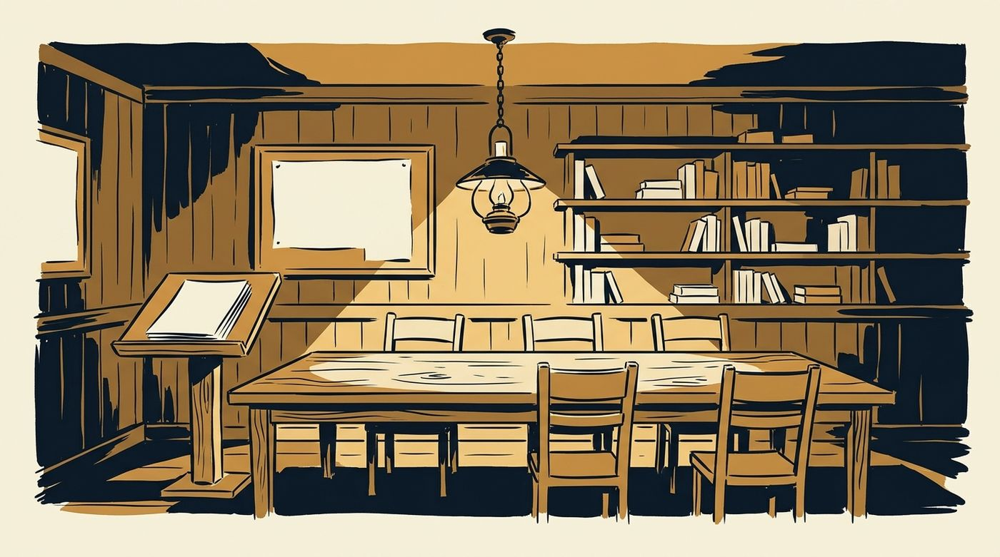
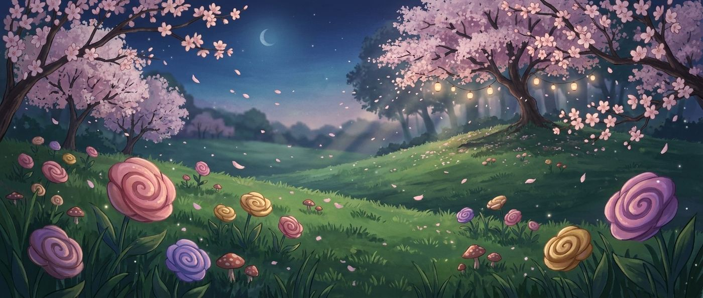
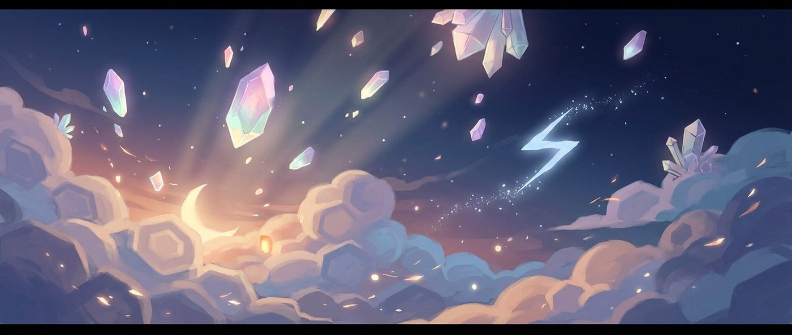
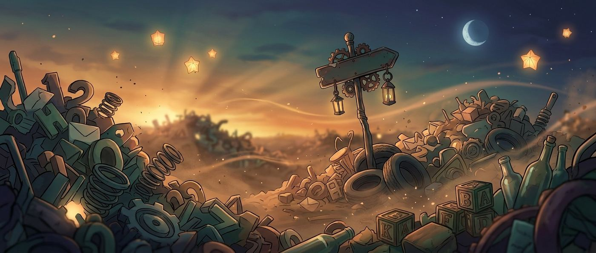
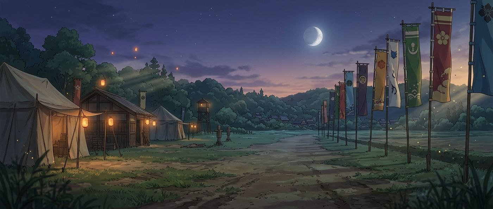
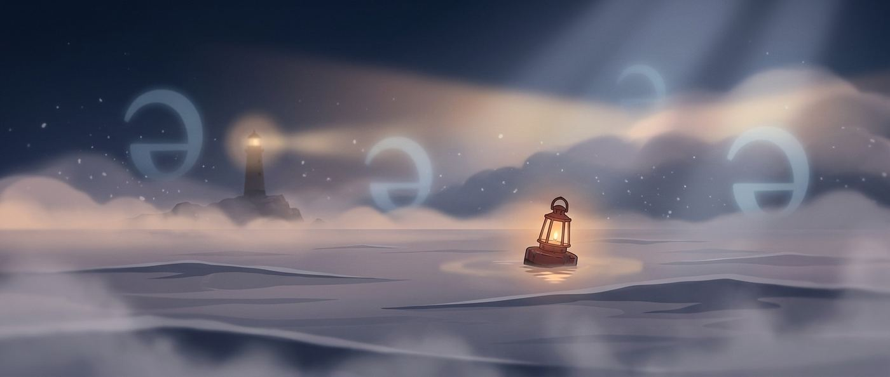

A general round, then a deep one, twenty-five times over
50 chapters1056 practice wordsquizzes & puzzles

WELCOME TO
The Roman Forum
Bizzing Bee · The Long Quiz1
The Long QuizHow this book works
General, then deep. Then again.
Every general round is followed by a speciality round that goes straight down one narrow hole — Norse gods, obscure rivers, minerals named after people. Nobody knows all of them. That is the point.
1
Rounds come in pairs
A general round to warm up, a speciality round to find out what you actually know.
2
The format keeps moving
Multiple choice, written answers, a crossword, a letter square. Never two the same in a row.
3
The key is at the back
Written answers are graded from the key. No peeking — Vex is guarding it.
4
The footnotes are the prize
Under every answer is the thing worth remembering. Read those even when you got it right.
Bizzing Bee · The Long Quiz2
Round 1 · General
india
A general round, drawn from the app’s own bank at its three hardest levels. Warm up here.

Bizzing Bee · The Long Quiz3
The Long Quizindia
1. The vast open-air rock relief often called Arjuna's Penance is at which site?
A Undavalli
B Mahabalipuram
C Ellora
D Badami
2. Which queen of Karnataka resisted British annexation as early as 1824?
A Kittur Chennamma
B Mangammal
C Rudramadevi
D Ahilyabai Holkar
3. The soup name mulligatawny comes from Tamil words meaning what?
A Hot leaves
B Milk broth
C Mixed rice
D Pepper water
4. India became a republic in 1950, meaning its head of state is what?
A Chosen by lottery
B Appointed for life
C Elected, not a monarch
D A prime minister
5. An American geologist's survey, a forest clearing in 1907, and a village called Sakchi launched which Indian venture?
A Godrej
B Hindustan Motors
C Bharat Heavy Electricals
D Tata Steel
Bizzing Bee · The Long Quiz4
The Long Quizindia
6. Gandhi returned to India for good from which country in 1915?
A South Africa
B England
C Burma
D Fiji
7. Which cricketer captained India in Tests and had earlier played Test cricket for England?
A Lala Amarnath
B C. K. Nayudu
C Iftikhar Ali Khan Pataudi
D Vijay Merchant
8. Which 1764 battle led directly to the Company gaining revenue rights over Bengal?
A Buxar
B Plassey
C Wandiwash
D Assaye
9. Which journal did Gandhi edit to spread his ideas in English?
A The Pioneer
B Young India
C Amrita Bazar Patrika
D The Hindu
10. Which tribal leader from the Chhotanagpur region led a movement for land rights in the 1890s?
A Kunwar Singh
B Tirot Sing
C Tantia Tope
D Birsa Munda
Bizzing Bee · The Long Quiz5
The Long Quizindia
11. Which Chola king led a daring naval expedition across the sea to Southeast Asia?
A Rajaraja II
B Aditya I
C Parantaka I
D Rajendra I
12. The name Vijayanagara means what?
A City of rivers
B City of victory
C City of light
D City of temples
13. A ten-character signboard, a bedrock reservoir and a stadium-sized ceremonial ground identify which Harappan city?
A Lothal
B Dholavira
C Harappa
D Kalibangan
14. Which Indian mathematician stated that dividing a number by zero gives an unbounded quantity?
A Varahamihira
B Bhaskara II
C Aryabhata
D Sridhara
15. India's Fundamental Rights were inspired largely by the constitution of which country?
A Australia
B France
C United States
D Japan
Bizzing Bee · The Long Quiz6
The Long Quizindia
16. A metallurgy scholarship, an unwanted government posting to a small Gujarat town, and a repaired cream separator launched whose career?
A Verghese Kurien
B J. R. D. Tata
C Homi Bhabha
D M. S. Swaminathan
17. The word sitar comes from a Persian phrase meaning what?
A Night song
B Long neck
C Sweet sound
D Three strings
18. Indus Valley houses often had their own bathrooms connected to covered street drains.
A False
B True
19. India's Directive Principles of State Policy were modelled largely on which country's constitution?
A Switzerland
B Japan
C Ireland
D Canada
20. Which Gupta-era astronomy text explains planetary positions and shadows?
A Rigveda
B Aryabhatiya only
C Surya Siddhanta
D Arthashastra
Bizzing Bee · The Long Quiz7
The Long Quizindia
21. Ashoka's pillars were quarried mostly from sandstone found near which place?
A Jaisalmer
B Karauli
C Chunar
D Makrana
22. The Sanskrit word for zero, shunya, literally means what?
A Round
B Small
C Empty
D Beginning
23. Gandhi was nominated for the Nobel Peace Prize several times but never received it.
A False
B True
24. The word mahout, an elephant handler, descends from a Sanskrit title meaning what?
A Beast keeper
B Great in measure
C Royal servant
D Forest guide
25. The Junagadh inscriptions repeatedly record repairs to what?
A A lake's dam
B A city gate
C A temple roof
D A harbour wall
Bizzing Bee · The Long Quiz8
The Long Quizindia
26. Iron-cased rockets, a mechanical tiger now in a London museum, and an arsenal at Woolwich that studied Indian designs point to which ruler?
A Ranjit Singh
B Bajirao II
C Nana Fadnavis
D Tipu Sultan
27. E. Sreedharan earned the nickname Metro Man for building which system?
A The Mumbai monorail
B The Kolkata tram
C The Delhi Metro
D The Konkan Railway only
28. The English suffix wallah, as in box-wallah, comes from an Indian ending meaning what?
A One who travels
B One who serves
C One who owns
D One connected with
29. The English word serendipity was coined from an old name for which island?
A Java
B Sri Lanka
C Bali
D Socotra
30. Which everyday English word for a small pattern of dots on cloth came from Indian trade?
A Houndstooth
B Tartan
C Gingham
D Chintz
Bizzing Bee · The Long Quiz9
Round 2 · Speciality
The Greek Gods
Twelve on the mountain and a great many more off it. The Romans renamed nearly all of them, which is why half of these words come to us twice.
Bizzing Bee · The Long Quiz10
The Long QuizThe Greek Gods
1. Which goddess was born from the sea foam, according to Hesiod?
A Demeter
B Hestia
C Aphrodite
D Artemis
2. Hephaestus was the god of the forge. What was unusual about him among the Olympians?
A He never spoke
B He was blind
C He was lame
D He was mortal
3. Which of the twelve Olympians gave up her seat so that Dionysus could have one?
A Hebe
B Hera
C Athena
D Hestia
4. The Muses were nine. Whose daughters were they?
A Apollo and Leto
B Poseidon and Amphitrite
C Zeus and Hera
D Zeus and Mnemosyne
5. What did Hermes carry that is still used as a symbol by some medical bodies, in error?
A The trident
B The aegis
C The caduceus
D The thyrsus
Bizzing Bee · The Long Quiz11
The Long QuizThe Greek Gods
6. Which Titan was punished by having an eagle eat his regenerating liver?
A Oceanus
B Cronus
C Prometheus
D Atlas
7. The word "panic" comes from which god?
A Poseidon
B Pluto
C Pan
D Phobos
8. Which river of the underworld gave English a word meaning "forgetful"?
A Styx
B Acheron
C Cocytus
D Lethe
9. Athena sprang fully armed from the head of Zeus. Whom had Zeus swallowed to bring this about?
A Maia
B Leto
C Themis
D Metis
10. Which goddess did the Romans call Ceres, giving English a word for breakfast?
A Persephone
B Gaia
C Demeter
D Rhea
Bizzing Bee · The Long Quiz12
The Long QuizThe Greek Gods
11. What was the aegis, carried by Zeus and Athena?
A A cap of invisibility
B A three-pronged spear
C A shield or breastplate bearing a gorgon’s head
D A winged sandal
12. Which nymph faded away until only her voice remained?
A Echo
B Calypso
C Thetis
D Daphne
Bizzing Bee · The Long Quiz13
Round 3 · General
explore
A general round, drawn from the app’s own bank at its three hardest levels. Warm up here.
Bizzing Bee · The Long Quiz14
The Long Quizexplore
Write your answers. The key is at the back.
1. Concorde's record New York to London crossing took under three hours.
2. Which deep-sea vehicle imploded in 2014 while exploring the Kermadec Trench?
3. Which cave complex on the Silk Road holds thousands of ancient paintings?
4. Which coat of arms did Spain grant Elcano, featuring a globe and spices?
5. Which navigator became the first Hawaiian in centuries to guide a canoe by traditional wayfinding?
6. Francis Drake's Golden Hind was renamed mid-voyage from the Pelican.
7. Which Arctic explorer's abandoned ship drifted free and was found years later off Greenland?
Bizzing Bee · The Long Quiz15
The Long Quizexplore
Write your answers. The key is at the back.
8. Which explorer made the first verified surface crossing to the North Pole, in 1969?
9. Which mission first tested the lunar module in space, in Earth orbit?
10. Which word means a route that goes around an obstacle rather than through it?
11. A stowaway packet of seeds, a command module pilot who never landed, and trees now growing on four continents describe which flight?
12. Which submersible discovered deep-sea hydrothermal vents in 1977?
13. Which American brought Machu Picchu to world attention in 1911?
14. Which Greek root in 'astronaut' also appears in 'Argonaut'?
Bizzing Bee · The Long Quiz16
The Long Quizexplore
Write your answers. The key is at the back.
15. Which place holds the record for the greatest average yearly rainfall?
16. Which bird did Pacific voyagers watch because it returns to land each evening?
17. A birth name of Ma He, a giraffe presented at court as a mythical qilin, and a stone stele at Changle identify whom?
18. Which Chilean weather station is famous for having recorded essentially no rainfall?
19. Which pioneering oceanographer is nicknamed Her Deepness?
20. Which condition, named for its whiteness, can blind climbers who lose their goggles?
21. A diagram of plant belts stacked like latitudes, an Ecuadorian volcano, and an altitude record unbroken for thirty years identify which mountain?
Bizzing Bee · The Long Quiz17
The Long Quizexplore
Write your answers. The key is at the back.
22. Which Apollo 11 alarm nearly forced a landing abort?
23. The word 'sextant' refers to which fraction of a circle?
24. A slingshot message onto a passing ship's deck, an abandoned certain victory, and a course set for Tahiti describe which sailor?
25. How long was Charles Lindbergh's 1927 solo flight from New York to Paris?
26. Seven months in prison for heresy, a Latin surname meaning 'merchant', and a grid that turns compass courses into straight lines identify whom?
27. In which year did Ernest Shackleton die, on his way south for one last expedition?
28. Which record does the Arctic tern hold among all animals?
Bizzing Bee · The Long Quiz18
The Long Quizexplore
Write your answers. The key is at the back.
29. Which ruler's 1324 pilgrimage across the Sahara became famous for its scale?
30. Which stone tablet records Zheng He's voyages and his thanks to a sea goddess?
Bizzing Bee · The Long Quiz19
Round 4 · Speciality
Norse Mythology
Four days of the English week are Norse gods. This round is written short — no options, just the answer, and the key is at the back.

Bizzing Bee · The Long Quiz20
The Long QuizNorse Mythology
Write your answers. The key is at the back.
1. Which Norse god gives his name to Wednesday?
2. What is the name of the world tree that holds the nine realms?
3. What did Odin give up in exchange for a drink from Mimir’s well of wisdom?
4. Name Thor’s hammer.
5. What is the Norse word for the doom of the gods — the final battle?
6. Which of Loki’s children is the wolf bound until Ragnarok?
7. What was the hall where Odin gathered half the warriors who died in battle?
Bizzing Bee · The Long Quiz21
The Long QuizNorse Mythology
Write your answers. The key is at the back.
8. What is the name of the eight-legged horse ridden by Odin?
9. The rainbow bridge between the realms of gods and men is called what?
10. Which Norse word for a fierce warrior gave English a term for uncontrolled rage?
11. Who is the trickster who brings about the death of Balder?
12. What are the three Norse fates called, collectively?
Bizzing Bee · The Long Quiz22
Round 5 · General
myth
A general round, drawn from the app’s own bank at its three hardest levels. Warm up here.
Bizzing Bee · The Long Quiz23
The Long Quizmyth
1. A water god who cracked a mountain holding up the sky, a tilted heaven, and rivers all running east point to whom?
A Xingtian
B Chiyou
C Gonggong
D Zhurong
2. The 'lycanthrope' in werewolf stories combines Greek words meaning what?
A Wolf plus human
B Hair plus man
C Night plus beast
D Moon plus hunter
3. In Geoffrey of Monmouth's history, what name is given to Arthur's sword?
A Clarent
B Excalibur
C Caliburn
D Galatine
4. Greek and Roman myths share the same gods under different names.
A False
B True
5. Which Roman priestesses kept a sacred flame burning and were chosen as children?
A The Sibyls
B The Vestals
C The Salii
D The Flamens
Bizzing Bee · The Long Quiz24
The Long Quizmyth
6. Which word describes a story feature that appears again and again, like a magic ring?
A A myth
B A meter
C A motif
D A moral
7. What does the word 'nymph' mean in Greek?
A A flower
B A water drop
C A young woman
D A spirit of air
8. A Celtic year cut into a bright half and a dark half, a feast marking the changeover, and a name joining a season to its close converge on which meaning?
A Fire night
B Feast of the dead
C Turning of the year
D Summer's end
9. In Polynesian legend, why did Maui catch the sun with ropes?
A To light a cave
B To make the days longer
C To win a bet
D To warm the sea
10. In Hindu myth, on which serpent does Vishnu rest between world ages?
A Vasuki
B Shesha
C Kaliya
D Takshaka
Bizzing Bee · The Long Quiz25
The Long Quizmyth
11. A lamp going out rather than a place arrived at, a Sanskrit verb for blowing, and a word borrowed by a famous rock band converge on which literal sense?
A Crossing over
B Sitting still
C Blowing out, as of a flame
D Rising up
12. An ageing vulture who challenged a flying chariot and lived just long enough to give directions points to whom?
A Kakabhushundi
B Garuda
C Sampati
D Jatayu
13. What is the name of Thor's magical hammer?
A Sharur
B Excalibur
C Gungnir
D Mjolnir
14. What does 'legend' mean on a map, and how is that linked to legends in stories?
A The map's title
B A list of place names
C A drawing of a hero
D The key explaining symbols, since both mean things to be read
15. What is a 'psychopomp' in the study of religion?
A A keeper of relics
B A dream reader
C A guide who leads souls onward
D A temple singer
Bizzing Bee · The Long Quiz26
The Long Quizmyth
16. Norse myth says Odin's spear Gungnir never misses its target.
A True
B False
17. An 'odyssey' means what kind of experience?
A A long, adventurous journey
B A clever trick
C A short holiday
D A hard battle
18. Why is a book of maps called an 'atlas'?
A Early ones showed the Titan holding up the world
B It means folded paper
C Maps were drawn in Atlantis
D It honours a Greek sailor
19. Walls that built themselves, a lyre with strings given by Hermes, and the seven gates of Thebes point to which musician?
A Amphion
B Thamyris
C Linus
D Orpheus
20. What is a 'winged messenger' called in Greek art?
A A river spirit
B A helper of heroes
C A herald of the gods
D A guardian of tombs
Bizzing Bee · The Long Quiz27
The Long Quizmyth
21. What does the word 'nectar' mean today, and where did it come from?
A A rare gem, from a Norse tale
B A honey cake, from a Greek feast
C Flower juice, from the gods' drink
D A perfume, from Egypt
22. A hundred unblinking eyes, a lullaby played on a reed pipe, and the pattern of a peacock's tail converge on which watchman?
A Argus
B Ladon
C Orthrus
D Talos
23. What does the word 'pantheon' mean when a writer speaks of the Egyptian pantheon?
A Its priesthood
B Its main temple
C Its creation story
D All its gods as a group
24. In Chinese myth, which mountain range is described as the home of gods and immortals?
A Kunlun
B Tianshan
C Wuyi
D Emei
25. In Maya myth, what are the names of the Hero Twins?
A Chaac and Ah Puch
B Kukulkan and Camazotz
C Hunahpu and Xbalanque
D Itzamna and Kinich
Bizzing Bee · The Long Quiz28
The Long Quizmyth
26. In Greek myth, which three judges decided a soul's fate in the underworld?
A Orpheus, Musaeus and Linus
B Minos, Rhadamanthus and Aeacus
C Charon, Hermes and Hades
D Cronus, Ophion and Nereus
27. In Japanese folklore, the yuki-onna appears as a woman made of what?
A Water
B Snow
C Mist
D Moonlight
28. In Egyptian myth, Shu is the god of air and Tefnut is the goddess of what?
A Stars
B Moisture
C Grain
D Sand
29. On whose island was Odysseus kept for seven years before the gods ordered his release?
A Circe's
B Nausicaa's
C Calypso's
D Aeaea's queen's
30. In Norse myth, how did Thor get his hammer back from the giant Thrym?
A He asked Odin for help
B He dressed as a bride
C He wrestled for it
D He traded his goats
Bizzing Bee · The Long Quiz29
Round 6 · Speciality
Rivers You Have Not Heard Of
Everyone can name the Nile. This round is the other ones — the rivers that matter enormously somewhere, and are unknown everywhere else.
Bizzing Bee · The Long Quiz30
The Long QuizRivers You Have Not Heard Of
1. The Irrawaddy is the great river of which country?
A Laos
B Cambodia
C Bangladesh
D Myanmar
2. Which river forms much of the border between Argentina and Uruguay?
A The Paraguay
B The Uruguay
C The Pilcomayo
D The Parana
3. The Ob is one of the longest rivers in the world. Into what does it drain?
A The Sea of Japan
B Lake Baikal
C The Arctic Ocean
D The Caspian Sea
4. Which African river flows through the Okavango Delta and never reaches the sea?
A The Okavango
B The Zambezi
C The Limpopo
D The Orange
5. The Murray is Australia’s longest river. Which is its principal tributary?
A The Darling
B The Fitzroy
C The Swan
D The Yarra
Bizzing Bee · The Long Quiz31
The Long QuizRivers You Have Not Heard Of
6. Which European river rises in the Black Forest and reaches the Black Sea?
A The Danube
B The Rhine
C The Elbe
D The Oder
7. The Mekong is called the Lancang in which country?
A Vietnam
B China
C Myanmar
D Thailand
8. Which South American river is the largest tributary of the Amazon by volume?
A The Tapajos
B The Madeira
C The Rio Negro
D The Xingu
9. The Indus gives its name to a country it barely touches. Which country does it mainly flow through?
A Pakistan
B Iran
C India
D Afghanistan
10. Which river runs through Baghdad?
A The Euphrates
B The Karun
C The Tigris
D The Diyala
Bizzing Bee · The Long Quiz32
The Long QuizRivers You Have Not Heard Of
11. The Yenisei divides which two halves of a continent?
A European and Asian Turkey
B Western and eastern Siberia
C Northern and southern China
D Eastern and western Mongolia
12. Which river’s name means "great river" in Spanish, making "Rio Grande River" a repetition?
A The Rio Bravo
B The Rio Tinto
C The Rio Grande
D The Rio Negro
Bizzing Bee · The Long Quiz33
Round 7 · General
lit
A general round, drawn from the app’s own bank at its three hardest levels. Warm up here.
Bizzing Bee · The Long Quiz34
The Long Quizlit
The clue is the meaning. The answer is the word.
Across
2. Which term names a word created by mistake from a misreading of an older text?
8. the 'Pinakes'?
9. Hardy set most of his novels in a half-invented English region he called…?
Down
1. The semicolon was first used in printing by the Venetian printer Aldus Manutius.
3. A river crossing
4. An architect's apprenticeship
5. A Greek colony in Asia Minor
6. Which Austen novel features the matchmaking heroine Emma Woodhouse?
7. Which Shakespeare play was written to be performed in a candlelit indoor theatre…
Bizzing Bee · The Long Quiz35
Round 8 · Speciality
Capitals of the World — the hard half
Not Paris. The capitals people get wrong, including three countries whose largest city is not their capital at all.

Bizzing Bee · The Long Quiz36
The Long QuizCapitals of the World — the hard half
Write your answers. The key is at the back.
1. What is the capital of Australia?
2. What is the capital of Turkey?
3. What is the capital of Canada?
4. What is the capital of Brazil?
5. What is the capital of Switzerland?
6. What is the capital of New Zealand?
7. What is the capital of Nigeria?
Bizzing Bee · The Long Quiz37
The Long QuizCapitals of the World — the hard half
Write your answers. The key is at the back.
8. What is the capital of Kazakhstan?
9. What is the capital of Bolivia’s judiciary — its constitutional capital?
10. What is the capital of Myanmar?
11. What is the capital of Morocco?
12. What is the capital of Vietnam?
13. What is the capital of Tanzania?
14. What is the capital of Sri Lanka?
Bizzing Bee · The Long Quiz38
Round 9 · General
eponyms
A general round, drawn from the app’s own bank at its three hardest levels. Warm up here.
Bizzing Bee · The Long Quiz39
The Long Quizeponyms
1. Which word meaning "number sequence" comes from an Italian mathematician?
A currant
B shallot
C pheasant
D Fibonacci
2. There was a Greek herald. His voice was said by Homer to equal that of fifty ordinary men. Which word grew out of it?
A gloxinia
B Stentorian
C cinchona
D grevillea
3. "Coriolanian" is named after a person.
A True
B False
4. Which word meaning "a wild, drunken celebration" comes from a Roman god of wine?
A Leninism
B Bacchanal
C Marxist
D Marxian
5. "Kaiser" is named after a person.
A False
B True
Bizzing Bee · The Long Quiz40
The Long Quizeponyms
6. There was a German mathematician. Closed non-orientable surface. Which name or term grew out of it?
A Klein Bottle
B limburger
C stilton
D worcestershire
7. "Irenic" is named after a place.
A True
B False
8. "Bonapartism" is named after a person.
A False
B True
9. There was a Danish bacteriologist. Differential staining technique for bacteria. Which name or term grew out of it?
A Bernoulli Effect
B Doppler Radar
C Coriolis Effect
D Gram Stain
10. "Down Syndrome" is named after a place.
A True
B False
Bizzing Bee · The Long Quiz41
The Long Quizeponyms
11. "Clytemnestran" is named after a place.
A True
B False
12. Which word meaning "majestic and genial" comes from a Roman king of the gods, also called Jupiter?
A Jovian
B Socratic
C Stoic
D Epicurean
13. There was a medieval philosopher. Scholastic philosophy integrating Aristotle with Christian theology. Which word grew out of it?
A wharton
B Thomistic
C cowper
D stensen
14. "plimsoll" is named after a person.
A True
B False
15. There was an Irish-born engineer. He found a single number that predicts whether flow will be smooth or turbulent. Which name or term grew out of it?
A Eurydicean
B Hebraic
C reynolds number
D Eumenidean
Bizzing Bee · The Long Quiz42
The Long Quizeponyms
16. "Samaritan" is named after a place.
A False
B True
17. There was a Scottish mathematician. He invented both logarithms and a set of numbered rods for multiplying. Which name or term grew out of it?
A napier bones
B Eumenidean
C Eurydicean
D Elysian
18. There was a German neurologist. First described progressive dementia in 1906. Which name or term grew out of it?
A Crohn Disease
B Non-Hodgkin Lymphoma
C Alzheimer Disease
D Hodgkin Lymphoma
19. There was a fire-breathing monster. Composite creature with lion, goat, and serpent parts. Which word grew out of it?
A Bernoulli Principle
B Chimera
C Bayes' Theorem
D Eulerian
20. There was a Roman god of wine. His festivals were famous for wild dancing and drinking. Which word grew out of it?
A Compton Effect
B Stark Effect
C Bacchic
D Hall–Petch Relationship
Bizzing Bee · The Long Quiz43
The Long Quizeponyms
21. Which word meaning "normally distributed" comes from a German mathematician?
A calico
B gentian
C Gaussian
D lobelia
22. There was an Italian physicist. He built the first battery, a stack of zinc and copper discs that produced steady current. Which word grew out of it?
A Doppler Radar
B Kelvin Scale
C Voltaic
D Bernoulli Effect
23. There was a Baltic German anatomist. He described the scavenging cells lining the liver's blood channels. Which word grew out of it?
A Aenean
B Vulcanian
C kupffer
D Adrian
24. Which word meaning "enduring hardship without complaint" comes from a Greek philosophy?
A shallot
B pheasant
C Stoic
D currant
25. There was an Italian astronomer. Large gap separating Saturn's rings. Which name or term grew out of it?
A Kirkwood Gaps
B Cassini Division
C Bode's Law
D Hohmann Transfer Orbit
Bizzing Bee · The Long Quiz44
The Long Quizeponyms
26. There was a river of forgetfulness in the Greek underworld. Souls drank from it to erase their memories before being reborn. Which word grew out of it?
A Lorentz Transformation
B Lorentz Force
C Maxwell's Equations
D Lethean
27. Which name or term meaning "orbiting space telescope" comes from an astronomer?
A Pavlova
B Earl Grey Tea
C Hubble Space Telescope
D Americano
28. Which word meaning "a hard felt hat with a rounded crown" comes from a london hatmakers?
A Galilean
B Galatean
C Gorgonize
D bowler
29. There was a German naturalist on the Russian Bering expedition. He described a sea cow, a jay, a sea eagle and a sea lion in a few weeks. Which word grew out of it?
A calico
B angora
C steller
D muslin
30. There was an English physician. Early term for kidney disease. Which name or term grew out of it?
A Bright Disease
B Paget Disease
C Ménière Disease
D Wilson Disease
Bizzing Bee · The Long Quiz45
Round 10 · Speciality
Shakespeare’s People
Not the plots — the people in them, including several everybody can quote without being able to name.
Bizzing Bee · The Long Quiz46
The Long QuizShakespeare’s People
1. Who says "The first thing we do, let’s kill all the lawyers"?
A Falstaff, in Henry IV
B Jaques, in As You Like It
C Iago, in Othello
D Dick the Butcher, in Henry VI Part 2
2. Which character speaks the "Tomorrow, and tomorrow, and tomorrow" speech?
A King Lear
B Macbeth
C Hamlet
D Prospero
3. In The Tempest, who is Prospero’s daughter?
A Miranda
B Perdita
C Sycorax
D Ariel
4. Who is the Queen of the Fairies in A Midsummer Night’s Dream?
A Titania
B Helena
C Hippolyta
D Hermia
5. Which character in Othello engineers the whole tragedy?
A Roderigo
B Iago
C Cassio
D Brabantio
Bizzing Bee · The Long Quiz47
The Long QuizShakespeare’s People
6. In King Lear, which daughter refuses to flatter her father?
A Cordelia
B Goneril
C Ophelia
D Regan
7. Who is the fat knight who appears in Henry IV and The Merry Wives of Windsor?
A Bardolph
B Bottom
C Falstaff
D Pistol
8. In Julius Caesar, who says "Et tu, Brute?"
A Cassius
B Mark Antony
C Brutus
D Caesar
9. Which weaver is given a donkey’s head in A Midsummer Night’s Dream?
A Snug
B Bottom
C Flute
D Quince
10. Who is Hamlet’s university friend, the one left alive to tell the story?
A Osric
B Horatio
C Laertes
D Rosencrantz
Bizzing Bee · The Long Quiz48
The Long QuizShakespeare’s People
11. In Twelfth Night, which character is tricked into wearing yellow stockings?
A Orsino
B Malvolio
C Feste
D Sir Andrew Aguecheek
12. Which of these is NOT a character in Romeo and Juliet?
A Benvolio
B Sebastian
C Mercutio
D Tybalt
Bizzing Bee · The Long Quiz49
Round 11 · General
body
A general round, drawn from the app’s own bank at its three hardest levels. Warm up here.

Bizzing Bee · The Long Quiz50
The Long Quizbody
Write your answers. The key is at the back.
1. Which two proteins slide past each other to make a muscle contract?
2. Which hormone, released by the adrenal glands, is often called the 'stress hormone'?
3. What does the saying “by the skin of your teeth” mean?
4. The deltoid muscle, shaped like a triangle, sits on which part of your body?
5. Which structure in the brain relays almost all incoming sensory signals?
6. Which little flap stops food from going down your windpipe when you swallow?
7. Which nerve carries pictures from your eye to your brain?
Bizzing Bee · The Long Quiz51
The Long Quizbody
Write your answers. The key is at the back.
8. The right lung has three lobes while the left lung has only two.
9. A bone named after an ancient gaming die, forming the top of the ankle joint and taking your full weight: which is it?
10. A dip in the retina named from the Latin for 'small pit', packed with cones, and the spot you unknowingly aim at every word you read: what is it?
11. Three fluid-filled loops set at right angles, an organ that reports every tilt of your head, and the reason spinning makes you giddy point to what?
12. How much blood does a grown-up body hold, roughly?
13. Your body sheds and rebuilds its outer layer of skin over and over throughout life.
14. Yellow bone marrow mainly stores fat, while red marrow makes blood cells.
Bizzing Bee · The Long Quiz52
The Long Quizbody
Write your answers. The key is at the back.
15. The word part 'pulmo', as in pulmonary, refers to which organ?
16. Which protein forms the tough mesh that holds a blood clot together?
17. What liquid in your stomach helps break down the food you eat?
18. The sense described by the word 'olfactory' is your sense of…?
19. The word 'artery' comes from an ancient root meaning…?
20. In anatomy, 'proximal' describes a position that is…?
21. What is the thin fluid that drains from your tissues into lymph vessels called?
Bizzing Bee · The Long Quiz53
The Long Quizbody
Write your answers. The key is at the back.
22. Your heart pumps blood through two separate circuits, one to the lungs and one to the body.
23. The liver receives blood from the gut before that blood reaches the rest of the body.
24. Where do the helpful bacteria of your gut microbiome mostly live?
25. What does the saying “keep at arm's length” mean?
26. What does the saying “bated breath” mean?
27. In an adult, most new red blood cells are made in the red marrow of which bones?
28. What are the wiggly, unmoving seams between the bones of your skull called?
Bizzing Bee · The Long Quiz54
The Long Quizbody
Write your answers. The key is at the back.
29. Which small pouch stores the bile your liver makes?
30. Why does your skin turn darker when you spend time in the sun?
Bizzing Bee · The Long Quiz55
Round 12 · Speciality
Minerals Named After People
A mineral may be named for the person who found it, the person who paid for the expedition, or a person the finder admired. Every one of these is an eponym, which makes them all spelling questions too.

Bizzing Bee · The Long Quiz56
The Long QuizMinerals Named After People
1. Goethite, an iron ore, is named after whom?
A The Goethe river
B A German village called Goethe
C Johann Wolfgang von Goethe
D Carl Goethe, a mine owner
2. Which element and its minerals are named after the woman who discovered polonium?
A Poloniumite
B Sklodovskite
C Curium
D Radium
3. Dolomite is named after Deodat de Dolomieu, who was what?
A A Spanish miner
B An Italian duke
C A Swiss mountaineer
D A French geologist
4. Smithsonite, a zinc carbonate, shares its namesake with which institution?
A The Royal Society
B The Smith College collection
C The Natural History Museum
D The Smithsonian Institution
5. Alexandrite changes colour from green to red. Whom is it named after?
A Alexandre Dumas
B Alexander von Humboldt
C Tsar Alexander II of Russia
D Alexander the Great
Bizzing Bee · The Long Quiz57
The Long QuizMinerals Named After People
6. Perovskite, now central to a class of solar cells, honours Lev Perovski, who was what?
A A Russian mineralogist and statesman
B A Polish chemist
C A Czech crystallographer
D A Ukrainian mine engineer
7. Which mineral is named after the chemist who isolated potassium and sodium?
A Faradayite
B Boyleite
C Davyne
D Priestleyite
8. Sillimanite is named for Benjamin Silliman, who taught at which university?
A Yale
B Princeton
C Columbia
D Harvard
9. Gadolinite honours Johan Gadolin. What did he discover?
A The first rare-earth element
B The first noble gas
C The first synthetic mineral
D The first radioactive element
10. Moissanite, used as a diamond substitute, was first found where?
A In a volcanic vent
B On the sea floor
C In a meteorite crater
D In a South African mine
Bizzing Bee · The Long Quiz58
The Long QuizMinerals Named After People
11. Which mineral is named after the Scottish chemist who described Brownian motion?
A Robertsonite
B Scotite
C Brownite
D None — Brownian motion is named after a botanist
12. Uraninite is named after a planet, which is itself named after what?
A A Greek sky god
B A Roman emperor
C A Latin word for "distant"
D A German astronomer
Bizzing Bee · The Long Quiz59
Round 13 · General
code
A general round, drawn from the app’s own bank at its three hardest levels. Warm up here.
Bizzing Bee · The Long Quiz60
The Long Quizcode
1. A 'hash function' takes any input and produces…?
A A password hint
B A fixed-length fingerprint
C A longer version of the input
D A picture
2. A name chosen deliberately as one step up from Perl, a Japanese creator seeking programmer happiness, and a colleague's July birthstone point to which language?
A Opal
B Ruby
C Pearl
D Jade
3. A 1991 magazine essay, a claim that the deepest technologies disappear from notice, and a vision its author called calm computing described computing as…?
A Ubiquitous and invisible
B Only for scientists
C Purely mechanical
D Centralised in one machine
4. A moth, a logbook page now in a museum, and the phrase 'first actual case of bug being found' converge on which machine?
A ENIAC
B The Harvard Mark II
C The Manchester Baby
D UNIVAC I
5. What does the 'S' in 'https' tell you about a website?
A The site is a shop
B The site is Swedish
C The connection is secure
D The page is short
Bizzing Bee · The Long Quiz61
The Long Quizcode
6. The 'QWERTY' layout is usually said to have been arranged to…?
A Suit left-handed typists
B Stop typewriter bars from jamming
C Match alphabetical order
D Fit the shortest words
7. Grace Hopper's team invented the very first compiler for a programming language.
A False
B True
8. The 'analytical' in Babbage's Analytical Engine points to a word meaning to…?
A Store information
B Build with metal
C Break something into parts to study it
D Add numbers quickly
9. Al-Khwarizmi's book title gave English another mathematical word besides 'algorithm'. Which one?
A Logarithm
B Algebra
C Zenith
D Cipher
10. A Dutch-born businessman flying to Moscow, handheld rights nobody had thought to claim, and a courtroom defeat that cost a rival its cartridges point to which company?
A Sega
B Commodore
C Philips
D Atari
Bizzing Bee · The Long Quiz62
The Long Quizcode
11. A man who wore his own computer daily for decades, the coinage sousveillance, and spectacles used as a display anticipated which product category?
A Smartwatches
B Fitness bands
C Earbuds
D Smart glasses
12. A hierarchy of comp, sci, rec, and talk, an upheaval of 1987 called the Great Renaming, and discussion groups older than the web describe which system?
A ARPANET
B Usenet
C Bitnet
D Fidonet
13. What does a 'pixel art' picture deliberately show off?
A Moving water
B Individual visible squares
C Blurry edges
D Only two colours
14. 'Version control' systems like Git let programmers…?
A Speed up their computers
B Track and undo every change over time
C Compress their files
D Encrypt their emails
15. Which of these was the first widely popular graphical web browser, released in 1993?
A Mosaic
B Opera
C Internet Explorer
D Netscape Navigator
Bizzing Bee · The Long Quiz63
The Long Quizcode
16. An essay contrasting a cathedral with a bazaar, a Linux kernel, and the phrase 'given enough eyeballs, all bugs are shallow' belong to whom?
A Bruce Perens
B Tim O'Reilly
C Richard Stallman
D Eric S. Raymond
17. 'Actuator', the part that makes a robot move, comes from a Latin verb meaning to…?
A Cut
B Bend
C Hold
D Drive or do
18. Hermann Hollerith's punched-card tabulating machines were first used at scale for what?
A A weather forecast
B A railway timetable
C A chess tournament
D A national census
19. Katherine Johnson's calculations were so trusted that John Glenn asked her to check the work of…?
A A rocket designer
B A flight engineer
C An electronic computer
D A weather forecaster
20. 'Copyleft' was coined as a deliberate pun, with the slogan 'All rights reversed'.
A True
B False
Bizzing Bee · The Long Quiz64
The Long Quizcode
21. Two telephones allowing one call, a thousand allowing half a million, and a rule named by Ethernet's co-inventor describe which law?
A Moore's law
B Metcalfe's law
C Reed's law
D Amdahl's law
22. A 'one-time pad' is the only cipher proved unbreakable, provided the key is…?
A Very long
B Changed weekly
C Truly random and never reused
D Written on paper
23. Reprogramming ENIAC for a new problem originally required operators to…?
A Change a magnetic tape
B Rewire cables and set switches by hand
C Type a few commands
D Insert a floppy disk
24. In 2011, an IBM computer named Watson beat human champions at which television quiz show?
A The Price Is Right
B Jeopardy!
C Family Feud
D Wheel of Fortune
25. What is a 'byte' usually just big enough to store?
A A whole word
B A short song
C A single letter
D One photograph
Bizzing Bee · The Long Quiz65
The Long Quizcode
26. Which was the first banner advertisement on the web, in 1994, and what did it ask?
A A Netscape ad
B A Yahoo ad
C An Amazon ad
D An AT&T ad asking 'Have you ever clicked your mouse right here?'
27. One month alone while his wife was away, a week each for shell, editor, and assembler, and the very first Unix point to which computer?
A A Univac 1108
B An IBM 7094
C A PDP-7
D A CDC 6600
28. Linux's mascot is a penguin named…?
A Kernel
B Pingu
C Nix
D Tux
29. 'Buffer overflow', a classic security flaw, happens when data is written…?
A In the wrong language
B Past the end of its allotted space
C Too slowly
D Twice over
30. Ralph Baer, who created the first home console, is often called the father of…?
A The touchscreen
B The compact disc
C Wireless internet
D Video games
Bizzing Bee · The Long Quiz66
Round 14 · Speciality
Words the Wars Left Behind
War is one of the fastest word factories in any language. These are ordinary English words that entered the language, or changed meaning entirely, on a battlefield.
Bizzing Bee · The Long Quiz67
The Long QuizWords the Wars Left Behind
Write your answers. The key is at the back.
1. Which word for a period of quiet in a battle now means a truce of any kind?
2. What word for a soldier’s temporary shelter comes from the French for "to make a noise"?
3. Which word, from the Hindi for "dusty", named a uniform colour?
4. What term for concealing equipment comes from the French for "to disguise"?
5. Which word for a sudden attack from cover comes from Old French for "to lie in wait in a wood"?
6. What word for an all-out bombardment comes from the German for "lightning war"?
7. Which word for the ground between opposing trenches is now used for any unclaimed territory?
Bizzing Bee · The Long Quiz68
The Long QuizWords the Wars Left Behind
Write your answers. The key is at the back.
8. What word for a small mobile group of soldiers now names a group of anything?
9. Which word for the total surrender of a position comes from Latin for "chapter"?
10. What word for a soldier’s food ration gave English a term for strict limiting of anything?
11. Which word meaning "to destroy one in ten" is now used to mean "to destroy almost all"?
12. What term for a soldier who has served long and hard now means an expert in any field?
13. Which word for the sudden noise and shock of shelling gave English a term for lasting distress?
14. What word for a defensive ditch and mound gave English a verb meaning "to dig in and refuse to move"?
Bizzing Bee · The Long Quiz69
Round 15 · General
weather
A general round, drawn from the app’s own bank at its three hardest levels. Warm up here.
Bizzing Bee · The Long Quiz70
The Long Quizweather
Answer each clue, then find the answer in the square.
1. Snow that looks pristine white can still contain traces of dust carried from thousands of…
2. On bitterly cold nights
3. A 'draught' (or draft) of cold air in a house means what?
4. 'Precipitation' comes from a Latin verb meaning to do what?
5. Which word correctly names a scientist who studies earthquakes, not weather?
6. Which of these is NOT a weather instrument?
7. The prefix 'hemi' in 'hemisphere' means what?
8. What does the saying “throw caution to the winds” mean?
9. Which dazzling planet is often called the Evening Star?
10. Words like 'fahrenheit'
11. Why is the sky blue?
12. Infrared satellite images of clouds are especially useful because they can be taken when?
Bizzing Bee · The Long Quiz71
Round 16 · Speciality
Constellations and Their Stories
Eighty-eight official constellations, and almost all the northern ones are Greek myths written on the sky.
Bizzing Bee · The Long Quiz72
The Long QuizConstellations and Their Stories
1. Which constellation is the hunter, with a belt of three bright stars?
A Bootes
B Perseus
C Orion
D Hercules
2. Cassiopeia is recognisable as which shape?
A A hook
B A triangle
C A W or M
D A cross
3. Which constellation contains the star Polaris?
A Cepheus
B Ursa Major
C Draco
D Ursa Minor
4. The Southern Cross appears on several national flags. What is its Latin name?
A Crux
B Centaurus
C Vela
D Carina
5. Which constellation is named for a lyre and contains Vega?
A Delphinus
B Aquila
C Cygnus
D Lyra
Bizzing Bee · The Long Quiz73
The Long QuizConstellations and Their Stories
6. Andromeda was chained to a rock as a sacrifice to which sea monster?
A Cetus
B Draco
C Hydra
D Scorpius
7. Which constellation was the ship Argo, before astronomers broke it into three?
A Pegasus
B Columba
C Argo Navis
D Auriga
8. Scorpius chased which hunter across the sky, so that the two are never visible at once?
A Bootes
B Perseus
C Sagittarius
D Orion
9. What does the name of the star Betelgeuse most likely mean in Arabic?
A The hand of the giant
B The heart of the lion
C The tail of the fish
D The eye of the bull
10. Which zodiac constellation is the only one representing an inanimate object?
A Libra
B Sagittarius
C Virgo
D Aquarius
Bizzing Bee · The Long Quiz74
The Long QuizConstellations and Their Stories
11. The Pleiades sit in which constellation?
A Taurus
B Gemini
C Cancer
D Aries
12. Which constellation’s name is Latin for "the swan", and flies down the Milky Way?
A Grus
B Pavo
C Phoenix
D Cygnus
Bizzing Bee · The Long Quiz75
Round 17 · General
quotes
A general round, drawn from the app’s own bank at its three hardest levels. Warm up here.
Bizzing Bee · The Long Quiz76
The Long Quizquotes
1. Who warned: 'It takes twenty years to build a reputation and five minutes to ruin it'?
A Jack Welch
B Charlie Munger
C Warren Buffett
D Bill Gates
2. A woman who checked an electronic computer's numbers before John Glenn would fly, and who said 'I counted everything', is whom?
A Dorothy Vaughan
B Annie Easley
C Mary Jackson
D Katherine Johnson
3. A term coined in 1967 for sideways problem-solving, a Maltese physician-author, and 'breaking out of established patterns' name whom?
A Arthur Koestler
B Ivan Illich
C Umberto Eco
D Edward de Bono
4. Which American essayist wrote that 'A friend may well be reckoned the masterpiece of nature'?
A Ralph Waldo Emerson
B Henry David Thoreau
C Oliver Wendell Holmes
D Walt Whitman
5. Mark Twain is described as an author and 'humorist.' A 'humorist' is...?
A a writer or speaker known for clever humor
B a person who laughs constantly
C a circus performer
D a newspaper editor
Bizzing Bee · The Long Quiz77
The Long Quizquotes
6. Which mathematician working for NASA said: 'I counted everything — the steps to the road, the steps up to church'?
A Mary Jackson
B Katherine Johnson
C Annie Easley
D Dorothy Vaughan
7. Will Rogers said: 'Everything is funny as long as it is happening to somebody else.' What truth is inside the joke?
A Laughter spreads pain
B Nothing is really funny
C We laugh more easily at troubles that aren't ours
D Comedy requires an audience
8. Franklin said 'Diligence is the mother of good luck.' 'Diligence' means...?
A natural talent
B cheerful confidence
C careful, steady hard work
D clever trickery
9. A polio vaccine deliberately left unpatented, a comparison to the sun, and 'the courage of those who dare to make dreams into reality' name whom?
A Jonas Salk
B Albert Sabin
C Hilary Koprowski
D John Enders
10. Vivekananda advised: 'Take up one idea. Make that one idea your ___.' Your what?
A secret
B hobby
C life
D motto
Bizzing Bee · The Long Quiz78
The Long Quizquotes
11. A ship crushed by pack ice, an 800-mile open-boat voyage to South Georgia, and the phrase 'Optimism is true moral courage' belong to whom?
A Douglas Mawson
B Ernest Shackleton
C Robert Falcon Scott
D Roald Amundsen
12. What does the Arabic proverb 'Ask the experienced rather than the learned' mean?
A Experience makes you forgetful
B People who have done a thing teach better than books alone
C Never trust teachers
D Old people know everything
13. Which mathematician said: 'It is through science that we prove, but through intuition that we discover'?
A David Hilbert
B Henri Poincare
C Bernhard Riemann
D Carl Friedrich Gauss
14. Who said: 'A life is not important except in the impact it has on other lives'?
A Willie Mays
B Jesse Owens
C Jackie Robinson
D Hank Aaron
15. Which PepsiCo leader said: 'You have to look people in the eye and tell them a story'?
A Indra Nooyi
B Ursula Burns
C Mary Barra
D Ginni Rometty
Bizzing Bee · The Long Quiz79
The Long Quizquotes
16. Twain defined courage as 'resistance to fear, mastery of fear, not ___ of fear.' Not what?
A memory
B cause
C absence
D control
17. Which inventor said: 'The chief function of the body is to carry the brain around'?
A Henry Ford
B Alexander Graham Bell
C Nikola Tesla
D Thomas Edison
18. A poem recited from memory when wind and glare defeated a prepared reading at a 1961 inauguration belongs to whom?
A Carl Sandburg
B Richard Wilbur
C Archibald MacLeish
D Robert Frost
19. Which Nobel poet said: 'There are worse crimes than burning books. One of them is not reading them'?
A Seamus Heaney
B Czeslaw Milosz
C Joseph Brodsky
D Derek Walcott
20. A book of maxims admired by Schopenhauer, a Jesuit's clash with his own order, and 'Friendship multiplies the good of life' identify whom?
A Francisco de Quevedo
B Baltasar Gracian
C Miguel de Cervantes
D Luis de Gongora
Bizzing Bee · The Long Quiz80
The Long Quizquotes
21. Grace Hopper said the most damaging phrase in the language is: 'We've always done it this ___.'
A way
B much
C week
D fast
22. Which British scientist and writer said: 'Earth and sky, woods and fields, lakes and rivers, are all excellent schoolmasters'?
A Thomas Huxley
B John Lubbock
C Charles Lyell
D Alfred Russel Wallace
23. Aquinas also warned: 'Beware of the person of one ___.'
A book
B promise
C idea
D friend
24. Tagore and Malala are Nobel laureates. 'Laureate' literally means...?
A crowned with laurel
B chosen one
C gold medalist
D highest scorer
25. Which mathematician said: 'There is geometry in the humming of the strings'?
A Pythagoras
B Eratosthenes
C Euclid
D Archimedes
Bizzing Bee · The Long Quiz81
The Long Quizquotes
26. Who said: 'Try to learn something about everything and everything about something'?
A John Stuart Mill
B Thomas Huxley
C Francis Bacon
D Herbert Spencer
27. Which geneticist wrote: 'Nothing in biology makes sense except in the light of evolution'?
A Ronald Fisher
B Theodosius Dobzhansky
C Ernst Mayr
D J. B. S. Haldane
28. Shakespeare's line 'Cowards die many times before their deaths; the valiant never taste of death but once' appears in Julius Caesar.
A False
B True
29. Who said: 'Not only is the Universe stranger than we think, it is stranger than we can think'?
A Wolfgang Pauli
B Paul Dirac
C Werner Heisenberg
D Niels Bohr
30. A telescope aimed at Jupiter, a trial before the Inquisition, and 'All truths are easy to understand once they are discovered' identify whom?
A Tycho Brahe
B Johannes Kepler
C Giordano Bruno
D Galileo Galilei
Bizzing Bee · The Long Quiz82
Round 18 · Speciality
The Periodic Table’s Namesakes
Places, planets, people and one Scandinavian village that got four elements to itself.
Bizzing Bee · The Long Quiz83
The Long QuizThe Periodic Table’s Namesakes
1. Four elements are named after a single village in Sweden. Which village?
A Uppsala
B Ytterby
C Falun
D Kiruna
2. Which element is named after the Greek word for "lazy" or "inactive"?
A Xenon
B Argon
C Neon
D Krypton
3. Einsteinium and fermium were both discovered in the debris of what?
A A particle accelerator
B A meteorite
C A hydrogen bomb test
D A uranium mine
4. Which element is named after the Greek for "hidden"?
A Lanthanum
B Iridium
C Selenium
D Krypton
5. Iridium takes its name from Iris. What was she goddess of?
A Memory
B The rainbow
C The sea
D The dawn
Bizzing Bee · The Long Quiz84
The Long QuizThe Periodic Table’s Namesakes
6. Which element is named after the Latin for "heavy stone"?
A Stibium (antimony)
B Wolfram (tungsten)
C Plumbum (lead)
D Barium
7. Cobalt is named after a creature from German folklore. What kind?
A A water spirit
B A goblin
C A dragon
D A giant
8. Which element is named after the Greek titan who stole fire?
A Uranium
B Promethium
C Tantalum
D Titanium
9. Tantalum is named after Tantalus, who was punished how?
A With food and water always just out of reach
B By being chained to a rock
C By being turned to stone
D By pushing a boulder uphill forever
10. Which element honours the woman who won Nobel Prizes in two different sciences?
A Curium
B Meitnerium
C Roentgenium
D Nobelium
Bizzing Bee · The Long Quiz85
The Long QuizThe Periodic Table’s Namesakes
11. Gallium is named after a place. Which one?
A France (Gallia)
B Galilee
C Wales
D Galicia in Spain
12. Which element is named after the smallest planet, and was discovered by studying the Sun?
A Tellurium
B Helium
C Selenium
D Mercury
Bizzing Bee · The Long Quiz86
Round 19 · General
food
A general round, drawn from the app’s own bank at its three hardest levels. Warm up here.
Bizzing Bee · The Long Quiz87
The Long Quizfood
Write your answers. The key is at the back.
1. Hawaiian pizza was invented in which country?
2. An army field ration bearing his initial, a Seven Countries study of heart disease, and the diet named for the Mediterranean point to which scientist?
3. The pasta name 'orecchiette' means little…?
4. Saffron, the priciest spice, comes from the threads of which flower?
5. Which chili pepper is the hottest?
6. The word 'brioche' comes from a French word meaning to…?
7. An Austrian city on the Danube, a lattice-topped tart of nuts and jam, and a claim to be the oldest cake known by name point to which dessert?
Bizzing Bee · The Long Quiz88
The Long Quizfood
Write your answers. The key is at the back.
8. The pasta name 'farfalle' comes from the Italian word for…?
9. Which of these is a whole grain that keeps its healthy outer layer?
10. The prefix 'omni-' in 'omnivore' means…?
11. Green tea differs from black tea mainly because green tea leaves are…?
12. To 'masticate' food means to…?
13. The word 'spatula' comes from a Latin word for a broad…?
14. Which of these is really a berry to scientists?
Bizzing Bee · The Long Quiz89
The Long Quizfood
Write your answers. The key is at the back.
15. Noodles milled from a seed that is not a true grain, a New Year's Eve tradition for long life, and a nutty gray strand point to which food?
16. The word 'biryani' comes from a Persian word meaning to…?
17. A 'steward' of a great house originally kept watch over the…?
18. Which country produces the most wheat in the world?
19. The growing of grapevines is called…?
20. A Massachusetts inn on an old toll road, a chocolate bar chopped instead of melted, and a recipe traded for a lifetime supply point to which invention?
21. Complete the saying: “everything has an end only the sausage has ____”
Bizzing Bee · The Long Quiz90
The Long Quizfood
Write your answers. The key is at the back.
22. Which soft, flat Indian bread is unleavened and cooked on a hot griddle?
23. A formerly enslaved scientist, hundreds of uses for a humble legume to rescue worn-out soil, and a myth crediting him with peanut butter point to which man?
24. The word 'aroma' comes from a Greek word meaning…?
25. Which small fruit is pressed for oil and changes from green to black as it ripens?
26. How many basic tastes can your tongue sense?
27. Beef Stroganoff is named after a wealthy noble family from which country?
28. The words 'grain' and 'granule' share a root meaning a small…?
Bizzing Bee · The Long Quiz91
The Long Quizfood
Write your answers. The key is at the back.
29. What does the saying “duck soup” mean?
30. A crystal from mint that fools a cold-sensing nerve, a rub for a stuffy nose, and after-dinner sweets point to which compound?
Bizzing Bee · The Long Quiz92
Round 20 · Speciality
Roots Hidden in Plain Sight
A crossword built from words whose meaning is sitting inside them, if you know the root. Solve the grid; the clue is the meaning of the parts.
Bizzing Bee · The Long Quiz93
The Long QuizRoots Hidden in Plain Sight
The clue is the meaning. The answer is the word.
Across
1. A remedy against all poisons — pan + akos, "cure"
3. Sleep-bringing — from Hypnos, the Greek god of sleep
5. One who studies the stars — astron plus nomos, "law"
6. Speaking many languages — poly + glotta, "tongue"
7. Under the earth — sub + terra
8. A word meaning "all-powerful" — omni + potens
9. Measuring the earth — ge, "earth", plus metron
Down
2. Coming before in time — ante + cedere, "to go"
4. Writing in beautiful hand — kallos, "beauty", plus graphein
Bizzing Bee · The Long Quiz94
Round 21 · General
langs
A general round, drawn from the app’s own bank at its three hardest levels. Warm up here.
Bizzing Bee · The Long Quiz95
The Long Quizlangs
1. A word or phrase whose letters are all in alphabetical order, like "almost," is sometimes called an...?
A Abecedarian word
B Ambigram
C Acrostic
D Anagram
2. The word "influenza" originally referred to the supposed influence of the...?
A Tides
B Seasons
C Stars
D Winds
3. Alfred Vail is credited by many historians with shaping Morse code by studying the contents of a...?
A Dictionary
B Telegraph ledger
C Printer's type case
D Ship's log
4. The word "tragedy" comes from Greek words apparently meaning...?
A Loud cry
B Goat song
C Falling hero
D Sad tale
5. Some languages, like Quechua and Turkish, use grammatical endings to show...?
A How far away you are
B How loud you are
C How you know something
D How old you are
Bizzing Bee · The Long Quiz96
The Long Quizlangs
6. Which language holds records for having one of the largest consonant inventories, including many clicks?
A Abkhaz
B Zulu
C Georgian
D Taa
7. A Polish eye doctor, a pen name meaning "one who hopes," and nouns that all end in O describe which language?
A Interlingua
B Esperanto
C Ido
D Volapuk
8. The word "lexicon" means a...?
A Sentence pattern
B Writing tool
C Type of accent
D Vocabulary or word-stock
9. The root "tract" in "tractor" and "attract" means...?
A Turn
B Pull or draw
C Cut
D Push
10. Turkey switched from Arabic script to the Latin alphabet in which decade?
A The 1870s
B The 1950s
C The 1990s
D The 1920s
Bizzing Bee · The Long Quiz97
The Long Quizlangs
11. Words like naff and zhoosh, a blend of Italian, Yiddish and Romani, and a 1960s BBC radio comedy popularised which secret vocabulary?
A Polari
B Backslang
C Cant
D Shelta
12. The mark called the interrobang combines a question mark with a...?
A Comma
B Exclamation mark
C Colon
D Hyphen
13. The word "thesaurus" literally means...?
A Second voice
B Treasure house
C Great book
D Word list
14. A Silk Road port Arabs called Zaitun, an ancient Greek name for the silk people, and Kashmir's goats explain how English got satin, silk and...?
A Corduroy
B Chiffon
C Cashmere
D Chintz
15. "OK" is understood in nearly every country on Earth.
A True
B False
Bizzing Bee · The Long Quiz98
The Long Quizlangs
16. Which ancient Italian language is still largely unread despite its alphabet being understood?
A Umbrian
B Latin
C Etruscan
D Oscan
17. An African grey parrot asking about colours, a bonobo at a symbol keyboard, and a chimpanzee named as a pun all featured in research on...?
A Bird migration
B Animal language ability
C Tool use
D Colour vision
18. Which English word for a number came from Arabic "sifr," meaning empty?
A Ten
B Zero
C Seven
D Million
19. Words like "moose," "raccoon" and "skunk" entered English from which language family?
A Salishan
B Iroquoian
C Algonquian
D Siouan
20. Cuneiform was first developed by which ancient people?
A The Sumerians
B The Phoenicians
C The Minoans
D The Hittites
Bizzing Bee · The Long Quiz99
The Long Quizlangs
21. A person who speaks many languages is a...?
A Polymath
B Polyglot
C Polyphone
D Polygon
22. Inuktitut in Canada is often written in a syllabic script adapted from one first made for which language?
A Icelandic
B Gaelic
C Mohawk
D Cree
23. The word "seersucker" comes from a Persian phrase meaning...?
A Wave and sand
B Sun and shade
C Milk and sugar
D Rough and smooth
24. The word "magazine" comes through Arabic from a word meaning...?
A Message
B Storehouse
C Manuscript
D Marketplace
25. The word "punctuation" comes from a Latin word meaning...?
A Pause
B Voice
C Line
D Point or prick
Bizzing Bee · The Long Quiz100
The Long Quizlangs
26. About how many words is Shakespeare credited with first using in print?
A Around 20,000
B Around 100,000
C Around 1,700
D Around 50
27. Which of these words came into English from Persian?
A Bureau
B Bazaar
C Ballot
D Balcony
28. Which claim about Eskimo languages and snow words is widely considered a linguistic myth?
A That they have no snow words
B That they cannot describe ice
C That they have hundreds of unrelated snow words
D That they borrowed the words
29. The German letter that looks like a B and represents a double s is called...?
A Yogh
B Eszett
C Umlaut
D Thorn
30. Which sport's vocabulary gave English "checkmate," from a Persian phrase meaning "the king is helpless"?
A Wrestling
B Chess
C Archery
D Polo
Bizzing Bee · The Long Quiz101
Round 22 · Speciality
Dynasties and Empires
The families that ran things, and how long they managed it.
Bizzing Bee · The Long Quiz102
The Long QuizDynasties and Empires
Write your answers. The key is at the back.
1. Which Chinese dynasty built most of the Great Wall as it stands today?
2. Which dynasty ruled Russia from 1613 until 1917?
3. Ashoka belonged to which Indian dynasty?
4. Which family ruled Florence and produced four popes?
5. Which dynasty ruled Egypt from Alexander’s general to Cleopatra?
6. Which European royal house is associated with the "Habsburg jaw"?
7. Which dynasty founded by Osman I lasted from about 1299 to 1922?
Bizzing Bee · The Long Quiz103
The Long QuizDynasties and Empires
Write your answers. The key is at the back.
8. The Tokugawa shogunate ruled Japan from which city?
9. Which Persian dynasty was defeated by Alexander the Great?
10. Which West African empire was ruled by Mansa Musa?
11. Which dynasty ruled England from 1485 to 1603?
12. Which South American empire had its capital at Cusco?
Bizzing Bee · The Long Quiz104
Round 23 · General
story
A general round, drawn from the app’s own bank at its three hardest levels. Warm up here.
Bizzing Bee · The Long Quiz105
The Long Quizstory
The clue is the meaning. The answer is the word.
Across
5. The Grimms' first edition was intended as a scholarly collection
6. In The Wizard of Oz, which of Dorothy's friends wishes for a brain?
7. Aesop's fables were originally written down by Aesop himself.
9. A book of maps is called an 'atlas' after a figure from Greek myth who did what?
Down
1. In Poe's most famous poem, the visiting raven repeats which single word?
2. The root 'myth' in 'mythology' comes from a Greek word meaning what?
3. In Twain's The Prince and the Pauper
4. In Andersen's tale, what does the Little Match Girl sell on the cold streets?
8. Dickens published many of his novels in monthly instalments before they were books.
Bizzing Bee · The Long Quiz106
Round 24 · Speciality
Instruments and the People Who Made Them
Half the orchestra is named after somebody, a place, or a noise.
Bizzing Bee · The Long Quiz107
The Long QuizInstruments and the People Who Made Them
1. The saxophone is named after Adolphe Sax, who was what nationality?
A Belgian
B Austrian
C German
D French
2. The sousaphone is named after a composer famous for what?
A Marches
B Symphonies
C Waltzes
D Operas
3. Stradivarius violins are named after a maker from which Italian city?
A Cremona
B Naples
C Florence
D Venice
4. The word "piano" is short for what?
A Pianissimo
B Pianola
C Pianetta
D Pianoforte
5. The theremin is played how?
A By blowing across strings
B By striking glass
C Without being touched
D With the feet
Bizzing Bee · The Long Quiz108
The Long QuizInstruments and the People Who Made Them
6. Which brass instrument’s name is Italian for "large trumpet"?
A Euphonium
B Cornet
C Trombone
D Tuba
7. The sitar’s name comes from a Persian word meaning what?
A Gourd body
B Sweet voice
C Long neck
D Three strings
8. What is a glockenspiel, literally?
A A hand drum
B A metal box
C A bell play
D A wood song
9. The harmonica is also known by which name, from a common use?
A Reed pipe
B Breath horn
C Mouth organ
D Wind box
10. The banjo most likely descends from instruments brought from where?
A Ireland
B Portugal
C West Africa
D The Caribbean
Bizzing Bee · The Long Quiz109
The Long QuizInstruments and the People Who Made Them
11. Which keyboard instrument’s name means "key-board" in its own language?
A Celesta
B Organ
C Clavier
D Spinet
12. A "cor anglais" is neither a horn nor English. What is it?
A A bass flute
B A large oboe
C A wooden clarinet
D A small trumpet
Bizzing Bee · The Long Quiz110
Round 25 · General
bugs
A general round, drawn from the app’s own bank at its three hardest levels. Warm up here.
Bizzing Bee · The Long Quiz111
The Long Quizbugs
1. How does a firefly make its glowing light?
A A little light bulb
B A chemical reaction in its body
C Sunlight it stored
D A tiny hot flame
2. The scientific name 'Apis mellifera' for the honeybee roughly means…?
A Honey-bearing bee
B Busy worker
C Golden flyer
D Wax maker
3. Some birds swallow small stones to help grind up their food.
A False
B True
4. Which powerful rainforest eagle has talons as large as a bear's claws?
A Sea eagle
B Bald eagle
C Harpy eagle
D Golden eagle
5. American settlers held 'quilting' and 'husking' gatherings; the same word now names which kind of contest?
A A spelling bee
B A hen night
C A crow call
D A duck race
Bizzing Bee · The Long Quiz112
The Long Quizbugs
6. Which flightless bird from New Zealand is nearly blind but has an excellent sense of smell?
A Ostrich
B Kiwi
C Penguin
D Emu
7. How does a young songbird learn its song?
A By listening to adults and practising
B It hatches knowing it
C By copying its parents' colours
D From its own heartbeat
8. The obsolete order name 'Isoptera', meaning 'equal wings', once covered which insects, now grouped with cockroaches?
A Lacewings
B Earwigs
C Mayflies
D Termites
9. The word 'swarm' can be used as a verb meaning to…?
A Build a nest
B Sting repeatedly
C Move in a large crowd
D Sleep together
10. Which bird lays the smallest eggs?
A Ostrich
B Hummingbird
C Swan
D Eagle
Bizzing Bee · The Long Quiz113
The Long Quizbugs
11. Why are the eggs of hole-nesting birds like owls usually plain white?
A White stays cooler
B White is stronger
C White is easier to make
D They are hidden, so camouflage is not needed
12. The word 'chrysalis' comes from a root meaning…?
A Silk
B Sleep
C Gold
D Shell
13. An insect's blood does not carry oxygen around its body.
A True
B False
14. Which bird's name became a verb meaning to abandon a bad habit abruptly, from an old phrase about plain speaking?
A Turkey
B Hawk
C Duck
D Crow
15. A bird that rides on giraffe and buffalo, grooms out ticks and earwax, and will keep a small wound open for a drink converge on which species?
A Weaver
B Sunbird
C Oxpecker
D Honeyguide
Bizzing Bee · The Long Quiz114
The Long Quizbugs
16. Which large bird is famous for dropping bones onto rocks to crack them open?
A Swan
B Bearded vulture
C Puffin
D Kestrel
17. Chicks that hatch blind, naked and helpless, needing much care, are called…?
A Aquatic
B Altricial
C Precocial
D Diurnal
18. A scale insect farmed on cactus pads in Oaxaca, a cargo Spain guarded like bullion, and the colouring E120 converge on which red?
A Ochre
B Madder
C Cochineal
D Vermilion
19. A 1699 voyage to Surinam, plates showing caterpillars beside their food plants, and a German artist later honoured on a banknote converge on which pioneer?
A Mary Anning
B Maria Sibylla Merian
C Beatrix Potter
D Marianne North
20. A pigment that both darkens a feather and toughens it, the reason so many white birds have black wingtips, and a chemical shared with human hair converge on which substance?
A Haemoglobin
B Melanin
C Keratin
D Carotenoid
Bizzing Bee · The Long Quiz115
The Long Quizbugs
21. A group name shared with the solemn gathering held after a funeral, and used for scavenging birds crowded on the ground, is which collective noun?
A Kettle
B Wake
C Exaltation
D Charm
22. 'Coccinellidae', the ladybird family name, comes from a root meaning…?
A Spotted
B Lucky
C Scarlet
D Small
23. Which bird uniquely digests leaves by fermenting them in an enlarged crop, rather like a cow?
A Ostrich
B Hoatzin
C Toucan
D Pelican
24. Which bird was once believed to be born from a barnacle on driftwood, a myth that shaped medieval fasting rules?
A Puffin
B Manx shearwater
C Barnacle goose
D Mute swan
25. Which of these is a real reason moths are important at night?
A They pollinate flowers that open after dark
B They warm the air
C They eat other moths
D They drink dew
Bizzing Bee · The Long Quiz116
The Long Quizbugs
26. Which bird hovers over reed beds with wings held in a shallow V?
A Kiwi
B Marsh harrier
C Ostrich
D Puffin
27. A researcher who painted numbers on the backs of bees, a Nobel Prize shared with Lorenz and Tinbergen, and the reading of a figure-of-eight dance converge on whom?
A Gregor Mendel
B Charles Darwin
C Karl von Frisch
D Louis Pasteur
28. What do we call an animal, like the hummingbird, whose diet is mainly flower nectar?
A Granivore
B Nectarivore
C Insectivore
D Piscivore
29. Whose SHADOW is this?
A Cricket
B Ladybird
C Ant
D Bee
30. A Pacific island corvid, twigs trimmed into hooks, and a captive bird named Betty bending wire converge on which species?
A Kea
B Common raven
C New Caledonian crow
D Eurasian jay
Bizzing Bee · The Long Quiz117
Round 26 · Speciality
Knots, Sails and the Sea
The sea gave English more idioms than any other trade. Find the words hidden in the square; every one of them came off a ship.
Bizzing Bee · The Long Quiz118
The Long QuizKnots, Sails and the Sea
Answer each clue, then find the answer in the square.
1. The lowest sail on a mast — also a standard of comparison
2. To reduce the area of a sail in strong wind
3. The right-hand side of a ship, looking forward
4. The left-hand side of a ship, looking forward
5. A ship’s kitchen
6. The rear of a vessel
7. The front of a vessel
8. A rope’s free end, or a person with no responsibilities
9. To lower a flag or sail suddenly
10. The depth of water a vessel needs to float
11. Wreckage found floating on the sea
12. Goods thrown overboard deliberately and washed ashore
Bizzing Bee · The Long Quiz119
Round 27 · General
words
A general round, drawn from the app’s own bank at its three hardest levels. Warm up here.
Bizzing Bee · The Long Quiz120
The Long Quizwords
Write your answers. The key is at the back.
1. Which pair of English words are etymological doublets, entering from two related languages?
2. Noah Webster's 'Blue-Backed Speller' mattered because it...?
3. What does “Armenophilia” mean?
4. The root 'micro' in 'microscope' means...?
5. A design that reads the same when turned upside down is called an...?
6. An eastern capital renamed in 330, a court famous for layer upon layer of ceremony, and an adjective for maddening complexity point to which word?
7. The prefix 'pre-' in 'preview' means...?
Bizzing Bee · The Long Quiz121
The Long Quizwords
Write your answers. The key is at the back.
8. What is the singular of 'data' in strict traditional usage?
9. An Oxford philologist who invented Elvish grammars, an essay called On Fairy-Stories, and his coinage for a story's sudden joyous turn point to which term?
10. The word 'trophy' comes from a Greek word meaning...?
11. 'Bass' the fish and 'bass' the low sound share spelling but not sound. They are...?
12. What does “Piedmontese” mean?
13. The little tail hooked under a vowel in Polish spelling is called an...?
14. The word 'hippopotamus' is built from Greek parts meaning 'river horse.'
Bizzing Bee · The Long Quiz122
The Long Quizwords
Write your answers. The key is at the back.
15. Which of these was a genuine letter of the Old English alphabet, later dropped?
16. The vowel change in sing, sang, sung is a Germanic pattern called...?
17. The word 'cute' began as a clipped form of which word?
18. The root 'scrib' in 'scribble' means...?
19. A 2004 coinage by an economics blogger, headline templates like 'X is the new Y', and a joke about Eskimo words for snow converge on which term?
20. What does the saying “split hairs” mean?
21. What does “aband” mean?
Bizzing Bee · The Long Quiz123
The Long Quizwords
Write your answers. The key is at the back.
22. A Greek word for a ship's steersman, Norbert Wiener's 1948 science of control systems, and a 1982 short story by William Gibson converge on which word?
23. If someone is 'nonplussed,' they are...?
24. Sounds like F, S and V, made by forcing air through a narrow gap, are called...?
25. The root 'ject' in 'reject' means...?
26. The word 'algorithm' comes from the name of a Persian mathematician.
27. The International Phonetic Alphabet was designed so that each symbol stands for one specific speech sound.
28. A row of runes named after its opening six letters, carvings on Scandinavian memorial stones, and the writing of the Vikings converge on which term?
Bizzing Bee · The Long Quiz124
The Long Quizwords
Write your answers. The key is at the back.
29. A sentence that asks a question is called...?
30. The prefix 'proto-' in 'prototype' means...?
Bizzing Bee · The Long Quiz125
Round 28 · Speciality
Deserts, Peaks and Deeps
The extremes of the map — the driest, the highest, the deepest and the coldest, and what they are actually called.
Bizzing Bee · The Long Quiz126
The Long QuizDeserts, Peaks and Deeps
1. Which is the driest non-polar desert on Earth?
A The Atacama
B The Namib
C The Sahara
D The Gobi
2. What is the largest desert in the world, by the proper definition?
A The Sahara
B The Gobi
C Antarctica
D The Arabian
3. Which is the deepest known point in any ocean?
A The Challenger Deep
B The Tonga Trench
C The Puerto Rico Trench
D The Java Trench
4. Measured from its own base on the sea floor, which mountain is the tallest?
A Everest
B Aconcagua
C Denali
D Mauna Kea
5. Which peak is the farthest point from the centre of the Earth?
A Everest
B Chimborazo
C Kilimanjaro
D Elbrus
Bizzing Bee · The Long Quiz127
The Long QuizDeserts, Peaks and Deeps
6. What is the lowest exposed land on Earth?
A Death Valley
B The shore of the Dead Sea
C The Qattara Depression
D The Turfan Depression
7. The Gobi Desert lies mainly in which two countries?
A Mongolia and Russia
B Mongolia and China
C China and Kyrgyzstan
D China and Kazakhstan
8. Which desert is famous for fog that supports life where rain does not fall?
A The Namib
B The Thar
C The Kalahari
D The Sonoran
9. What is the coldest permanently inhabited place on Earth generally said to be?
A Ushuaia, Argentina
B Oymyakon, Russia
C Barrow, Alaska
D Alert, Canada
10. Which is the largest hot desert?
A The Australian
B The Kalahari
C The Arabian
D The Sahara
Bizzing Bee · The Long Quiz128
The Long QuizDeserts, Peaks and Deeps
11. The Dead Sea is so salty because it has what?
A Volcanic vents
B Underground salt springs
C No outlet
D A sealed sea floor
12. Which is the largest sand island in the world?
A K’gari (Fraser Island)
B Sable Island
C Bazaruto
D Padre Island
Bizzing Bee · The Long Quiz129
Round 29 · General
plants
A general round, drawn from the app’s own bank at its three hardest levels. Warm up here.
Bizzing Bee · The Long Quiz130
The Long Quizplants
1. Which family includes cabbage, broccoli, kale, and Brussels sprouts?
A the nightshade family
B the lily family
C the mustard family
D the grass family
2. What does the saying “blaze a trail” mean?
A A teasing way to say someone should feel envious
B To stop yourself from saying something
C To be the first to do something, showing others the way
D Said instantly, without checking or thinking hard
3. Which plant hormone helps shoots bend and grow toward the light?
A auxin
B keratin
C insulin
D pepsin
4. Why do plants look green to our eyes?
A They are painted
B They are cold
C They hate sunlight
D They reflect green light
5. The prefix "gymno-" in "gymnosperm" and "gymnastics" means...?
A giant
B growing
C green
D naked
Bizzing Bee · The Long Quiz131
The Long Quizplants
6. Which US crop scientist promoted legume rotation to restore worn-out soil and published scores of peanut uses?
A John Muir
B George Washington Carver
C Norman Borlaug
D Luther Burbank
7. How long can a lotus seed stay alive before sprouting?
A About 1 week
B Over 1,000 years
C About 1 year
D About 50 years
8. Some plants can grow with no soil at all.
A True
B False
9. Which plant family includes tomatoes, potatoes, peppers, and aubergines?
A the nightshade family
B the rose family
C the carrot family
D the mint family
10. Which fine, powdery structures do ferns and mosses use to reproduce?
A bulbs
B spores
C tubers
D seeds
Bizzing Bee · The Long Quiz132
The Long Quizplants
11. Which type of tree is this?
A Conifer
B Palm
C Cactus
D Fern
12. A short-tongued bumblebee at a long-tubed flower, a hole chewed near the base, and a reward taken with no pollen moved describe what?
A nectar robbing
B mutualism
C herbivory
D buzz pollination
13. What does the saying “life is not a bed of roses” mean?
A If you missed the perfect moment to start, start now anyway
B To be embarrassed and lose others' respect
C Life includes hardship, not only comfort
D Fall apart emotionally, or stop working, under stress
14. A cactus's sharp spines are really a kind of leaf.
A True
B False
15. A monk in Brno, 28,000 pea plants, and a paper ignored for 34 years point to which scientist?
A Charles Darwin
B Gregor Mendel
C Louis Pasteur
D Carl Linnaeus
Bizzing Bee · The Long Quiz133
The Long Quizplants
16. Two cells bowing apart as they swell with water, a pore slammed shut in drought, and the gateway for every molecule of carbon dioxide describe what?
A palisade cells
B cork cells
C companion cells
D guard cells
17. Which giant cactus of the American Southwest can grow tall arms?
A sassafras
B sequoia
C sundew
D saguaro
18. The "Three Sisters" of Indigenous American farming are maize, beans, and...?
A peppers
B squash
C potatoes
D tomatoes
19. A grove named by settlers for a figure raising its arms in prayer depends on a single moth species. Which plant?
A the boojum tree
B the Joshua tree
C the saguaro
D the quiver tree
20. The world's largest living thing is a kind of animal.
A False
B True
Bizzing Bee · The Long Quiz134
The Long Quizplants
21. Some pine cones stay sealed until the heat of a fire opens them.
A True
B False
22. Which tree provided the wood for the English longbow, often imported by the shipload?
A yew
B oak
C elm
D beech
23. A coconut adrift for months, mangrove seedlings riding an outgoing tide, and a Greek root for water describe which dispersal method?
A anemochory
B zoochory
C myrmecochory
D hydrochory
24. The word "germinate" comes from Latin "germen," meaning a...?
A wave
B flame
C sprout or bud
D stone
25. Which fibre plant gives us both linen cloth and linseed oil, and the word "line"?
A sisal
B flax
C kapok
D cotton
Bizzing Bee · The Long Quiz135
The Long Quizplants
26. The root "gen" in "genus" and "genetics" carries the idea of...?
A green
B giant
C birth or kind
D ground
27. What do we call the way ivy holds onto a wall as it climbs?
A suction cups
B hooked thorns
C adhesive rootlets
D sticky sap
28. A monoculture field is planted with a single crop.
A True
B False
29. Which nutrient shortage most often turns a plant’s older leaves pale yellow?
A carbon
B silicon
C nitrogen
D oxygen
30. The word "conifer" is built from Latin roots meaning to bear...?
A cones
B fruit
C leaves
D thorns
Bizzing Bee · The Long Quiz136
Round 30 · Speciality
The Body in Latin and Greek
Medicine kept its old vocabulary, which means a good speller can very often work out what a word means without ever having been taught it.
Bizzing Bee · The Long Quiz137
The Long QuizThe Body in Latin and Greek
Write your answers. The key is at the back.
1. What does the prefix "cardi-" refer to?
2. What does "derm-" refer to?
3. What does the suffix "-itis" mean?
4. What does "hepat-" refer to?
5. What does the root "oss-" or "osteo-" refer to?
6. What does "-ectomy" mean at the end of a word?
7. What does "neur-" refer to?
Bizzing Bee · The Long Quiz138
The Long QuizThe Body in Latin and Greek
Write your answers. The key is at the back.
8. What does "pulmon-" refer to?
9. What does "-algia" mean?
10. What does "gastro-" refer to?
11. What does "ren-" or "nephro-" refer to?
12. What does "-osis" usually indicate?
13. What does "ocul-" or "ophthalm-" refer to?
14. What does "my-" or "myo-" refer to?
Bizzing Bee · The Long Quiz139
Round 31 · General
numbers
A general round, drawn from the app’s own bank at its three hardest levels. Warm up here.
Bizzing Bee · The Long Quiz140
The Long Quiznumbers
Answer each clue, then find the answer in the square.
2. What happens when you multiply any number by zero?
3. A punched-card tabulator
4. When rolling two dice, which total is the most likely?
5. How many time zones does China officially use, despite spanning five geographical ones?
6. A 9th-century book on 'restoring and balancing'
7. Which ancient people wrote numbers on wet clay tablets with a wedge-shaped stylus?
8. What are 'imaginary' numbers built from?
9. American cicadas stay underground for 13 or 17 years.
10. If today is Monday, what day will it be in 2 days?
11. Kurt Godel stunned mathematicians in 1931 by proving that any rich system of arithmetic…
12. Which of these numbers is a palindrome — the same forwards and backwards?
Bizzing Bee · The Long Quiz141
Round 32 · Speciality
Egypt, and the Names of the Gods
Three thousand years of it, and the names come to us through Greek — which is why almost none of them are what the Egyptians said.
Bizzing Bee · The Long Quiz142
The Long QuizEgypt, and the Names of the Gods
1. Which Egyptian god has the head of a jackal and attends the dead?
A Thoth
B Anubis
C Set
D Horus
2. Which god was the scribe of the gods, credited with inventing writing?
A Sobek
B Ptah
C Khnum
D Thoth
3. What was weighed against the heart of the dead in the hall of judgement?
A A grain of wheat
B A feather
C A drop of water
D A gold ring
4. Which goddess reassembled her murdered husband?
A Nephthys
B Bastet
C Hathor
D Isis
5. The Rosetta Stone carries the same text in three scripts. Which two Egyptian ones?
A Hieroglyphic and demotic
B Demotic and Coptic
C Hieroglyphic and hieratic
D Hieratic and Coptic
Bizzing Bee · The Long Quiz143
The Long QuizEgypt, and the Names of the Gods
6. What is the Egyptian symbol of life, a looped cross, called?
A Was
B Ankh
C Scarab
D Djed
7. Which pharaoh’s intact tomb was found in 1922?
A Hatshepsut
B Ramesses II
C Akhenaten
D Tutankhamun
8. Hatshepsut is notable for what?
A Defeating the Hittites
B Building the Great Pyramid
C Ruling as a female pharaoh
D Founding Alexandria
9. What does the word "pharaoh" originally mean?
A Great house
B Lord of two lands
C God on earth
D Son of the sun
10. Which animal-headed god was associated with chaos and the desert?
A Apis
B Set
C Anubis
D Bastet
Bizzing Bee · The Long Quiz144
The Long QuizEgypt, and the Names of the Gods
11. The scarab beetle was sacred because it was thought to do what?
A Carry messages to the gods
B Guide ships on the Nile
C Guard the entrance to tombs
D Roll the sun across the sky
12. What is a cartouche?
A A burial chamber
B A ceremonial boat
C An oval enclosing a royal name
D A type of papyrus
Bizzing Bee · The Long Quiz145
Round 33 · General
music
A general round, drawn from the app’s own bank at its three hardest levels. Warm up here.
Bizzing Bee · The Long Quiz146
The Long Quizmusic
1. An 'aria' is an opera's showpiece solo song. The word is Italian for…?
A Air
B Cry
C Star
D Jewel
2. A compact disc is read by a laser beam, with nothing touching the disc's surface.
A True
B False
3. Six symphonic poems about a homeland, the opening of Prague's National Theatre, and total deafness in his last years describe which composer?
A Zoltán Kodály
B Bedřich Smetana
C Antonín Dvořák
D Leoš Janáček
4. Which giant woodwind rumbles out the lowest notes in a symphony orchestra?
A The contrabassoon
B The bass clarinet
C The English horn
D The alto flute
5. The stretchy one-piece 'leotard' worn by dancers is named after Jules Léotard, a French…?
A Olympic swimmer
B Tailor
C Ballet master
D Trapeze artist
Bizzing Bee · The Long Quiz147
The Long Quizmusic
6. Blues music got its name because 'feeling blue' means feeling…?
A Sad
B Rich
C Cold
D Sleepy
7. What does the word 'quartet' tell you about the group's size?
A Ten players
B Six players
C Two players
D Four players
8. A classically trained pianist rejected by a Philadelphia conservatory, who played bar piano under an invented name so her family would not find out, was who?
A Roberta Flack
B Sarah Vaughan
C Ella Fitzgerald
D Nina Simone
9. The most treasured violins in the world were made around 1700 in Cremona, Italy, by…?
A Bartolomeo Cristofori
B Giuseppe Verdi
C Niccolò Paganini
D Antonio Stradivari
10. When a boy's voice deepens in his teens, people say his voice 'breaks'.
A True
B False
Bizzing Bee · The Long Quiz148
The Long Quizmusic
11. Clog dancing hammers out rhythms using what kind of footwear?
A Wooden-soled shoes
B Ballet slippers
C Bare feet
D Steel boots
12. Why do you see lightning before you hear the thunder?
A Your eyes react faster
B Light travels much faster than sound
C Sound bounces off clouds first
D Thunder starts later
13. The word 'symphony' breaks into roots that literally mean…?
A Loud brass
B Sounding together
C Many violins
D Royal concert
14. In Saint-Saëns' 'Carnival of the Animals', the graceful 'Swan' glides on which solo instrument?
A Cello
B Flute
C Violin
D Harp
15. How does a harpsichord, the piano's older cousin, make its sound?
A Air is pumped through pipes
B Metal bars are struck
C Its strings are plucked by little quills
D Its strings are bowed
Bizzing Bee · The Long Quiz149
The Long Quizmusic
16. Borrowing a slice of an old recording to build a new song is called…?
A Snipping
B Seeding
C Slicing
D Sampling
17. How does a hurdy-gurdy make its sound?
A Air is blown through pipes
B A bag squeezes air out
C Hammers strike metal bars
D A hand-cranked wheel rubs against the strings
18. The swing dance 'Lindy Hop' is said to be named after Charles Lindbergh's famous…?
A Broadway debut
B Race around the world
C Solo flight across the Atlantic
D Dance marathon win
19. A rectangular guitar built to his own design, and a hambone rhythm named after him, belong to which musician?
A Bo Diddley
B T-Bone Walker
C Sonny Boy Williamson
D Howlin' Wolf
20. The overtone-rich style called 'khoomei', in which a singer sounds two pitches at once, comes from…?
A Tatarstan
B Tibet
C Turkmenistan
D Tuva
Bizzing Bee · The Long Quiz150
The Long Quizmusic
21. The brass instrument called a 'cornet' has a name meaning…?
A Corner blower
B Little horn
C Bright call
D Curled tube
22. Roughly how many strings are stretched inside a full-size piano?
A 88
B 500
C 60
D 230
23. London's great theatre district, the rival of Broadway, is known as the…?
A West End
B Old Quarter
C Royal Row
D Thames Mile
24. The whirling Italian folk dance 'tarantella' is tangled up with the name of which creature?
A The nightingale
B The sea turtle
C The firefly
D The tarantula
25. A 'lyricist' is the person who writes a song's…?
A Words
B Drumbeat
C Album cover
D Guitar solo
Bizzing Bee · The Long Quiz151
The Long Quizmusic
26. 'Vibrato', the expressive shimmer in a singer's long notes, is technically a rapid…?
A Burst of breath
B Change of vowel
C Slight wavering of pitch
D Doubling of volume
27. Which song do crowds join hands and sing as the clock strikes midnight on New Year's Eve?
A 'Jingle Bells'
B 'Happy Days'
C 'Celebration'
D 'Auld Lang Syne'
28. What is a 'jam session'?
A Musicians playing together informally for fun
B A concert with free snacks
C A stuck piano key
D A recording contract meeting
29. 'Happy Birthday to You' became free for everyone to use after…?
A Its author was finally identified
B A songwriter donated it
C A UN vote
D A 2016 court settlement ended its copyright claim
30. The root 'audi' in audience, audition, and auditorium means…?
A To pay
B To move
C To see
D To hear
Bizzing Bee · The Long Quiz152
Round 34 · Speciality
The Money of the World
Currencies are mostly named after weights, kings, or the word for "round".
Bizzing Bee · The Long Quiz153
The Long QuizThe Money of the World
Write your answers. The key is at the back.
1. What is the currency of Japan?
2. What is the currency of Poland?
3. What is the currency of Turkey?
4. What is the currency of South Africa?
5. What is the currency of Thailand?
6. What is the currency of Sweden?
7. What is the currency of India?
Bizzing Bee · The Long Quiz154
The Long QuizThe Money of the World
Write your answers. The key is at the back.
8. What is the currency of Israel?
9. What is the currency of Vietnam?
10. What is the currency of Peru?
11. What is the currency of Ethiopia?
12. What is the currency of Ghana?
Bizzing Bee · The Long Quiz155
Round 35 · General
ocean
A general round, drawn from the app’s own bank at its three hardest levels. Warm up here.
Bizzing Bee · The Long Quiz156
The Long Quizocean
Write your answers. The key is at the back.
1. 'Aquatic' plants live in water; what does 'semi-aquatic' mean?
2. About how much of the Earth's surface is covered by ocean?
3. What do we call the deep ocean layer where no sunlight ever reaches?
4. A marker disc still visible 80 metres down, water almost as transparent as the distilled kind, and a sea named after a British sealing captain converge on which place?
5. About how much seawater can a single oyster filter and clean in one day?
6. How does a chambered nautilus control whether it floats or sinks?
7. What have researchers discovered about the calls of different orca pods?
Bizzing Bee · The Long Quiz157
The Long Quizocean
Write your answers. The key is at the back.
8. Which colourful reef fish eats coral and then produces fine white sand?
9. The scalding chimneys at some hydrothermal vents are nicknamed...?
10. The Roman god of the sea, whose name is also a planet, is...?
11. The 'windward' side of a ship or island is the side that...?
12. An animal described as 'benthic' lives on or near the ocean's...?
13. To 'fathom' a mystery means to understand it. The word first meant to measure the...?
14. Snails and sea slugs are 'gastropods', a name that literally means '...-foot'?
Bizzing Bee · The Long Quiz158
The Long Quizocean
Write your answers. The key is at the back.
15. A spot where the nearest humans are usually orbiting overhead, a graveyard for retired spacecraft, and a name borrowed from a Jules Verne captain converge on which place?
16. What is the name of the deepest place in the ocean?
17. Complete the saying: “between saying and doing lies the ____”
18. Which glowing bay in Puerto Rico is one of the brightest bioluminescent sites on Earth?
19. 'Longitude' lines tell a sailor how far they are...?
20. Whose SHADOW is this?
21. The word 'cruise' comes from a Dutch word meaning...?
Bizzing Bee · The Long Quiz159
The Long Quizocean
Write your answers. The key is at the back.
22. What do we call animals that make their own light in the deep sea?
23. Discovered in 2021, the kitefin shark earned which record?
24. Whose SHADOW is this?
25. What do we call the layer where warm surface water meets the cold deep water?
26. What does the saying “a shot across the bow” mean?
27. A naturalist's notes from an 1741 shipwreck, a nine-metre relative of the manatee, and extinction within 27 years of its discovery converge on which animal?
28. A 1951 bestseller called 'The Sea Around Us', years as a biologist for the US Fish and Wildlife Service, and a later book that transformed pesticide law converge on which writer?
Bizzing Bee · The Long Quiz160
The Long Quizocean
Write your answers. The key is at the back.
29. The right whale got its unfortunate name because whalers thought it was the 'right' whale to...?
30. Women divers of Jeju Island, a fishing tradition led by grandmothers, and a whistling exhale called sumbisori converge on which divers?
Bizzing Bee · The Long Quiz161
Round 36 · Speciality
The Roman Emperors
Some of them for decades, some of them for weeks. In one year there were four.
Bizzing Bee · The Long Quiz162
The Long QuizThe Roman Emperors
1. Who was the first Roman emperor?
A Augustus
B Tiberius
C Julius Caesar
D Nero
2. Which emperor built a wall across northern Britain?
A Trajan
B Septimius Severus
C Claudius
D Hadrian
3. Which emperor wrote the Meditations, a book of Stoic philosophy?
A Hadrian
B Marcus Aurelius
C Vespasian
D Antoninus Pius
4. Under which emperor did the Roman Empire reach its greatest extent?
A Diocletian
B Augustus
C Hadrian
D Trajan
5. Which emperor made Christianity legal across the empire?
A Constantine
B Theodosius
C Nero
D Julian
Bizzing Bee · The Long Quiz163
The Long QuizThe Roman Emperors
6. Which emperor divided the empire into four parts to be ruled together?
A Valens
B Honorius
C Diocletian
D Constantine
7. Which emperor is said to have made his horse a consul?
A Nero
B Elagabalus
C Commodus
D Caligula
8. Which emperor began the Colosseum?
A Vespasian
B Domitian
C Titus
D Nero
9. What was the "Year of the Four Emperors"?
A 193 AD
B 235 AD
C 96 AD
D 69 AD
10. Which emperor was the last to rule a united empire?
A Romulus Augustulus
B Constantine
C Theodosius I
D Justinian
Bizzing Bee · The Long Quiz164
The Long QuizThe Roman Emperors
11. The word "palace" comes from which Roman hill?
A The Quirinal
B The Palatine
C The Capitoline
D The Aventine
12. Which emperor’s name became the German and Russian words for emperor?
A Augustus
B Caesar
C Justinian
D Constantine
Bizzing Bee · The Long Quiz165
Round 37 · General
science
A general round, drawn from the app’s own bank at its three hardest levels. Warm up here.
Bizzing Bee · The Long Quiz166
The Long Quizscience
1. Which part of the brain controls balance and coordination?
A The spinal cord
B The lungs
C The cerebellum
D The heart
2. A word for the study of the origin and structure of the universe is...?
A Chronology
B Cryology
C Cosmology
D Cosmetology
3. A mythical king punished with fruit forever out of reach, an oxide that stubbornly refuses to absorb acid, and tiny capacitors converge on which metal?
A Tantalum
B Zirconium
C Niobium
D Titanium
4. Which travels faster, light or sound?
A Light
B Sound
C They are equal
D Neither moves
5. The 'reticulum' in 'endoplasmic reticulum' means...?
A Thin wall
B Inner tube
C Folded sheet
D Little net
Bizzing Bee · The Long Quiz167
The Long Quizscience
6. The word 'crater' comes from a Greek word meaning...?
A Round scar
B Fallen star
C Deep hole
D Mixing bowl
7. Which of these does NOT need a magnet to work?
A A fridge magnet
B A compass
C An electric motor
D A rubber band
8. What do we call the change of a gas directly into a solid, without becoming liquid?
A Boiling
B Freezing
C Deposition
D Melting
9. A Greek word for 'smell', a pungent oxide used to stain microscope samples, and the densest naturally occurring element converge on which metal?
A Iridium
B Tungsten
C Rhenium
D Osmium
10. What is the name of the deep puzzle over whether information that falls into a black hole is destroyed forever?
A The twin paradox
B The black hole information paradox
C Olbers' paradox
D The Fermi paradox
Bizzing Bee · The Long Quiz168
The Long Quizscience
11. A drooling dog, a bell rung before feeding, and a 1904 Nobel Prize for digestion research converge on which scientist?
A Konrad Lorenz
B B. F. Skinner
C Sigmund Freud
D Ivan Pavlov
12. X-ray studies of penicillin, a structure of vitamin B12, and the mapping of insulin in 1969 converge on which crystallographer?
A Dorothy Hodgkin
B Kathleen Lonsdale
C Rosalind Franklin
D Ada Yonath
13. What does a glass prism do to white light?
A Splits it into rainbow colours
B Bounces it straight back
C Makes it heavier
D Turns it into heat
14. All isotopes of an element have the same number of protons.
A True
B False
15. The root 'bio' in 'symbiosis' and 'biology' means...?
A Body
B Two
C Growth
D Life
Bizzing Bee · The Long Quiz169
The Long Quizscience
16. What do we call the pull that makes a compass point north?
A Friction
B Wind
C Earth's magnetism
D Gravity
17. Which blood protein binds oxygen in muscle tissue, distinct from haemoglobin?
A Myoglobin
B Keratin
C Insulin
D Collagen
18. The 'osteo' in 'osteology' and 'osteoporosis' refers to...?
A Skin
B Bone
C Muscle
D Blood
19. The word 'antibiotic' is built from parts meaning...?
A Against + life
B Before + illness
C Without + pain
D Good + health
20. Schrödinger coined the German word 'Verschränkung' for which quantum phenomenon?
A Combustion
B Entanglement
C Diffraction
D Radioactivity
Bizzing Bee · The Long Quiz170
The Long Quizscience
21. The prefix 'poly' in 'polymer' means...?
A Many
B Large
C Few
D Sticky
22. Which metal is a liquid at room temperature?
A Mercury
B Copper
C Iron
D Gold
23. Which metal is used in most household wiring because it conducts well?
A Lead
B Zinc
C Tin
D Copper
24. Which organ in the human body filters waste out of the blood to make urine?
A The liver
B The heart
C The kidneys
D The lungs
25. Arteries generally carry blood away from the heart.
A False
B True
Bizzing Bee · The Long Quiz171
The Long Quizscience
26. What do we call the process where rock is worn away by wind, water, or ice?
A Condensation
B Deposition
C Combustion
D Erosion
27. What does a prism do to white light?
A Bounces it straight back
B Turns it into heat
C Splits it into rainbow colors
D Makes it heavier
28. How hot is a lightning bolt compared with the Sun's surface?
A About five times hotter
B Twice as hot
C Exactly the same
D Half as hot
29. The root 'anatomy' contains 'tomy,' which means...?
A Cutting
B Melting
C Hiding
D Joining
30. The word 'solstice' is built from Latin words meaning...?
A Long + day
B High + noon
C Sun + to stand still
D Bright + turn
Bizzing Bee · The Long Quiz172
Round 38 · Speciality
Volcanoes, Faults and Deep Time
Geology has the best vocabulary of any science, and most of it is Latin for something obvious.
Bizzing Bee · The Long Quiz173
The Long QuizVolcanoes, Faults and Deep Time
1. What is molten rock called while it is still underground?
A Tephra
B Pumice
C Lava
D Magma
2. The 1883 eruption of Krakatoa was heard how far away?
A About 1,200 km
B About 500 km
C About 200 km
D About 4,800 km
3. Which volcano destroyed Pompeii?
A Stromboli
B Vesuvius
C Etna
D Vulcano
4. What is the hardest mineral on the Mohs scale?
A Topaz
B Quartz
C Corundum
D Diamond
5. What is the ring of volcanoes and faults around the Pacific called?
A The Andesite Line
B The Ring of Fire
C The Pacific Arc
D The Mid-Ocean Belt
Bizzing Bee · The Long Quiz174
The Long QuizVolcanoes, Faults and Deep Time
6. Which rock forms from cooled lava that trapped gas, and floats?
A Granite
B Obsidian
C Basalt
D Pumice
7. What does the word "caldera" mean?
A A crater
B A mouth
C A cauldron
D A pit
8. Which scale measures earthquake energy release, replacing the Richter scale for large quakes?
A The Rossi-Forel scale
B The Mercalli scale
C The Beaufort scale
D The moment magnitude scale
9. What is the boundary where two plates slide past each other called?
A A subduction zone
B A rift valley
C A hotspot
D A transform fault
10. What is obsidian?
A Volcanic glass
B Fossilised resin
C Compressed ash
D A metamorphic rock
Bizzing Bee · The Long Quiz175
The Long QuizVolcanoes, Faults and Deep Time
11. Which Icelandic word for a glacial flood caused by a volcano has entered English?
A Tundra
B Jokulhlaup
C Geyser
D Fjord
12. What is a "hotspot" volcano, such as Hawaii, sitting on?
A A plume of rising mantle
B A subducting slab
C A rift
D A plate boundary
Bizzing Bee · The Long Quiz176
Round 39 · General
animals
A general round, drawn from the app’s own bank at its three hardest levels. Warm up here.
Bizzing Bee · The Long Quiz177
The Long Quizanimals
The clue is the meaning. The answer is the word.
Across
2. What do we call a group of foxes?
5. Which of these animals does NOT lay eggs?
7. The order 'Hymenoptera'
9. Much of the white sand on a tropical beach has passed through which animal?
Down
1. What do we call a litter of piglets born together?
3. Which flightless bird is the national symbol of New Zealand?
4. The pufferfish carries a deadly toxin
6. The science called 'entomology' is the study of which creatures?
8. Which whale has a single long spiral tusk
Bizzing Bee · The Long Quiz178
Round 40 · Speciality
Codes, Ciphers and Secret Writing
The oldest arms race there is, and the one that eventually built the computer.
Bizzing Bee · The Long Quiz179
The Long QuizCodes, Ciphers and Secret Writing
Write your answers. The key is at the back.
1. What is a cipher that shifts every letter a fixed number of places called?
2. What machine did the Germans use to encipher messages in the Second World War?
3. What is the practice of hiding a message so that nobody knows it is there at all?
4. What is the study of breaking codes called?
5. Which Arab scholar described frequency analysis in the ninth century?
6. What is a cipher alphabet written on a strip wrapped round a rod called?
7. What language did American forces use as an unbreakable code in the Pacific?
Bizzing Bee · The Long Quiz180
The Long QuizCodes, Ciphers and Secret Writing
Write your answers. The key is at the back.
8. What is the name for a key used once and then destroyed, which is mathematically unbreakable?
9. What does the "public" in public-key cryptography mean?
10. What is the Vigenere cipher’s key innovation over the Caesar?
11. What is the term for the original readable message, before encryption?
12. Which undeciphered manuscript is written in an unknown script and full of unidentifiable plants?
Bizzing Bee · The Long Quiz181
Round 41 · General
machines
A general round, drawn from the app’s own bank at its three hardest levels. Warm up here.
Bizzing Bee · The Long Quiz182
The Long Quizmachines
1. Which machine did Herman Hollerith build to speed up the 1890 US census?
A Mechanical typewriter
B Adding wheel
C Punched-card tabulator
D Telegraph printer
2. In rocketry, what does 'ullage' refer to?
A Leaked propellant
B Excess weight at launch
C Unburnt residue in the nozzle
D The empty space above liquid in a tank
3. How quickly must an airbag inflate to be useful?
A In two seconds
B In about half a second
C In five seconds
D In about 30 thousandths of a second
4. Unimate, installed at a General Motors plant in 1961, was the world's first…?
A Robotic warehouse crane
B Automated paint sprayer
C Computer-controlled lathe
D Industrial robot on a production line
5. A cart carrying a figure whose arm always pointed the same way, a gear train working out the difference between two wheels, and no magnet anywhere describe which machine?
A The water-powered mill
B The armillary clock
C The odometer cart
D The south-pointing chariot
Bizzing Bee · The Long Quiz183
The Long Quizmachines
6. What does the acronym SONAR stand for?
A Sound Navigation And Ranging
B Sonic Navigation And Reach
C Submarine Observation And Range
D Sea Object Naval Radar
7. Which lever class has the effort applied between the fulcrum and the load?
A Third class
B First class
C Second class
D Fourth class
8. What is this machine that tells cars when to stop and go?
A Streetlamp
B Mailbox
C Traffic light
D Parking meter
9. How does the Curiosity rover generate electricity on Mars?
A Fuel cells
B Solar panels only
C Wind turbines
D Heat from decaying plutonium
10. An Ohio department-store janitor with a persistent cough, a soap box, a pillowcase and a fan motor, and a cousin's husband named Hoover invented what?
A The wet-dry extractor
B The carpet sweeper
C The floor polisher
D The portable upright vacuum cleaner
Bizzing Bee · The Long Quiz184
The Long Quizmachines
11. Which force pushes up on a boat and keeps it floating?
A Electricity
B Gravity
C Friction
D Buoyancy
12. A 'ferrule', the metal band on a tool handle, took its spelling from the Latin word for…?
A iron
B hard
C end
D binding
13. The word 'taxi' is short for 'taximeter', built from a word meaning…?
A travel
B town
C tariff or charge
D quick
14. Why do racing bicycles use very narrow, hard tyres?
A They cannot puncture
B They grip better in mud
C Less of the tyre flexes, so less energy is lost
D They are lighter than air
15. A wingspan of 97 metres, mostly birch rather than the wood in its nickname, and a single one-mile hop in 1947 describe which aircraft?
A Antonov An-225
B Boeing 314 Clipper
C Dornier Do X
D Hughes H-4 Hercules
Bizzing Bee · The Long Quiz185
The Long Quizmachines
16. Which clockmaker's marine chronometer H4 finally solved the longitude problem?
A Thomas Tompion
B George Graham
C John Harrison
D Christiaan Huygens
17. Which word describes a car body style whose name means 'little leap' in French?
A Coupe
B Cabriolet
C Saloon
D Estate
18. The word 'lever' comes from a French verb meaning…?
A to balance
B to bend
C to raise
D to press
19. The road surface 'tarmac' takes half its name from which engineer?
A Isambard Brunel
B Joseph Bazalgette
C Thomas Telford
D John Loudon McAdam
20. What does the engineering term 'calibrate' mean?
A Adjust an instrument against a known standard
B Repair a broken sensor
C Clean a moving part
D Speed up a machine
Bizzing Bee · The Long Quiz186
The Long Quizmachines
21. A diesel engine has no spark plugs.
A True
B False
22. A wristwatch ordered from Cartier so he could read the time in flight, an airship moored outside a Paris restaurant, and a 1906 hop before official judges describe whom?
A Henri Farman
B Louis Bleriot
C Alberto Santos-Dumont
D Gabriel Voisin
23. Titanium quietly bought through intermediaries, panels that only sealed once hot, and a design office nicknamed after a comic-strip still describe whose team?
A Barnes Wallis's team at Vickers
B Kelly Johnson's Skunk Works
C Ed Heinemann's Douglas team
D Sydney Camm's Hawker office
24. 5,127 prototypes, a frustration with clogged bags, and a spinning column of air borrowed from sawmills led to which machine?
A Bagless cyclonic vacuum cleaner
B Steam mop
C Robot floor cleaner
D Wet-and-dry shop vacuum
25. A car's 'dashboard' was originally a board that…?
A stopped mud dashing up from the horses
B carried spare tools
C showed the route
D held the driver's lantern
Bizzing Bee · The Long Quiz187
The Long Quizmachines
26. ENIAC, switched on in 1945, did its calculations using around 18,000…?
A Punched cards
B Transistors
C Relays
D Vacuum tubes
27. Malcolm McLean's 1956 voyage of the Ideal X launched which idea?
A Standard shipping containers
B Supertankers
C Refrigerated cargo
D Roll-on ferries
28. A two-metre gold-coloured figure that walked, counted on its fingers, and had a mechanical dog called Sparko, appeared at which event?
A The 1964 Tokyo Olympics
B The 1900 Paris Exposition
C The 1939 New York World's Fair
D The 1851 Great Exhibition
29. What does the saying “burn the midnight oil” mean?
A Already decided, with no room for change
B To work late into the night
C To pile all the blame on one person
D To defeat someone totally and easily
30. What is a 'slew ring' on an excavator or crane?
A The bucket hinge
B The track tensioner
C The counterweight bolt
D The big bearing letting the top rotate on the base
Bizzing Bee · The Long Quiz188
Round 42 · Speciality
The Silk Road
Not a road, and not only silk. A network of routes that moved goods, religions, diseases and words for fifteen hundred years.
Bizzing Bee · The Long Quiz189
The Long QuizThe Silk Road
1. What was the eastern end of the Silk Road, in most periods?
A Kaifeng
B Beijing
C Guangzhou
D Chang’an (modern Xi’an)
2. Which desert did the routes split to avoid, going north and south?
A The Taklamakan
B The Karakum
C The Gobi
D The Thar
3. Which religion spread from India to China largely along these routes?
A Zoroastrianism
B Manichaeism
C Nestorian Christianity
D Buddhism
4. What did the Chinese guard as a state secret for centuries?
A How porcelain is fired
B How silk is made
C How gunpowder is mixed
D How paper is made
5. Which city in modern Uzbekistan was a great Silk Road hub under Timur?
A Samarkand
B Bukhara
C Tashkent
D Khiva
Bizzing Bee · The Long Quiz190
The Long QuizThe Silk Road
6. Which Venetian’s account of the route became the most famous in Europe?
A Odoric of Pordenone
B Marco Polo
C Niccolo Conti
D Giovanni Carpini
7. What disease is generally thought to have travelled west along these routes in the 1340s?
A Smallpox
B Typhus
C Cholera
D The Black Death
8. Paper-making reached the Islamic world after which battle, from captured craftsmen?
A Badr, 624
B Manzikert, 1071
C Talas, 751
D Ain Jalut, 1260
9. Which animal made the desert crossings possible?
A The Bactrian camel
B The yak
C The mule
D The dromedary
10. Which fruit’s English name comes from the Persian for "peach of Armenia"?
A Apricot
B Pomegranate
C Quince
D Nectarine
Bizzing Bee · The Long Quiz191
The Long QuizThe Silk Road
11. Which Chinese invention reached Europe by these routes and changed warfare?
A The stirrup
B The crossbow
C The compass
D Gunpowder
12. What were the caravan inns along the route called?
A Madrasas
B Caravanserais
C Bazaars
D Khanates
Bizzing Bee · The Long Quiz192
Round 43 · General
sports
A general round, drawn from the app’s own bank at its three hardest levels. Warm up here.
Bizzing Bee · The Long Quiz193
The Long Quizsports
Write your answers. The key is at the back.
1. Why do sprinters push off from starting blocks at the start of a race?
2. An 18th-century touring 'automaton' in a turban, hidden sliding panels and a concealed human master, and games against Napoleon converge on which famous hoax?
3. A gaming board among a boy king's grave goods, thirty squares in three rows, and throwing sticks used instead of dice describe which ancient game?
4. An 1892 speech at the Sorbonne, a committee founded in 1894, and a lifelong belief in education through sport point to which figure?
5. How many pieces does each chess player start with?
6. A Chennai prodigy nicknamed the 'Lightning Kid', a 2000 world title won in Tehran, and five world championship reigns in three formats point to which chess player?
7. A Welsh major's 1874 patent, an hourglass-shaped court, and a tongue-twisting Greek name that nobody used converge on the birth of which sport?
Bizzing Bee · The Long Quiz194
The Long Quizsports
Write your answers. The key is at the back.
8. In gymnastics, what does 'sticking the landing' mean?
9. In tennis, a serve so good the opponent cannot even touch the ball is an...?
10. Ribbon, hoop, ball, and clubs are apparatus in which Olympic sport?
11. Chess's 'fifty-move rule' allows a player to claim what?
12. A stolen bicycle reported to a Louisville policeman, an Olympic light-heavyweight gold in 1960, and a name changed in 1964 converge on which athlete?
13. The 'Queensberry Rules', which introduced gloves and timed rounds, govern which sport?
14. How many colored faces does a standard Rubik's Cube have?
Bizzing Bee · The Long Quiz195
The Long Quizsports
Write your answers. The key is at the back.
15. At the Olympics the decathlon is contested by men and the heptathlon by women.
16. In American football, what is an 'interception'?
17. A Brazilian sport played on hard courts with a heavier, low-bouncing ball, born on the streets of 1930s Uruguay, is known as what?
18. In tennis, what is a 'double fault'?
19. 'Dressage', the elegant horse-training discipline, literally means what?
20. In snooker, potting the black ball is worth more than potting the pink.
21. The word 'tournament' shares a root with which everyday word?
Bizzing Bee · The Long Quiz196
The Long Quizsports
Write your answers. The key is at the back.
22. Which change to football's offside law in 1925 caused goal totals to leap almost overnight?
23. The athlete's 'biceps' muscle has a name that literally means...?
24. In fencing, what is a 'parry'?
25. In golf, what is a 'caddie'?
26. During baseball's 'seventh-inning stretch', what do fans traditionally do?
27. A Brooklyn debut in April 1947, a number 42 now retired by every team, and a college career in four sports converge on which athlete?
28. A javelin thrower spins in a full circle before releasing the javelin.
Bizzing Bee · The Long Quiz197
The Long Quizsports
Write your answers. The key is at the back.
29. Which gymnastics event uses a leather-topped 'horse' with two handles on top?
30. How many frames make up one full game of ten-pin bowling?
Bizzing Bee · The Long Quiz198
Round 44 · Speciality
Words from the Kitchen
Cooking words come from everywhere, and most of them describe an action rather than a dish. Find them in the square.
Bizzing Bee · The Long Quiz199
The Long QuizWords from the Kitchen
Answer each clue, then find the answer in the square.
1. The place-name ending '-grad', as in Volgograd, means...?
2. A failed 1802 climb by Alexander von Humboldt
3. Why does the area near the equator get the most heat from the Sun?
4. In place names such as Aberdeen and Inverness, 'aber' and 'inver' both mean...?
5. Which continent contains the countries Suriname, Guyana and Uruguay?
6. 'Geothermal' energy uses heat from where?
7. Algeria's Arabic name, al-Jaza'ir, means...?
8. Which word means moving from one country or region to another to live?
9. A 1714 act of parliament
10. The Russian port name 'Vladivostok' means...?
11. Which two countries each share land borders with 14 other nations, more than any others?
12. Which lake holds the most fresh water and is the deepest on Earth?
Bizzing Bee · The Long Quiz213
Round 48 · Speciality
Trees and What They Are For
Every one of these trees gave English at least one word, and most gave a trade.
Bizzing Bee · The Long Quiz214
The Long QuizTrees and What They Are For
Write your answers. The key is at the back.
1. Which tree’s wood was traditionally used for English longbows?
2. Which tree produces the cork used in bottles?
3. From which tree do we get the drug aspirin’s original compound?
4. Which tree is the source of natural rubber?
5. Which tree’s seeds give us chocolate?
6. Which tree gives the world’s tallest living specimens?
7. Which tree, sacred in India, is a fig that drops aerial roots to form new trunks?
Bizzing Bee · The Long Quiz215
The Long QuizTrees and What They Are For
Write your answers. The key is at the back.
8. Which tree is the source of the spice cinnamon?
9. Which conifer is deciduous, losing its needles every autumn?
10. Which tree species is considered a living fossil, unchanged for 200 million years, with fan-shaped leaves?
11. From which tree does the timber teak come, prized for shipbuilding?
12. Which tree gives us maple syrup, and how many litres of sap make one of syrup?
Bizzing Bee · The Long Quiz216
Round 49 · General
space
A general round, drawn from the app’s own bank at its three hardest levels. Warm up here.
Bizzing Bee · The Long Quiz217
The Long Quizspace
1. Why are craters near the Moon's poles especially interesting to scientists?
A Sunlight never reaches their floors, so ice can survive
B They are the deepest
C They glow at night
D They contain gold
2. True or False: A shooting star is usually a small rock, not a real star.
A True
B False
3. What did astronomers name the first confirmed visitor from beyond our solar system?
A Oumuamua
B Andromeda
C Pegasus
D Perseus
4. Why is the Sun's yearly path across our sky called the 'ecliptic'?
A It eclipses the stars
B Eclipses happen only when the Moon crosses it
C It was named after a Greek king
D It marks the edge of the sky
5. True or False: Saturn would float if you could drop it into a giant ocean of water.
A False
B True
Bizzing Bee · The Long Quiz218
The Long Quizspace
6. What surprising thing did radar mapping reveal beneath Venus's clouds?
A Deep oceans
B Vast forests
C Polar ice caps
D Thousands of volcanoes
7. What is 'terraforming' an idea about?
A Changing a planet to be more Earth-like
B Building rock walls on Mars
C Mapping planet surfaces
D Farming inside spacecraft
8. Which lasts longer: a total solar eclipse or a total lunar eclipse?
A A total lunar eclipse
B A total solar eclipse
C Neither lasts a minute
D They are equal
9. Which colour do oxygen atoms high in our atmosphere usually glow during an aurora?
A Brown
B Green
C Purple
D Orange
10. The constellation 'Draco' takes its name from which creature?
A A deer
B A dove
C A dolphin
D A dragon
Bizzing Bee · The Long Quiz219
The Long Quizspace
11. Listen to Bizzy's riddle!
A Mercury
B Saturn
C Uranus
D Neptune
12. True or False: You would weigh exactly the same on the Moon as on Earth.
A False
B True
13. Temperatures on the Moon swing between roughly what extremes?
A Around 120 C in sun and -130 C in shade
B Around 40 C and 0 C
C Always around 15 C
D Always about -20 C
14. Which award-winning phrase describes the boundary dispute over where 'astronaut' status begins?
A The Gagarin threshold
B The orbital minimum
C The 50-mile versus 100-kilometre debate
D The stratosphere rule
15. What is a CubeSat?
A A cube of Moon rock
B A rocket fuel tank
C A tiny standard-sized satellite built from small cubes
D A cube-shaped space station
Bizzing Bee · The Long Quiz220
The Long Quizspace
16. The word 'almanac', a book of sky and calendar tables, entered European languages from which language?
A Arabic
B Norse
C Basque
D Finnish
17. Which invisible substance seems to hold galaxies together with extra gravity?
A Cosmic dust
B Dark chocolate
C Dark matter
D Solar wind
18. Which star sits almost directly above Earth's North Pole?
A Polaris
B The Sun
C Sirius
D Vega
19. What did the LIGO detectors first observe directly in 2015?
A Gravitational waves from two merging black holes
B A new comet
C Dark matter particles
D Radio signals from a pulsar
20. A bishop who lent his church as a workshop, rocket parts carried on bicycles and bullock carts, and a fishing village chosen for sitting on the magnetic equator: which site?
A Ahmedabad
B Thumba in Kerala
C Sriharikota
D Balasore
Bizzing Bee · The Long Quiz221
The Long Quizspace
21. Which astronomer's calculations correctly predicted a comet's return, earning it his name?
A Tycho Brahe
B William Herschel
C Charles Messier
D Edmond Halley
22. A traditional pre-launch breakfast for American astronauts since 1961: what is it?
A Pancakes and syrup
B Steak and eggs
C Toast and jam
D Porridge and fruit
23. Why can astronauts see stars but not a blue sky from orbit?
A The Sun is dimmer
B Their visors filter blue
C The stars are brighter there
D There is no air to scatter sunlight into blue
24. Which astronomer discovered Uranus in 1781, the first planet ever found with a telescope?
A Galileo Galilei
B Giovanni Cassini
C Edmond Halley
D William Herschel
25. An observatory at Kavalur in Tamil Nadu is named after which Indian astronomer?
A Vainu Bappu
B Vikram Sarabhai
C Meghnad Saha
D Jayant Narlikar
Bizzing Bee · The Long Quiz222
The Long Quizspace
26. Who was the first African-American woman to travel into space?
A Jeanette Epps
B Yvonne Cagle
C Stephanie Wilson
D Mae Jemison
27. An 'ephemeris' is named from a Greek word meaning what?
A Circular
B Eternal
C Daily
D Distant
28. What do we call a spacecraft manoeuvre that uses a planet's gravity to gain speed?
A A gravity assist
B A gravity brake
C A solar sail
D A magnetic launch
29. What is a 'moonbow'?
A A ring of ice around the Moon
B The Moon's shadow on cloud
C A crescent-shaped cloud
D A rainbow made by moonlight
30. Whose SHADOW is this?
A Planet
B Comet
C Galaxy
D Rocket
Bizzing Bee · The Long Quiz223
Round 50 · Speciality
Flags and What Is On Them
Vexillology, from the Latin vexillum, a military standard. A flag is a compressed history lesson.
Bizzing Bee · The Long Quiz224
The Long QuizFlags and What Is On Them
1. Which country’s flag is the only non-quadrilateral national flag?
A Vatican City
B Switzerland
C Nepal
D Qatar
2. The maple leaf on the Canadian flag has how many points?
A Seven
B Thirteen
C Nine
D Eleven
3. Which country’s flag shows a bird of prey eating a snake?
A Albania
B Zambia
C Mexico
D Egypt
4. The Union Jack combines the crosses of which three saints?
A George, David and Andrew
B George, Andrew and Patrick
C George, Patrick and Columba
D Andrew, Patrick and David
5. Which country’s flag features a cedar tree?
A Israel
B Lebanon
C Cyprus
D Jordan
Bizzing Bee · The Long Quiz225
The Long QuizFlags and What Is On Them
6. The Brazilian flag carries a motto in Portuguese. What does it say?
A Liberty and Union
B God and Country
C Peace and Justice
D Order and Progress
7. Which flag shows the night sky over a specific city on a specific date?
A Brazil
B Papua New Guinea
C Samoa
D Australia
8. Which country’s flag is a solid single colour with no design at all?
A Libya, from 1977 to 2011
B Djibouti
C Bhutan
D Mauritania
9. The dragon on the flag of Bhutan is holding what?
A A lotus
B Jewels
C A scroll
D A sword
10. Which Scandinavian design element appears on the flags of Denmark, Sweden, Norway, Finland and Iceland?
A A star
B An off-centre cross
C A ship
D A crown
Bizzing Bee · The Long Quiz226
The Long QuizFlags and What Is On Them
11. How many stripes are on the flag of the United States, and why?
A Fifty, for the states
B Twelve, for the months
C Thirteen, for the original colonies
D Fifteen, for the first fifteen states
12. The flag of Mozambique is the only national flag to feature what modern object?
A A telephone
B A satellite
C A bicycle
D An assault rifle
Bizzing Bee · The Long Quiz227
Answers. Earn them first.
Checking before trying teaches you nothing twice.
Bizzing Bee · The Long Quiz228
The Long QuizAnswer key
Answer key · 1 of 45
R1 Q1 — B. Mahabalipuram Nearly 30 metres long, it is one of the largest open-air rock reliefs anywhere in the world.
R1 Q2 — A. Kittur Chennamma Her stand came more than thirty years before the great uprising of 1857.
R1 Q3 — D. Pepper water From milagu, pepper, plus tannir, water; British cooks added meat and turned it into a soup.
R1 Q4 — C. Elected, not a monarch Until 1950 the British monarch was still India's formal head of state.
R1 Q5 — D. Tata Steel Charles Page Perin's team found iron ore, coal and water close together, and a steel city was built there.
R1 Q6 — A. South Africa He had spent 21 years there developing satyagraha before coming home aged 45.
R1 Q7 — C. Iftikhar Ali Khan Pataudi He scored a century for England against Australia, then led India on its 1946 tour.
R1 Q8 — A. Buxar The diwani rights granted in 1765 turned a trading company into a tax-collecting government.
R1 Q9 — B. Young India He also edited Navajivan in Gujarati and later Harijan, writing much of each issue himself.
R1 Q10 — D. Birsa Munda He died at just 25, and India now marks his birthday, 15 November, as a tribal pride day.
R1 Q11 — D. Rajendra I His fleet reached the Srivijaya kingdom in today's Indonesia, an amazing distance for the 1000s.
R1 Q12 — B. City of victory Its ruins at Hampi sprawl over 26 square kilometres beside the Tungabhadra river.
R1 Q13 — B. Dholavira Its water engineering was so advanced that sixteen reservoirs ring a city built in near-desert.
R1 Q14 — B. Bhaskara II He compared it to a jar that never fills; Brahmagupta had earlier got this rule wrong.
R1 Q15 — C. United States The framers studied dozens of constitutions and openly borrowed the best ideas from each.
R1 Q16 — A. Verghese Kurien He had trained in metals, not milk, and only stayed at Anand because he had to work off a bond.
R1 Q17 — D. Three strings From sih-tar; a modern sitar actually has around eighteen strings, most of them for resonance.
Bizzing Bee · The Long Quiz229
The Long QuizAnswer key
Answer key · 2 of 45
R1 Q18 — B. True Their drainage system was better than that of many cities built thousands of years later.
R1 Q19 — C. Ireland The framers took the parliamentary system from Britain and the federal court idea from the United States.
R1 Q20 — C. Surya Siddhanta It contains sine tables that are surprisingly close to modern values.
R1 Q21 — C. Chunar Single shafts weighing up to fifty tonnes were floated and dragged hundreds of kilometres.
R1 Q22 — C. Empty Arab scholars translated shunya as sifr, which became both cipher and zero in Europe.
R1 Q23 — B. True He was nominated five times; the Nobel committee later called the omission its greatest regret.
R1 Q24 — B. Great in measure From mahamatra, a high official; a mahout often works with the same elephant for decades.
R1 Q25 — A. A lake's dam Sudarshana lake's dam burst more than once, and each ruler proudly recorded rebuilding it.
R1 Q26 — D. Tipu Sultan Mysorean rockets were the first with iron casings, and British engineers built on them for years afterwards.
R1 Q27 — C. The Delhi Metro He also rebuilt a cyclone-wrecked Pamban rail bridge in 46 days instead of the six months allowed.
R1 Q28 — D. One connected with From Hindi -wala; English borrowed it for anyone defined by their job or gadget.
R1 Q29 — B. Sri Lanka Serendip came from Sanskrit Simhaladvipa through Arabic; Horace Walpole invented the word in 1754.
R1 Q30 — D. Chintz Gingham came from Malay, tartan from Scotland; chintz is from Hindi chint, spotted.
R2 Q1 — C. Aphrodite Her name is usually explained from aphros, "foam" — the origin of the word aphrodisiac.
R2 Q2 — C. He was lame Thrown from Olympus as an infant in most tellings. His Roman name, Vulcan, gave English volcano.
R2 Q3 — D. Hestia Hestia, goddess of the hearth — her name survives in the Latin Vesta and the Vestal Virgins.
R2 Q4 — D. Zeus and Mnemosyne Mnemosyne is Memory — which is why mnemonic and museum come from the same family.
Bizzing Bee · The Long Quiz230
The Long QuizAnswer key
Answer key · 3 of 45
R2 Q5 — C. The caduceus The correct medical symbol is the single-snake rod of Asclepius; the caduceus has two snakes and belongs to commerce.
R2 Q6 — C. Prometheus His name means "forethought"; his brother Epimetheus is "afterthought".
R2 Q7 — C. Pan Pan was believed to cause the sudden groundless terror that could seize a flock, or an army.
R2 Q8 — D. Lethe Drinking from Lethe erased memory; hence lethargic, and lethal by a separate route.
R2 Q9 — D. Metis Metis means "cunning"; the prophecy said her child would overthrow him.
R2 Q10 — C. Demeter Cereal — the grain of Ceres.
R2 Q11 — C. A shield or breastplate bearing a gorgon’s head To be "under the aegis" of someone is still to be under their protection.
R2 Q12 — A. Echo Punished by Hera to repeat only the last words she heard.
R3 Q1 — True In 1996 it flew the route in 2 hours 52 minutes, faster than the Earth turns beneath it at that latitude.
R3 Q2 — Nereus It had been designed to switch between free-swimming and tethered modes at ten kilometres deep.
R3 Q3 — The Mogao Caves Near Dunhuang, they also hid a sealed library of manuscripts for nearly 900 years.
R3 Q4 — One with cinnamon, cloves and nutmeg His motto meant you were the first to encircle me, spoken as if by the Earth.
R3 Q5 — Nainoa Thompson He learned from Mau Piailug and later sailed Hokulea right around the world.
R3 Q6 — True He honoured a patron whose crest featured a golden hind, a female red deer.
R3 Q7 — The Resolute HMS Resolute's timbers later became the desk used in the American president's office.
R3 Q8 — Wally Herbert His British team crossed the entire Arctic Ocean by dog sledge, some 6,000 kilometres.
R3 Q9 — Apollo 9 Apollo 10 then flew it around the Moon, stopping just 15 kilometres above the surface.
R3 Q10 — Circuitous Ships avoiding Cape Horn's storms took circuitous routes through calmer waters.
R3 Q11 — Apollo 14 Stuart Roosa's orbiting seeds became the Moon Trees, planted around the world in the 1970s.
Bizzing Bee · The Long Quiz231
The Long QuizAnswer key
Answer key · 4 of 45
R3 Q12 — Alvin Whole ecosystems living without sunlight were found around those hot chimneys.
R3 Q13 — Hiram Bingham Local farmers already knew the ruins; a boy guided him up the ridge to them.
R3 Q14 — Nautes, sailor Jason's Argonauts were sailors of the ship Argo, so astronauts are sailors of the stars.
R3 Q15 — Mawsynram, India Monsoon air rammed against the Meghalaya hills dumps over eleven metres of rain a year.
R3 Q16 — The noddy tern Frigatebirds will not land on water, so seeing one meant land lay within reach.
R3 Q17 — Zheng He His seven fleets sailed from 1405 to 1433, reaching Africa decades before Portuguese ships.
R3 Q18 — Stations in the Atacama's Yungay area Some Atacama river beds have been dry for many thousands of years.
R3 Q19 — Sylvia Earle She set a solo untethered dive record and has logged thousands of hours underwater.
R3 Q20 — Snow blindness It is sunburn of the eye's surface; Inuit carved slitted goggles from bone to prevent it.
R3 Q21 — Chimborazo Its summit is also the point on Earth's surface farthest from the planet's centre.
R3 Q22 — The 1202 computer alarm A 24-year-old engineer, Steve Bales, called go because he knew the computer was only overloaded.
R3 Q23 — One sixth Its arc spans 60 degrees, one sixth of 360; an octant spans one eighth.
R3 Q24 — Bernard Moitessier He simply kept sailing past the finish, writing that he wanted to save his soul.
R3 Q25 — About 33 and a half hours He carried sandwiches but no radio or parachute, saving weight for extra fuel.
R3 Q26 — Gerardus Mercator Born Gerard de Kremer, he published his world-changing projection in 1569.
R3 Q27 — 1922 The Endurance wreck was found exactly 100 years later, almost to the day.
R3 Q28 — Longest yearly migration Some terns fly over 70,000 kilometres a year, chasing summer from pole to pole.
R3 Q29 — Mansa Musa of Mali Chroniclers wrote that his caravan's gifts of gold unsettled Cairo's markets for years.
Bizzing Bee · The Long Quiz232
The Long QuizAnswer key
Answer key · 5 of 45
R3 Q30 — The Liujiagang and Changle inscriptions The inscriptions list the countries visited, our best contemporary record of the fleets.
R4 Q1 — Odin Woden’s day. Thursday is Thor’s, Friday is Frigg’s, Tuesday is Tyr’s.
R4 Q2 — Yggdrasil An ash tree; a squirrel named Ratatoskr runs up and down it carrying insults.
R4 Q3 — An eye He also hanged himself on Yggdrasil for nine nights to win the runes.
R4 Q4 — Mjolnir Forged by dwarves; its handle came out short because a fly bit the smith.
R4 Q5 — Ragnarok Often mistranslated "twilight of the gods" after Wagner’s Gotterdammerung.
R4 Q6 — Fenrir The god Tyr lost his hand binding him, which is why Tyr is the one-handed god.
R4 Q7 — Valhalla The other half went to Freyja’s field, Folkvangr — a detail usually left out.
R4 Q8 — Sleipnir Loki was its mother, which is a longer story than this book has room for.
R4 Q9 — Bifrost Guarded by Heimdall, who can hear grass growing.
R4 Q10 — Berserker Probably "bear-shirt" — to go berserk.
R4 Q11 — Loki Everything in creation swore not to harm Balder, except the mistletoe, which was thought too young to ask.
R4 Q12 — The Norns Urd, Verdandi and Skuld — past, present and what must be.
R5 Q1 — C. Gonggong Chinese storytellers used the tilt to explain why the great rivers flow the way they do.
R5 Q2 — A. Wolf plus human From lykos, wolf, plus anthropos, human, the same root as in anthropology.
R5 Q3 — C. Caliburn French writers turned Caliburn into Excalibur, and the newer name stuck.
R5 Q4 — B. True The Greek goddess Aphrodite is the very same goddess as Roman Venus.
R5 Q5 — B. The Vestals Letting Vesta's fire go out was treated as a national emergency in Rome.
R5 Q6 — C. A motif Folklorists index thousands of motifs so they can compare tales across the world.
R5 Q7 — C. A young woman Insect scientists borrowed the word for the young stage of insects like dragonflies.
Bizzing Bee · The Long Quiz233
The Long QuizAnswer key
Answer key · 6 of 45
R5 Q8 — D. Summer's end It marked the start of the dark half of the Celtic year, around the first of November.
R5 Q9 — B. To make the days longer He wanted more daylight so his mother would have time to dry her cloth.
R5 Q10 — B. Shesha Shesha has many hoods, and the name means the remainder, what is left when all else ends.
R5 Q11 — C. Blowing out, as of a flame The image is a lamp going out quietly, not a place you travel to.
R5 Q12 — D. Jatayu His brother Sampati later helped the search party work out where Lanka was.
R5 Q13 — D. Mjolnir Legends said only someone truly worthy could even lift Mjolnir.
R5 Q14 — D. The key explaining symbols, since both mean things to be re… Latin legenda means things to be read, which suits both uses perfectly.
R5 Q15 — C. A guide who leads souls onward Hermes, Anubis and the Valkyries all do this job in their own traditions.
R5 Q16 — A. True Dwarves made it, and oaths sworn on its point were considered unbreakable.
R5 Q17 — A. A long, adventurous journey Odysseus took ten years to sail home, which is quite a benchmark for a long trip.
R5 Q18 — A. Early ones showed the Titan holding up the world Mercator put a picture of Atlas in his 1595 map collection, and the name stuck.
R5 Q19 — A. Amphion The stones were said to rise and settle into place in time with his playing.
R5 Q20 — C. A herald of the gods Both Hermes and Iris served as heralds, and both were shown with wings.
R5 Q21 — C. Flower juice, from the gods' drink Botanists borrowed the Greek word for the drink of the gods and gave it to flowers.
R5 Q22 — A. Argus Hera set his eyes into the peacock's feathers after Hermes sang every one of them to sleep.
R5 Q23 — D. All its gods as a group Egypt's pantheon numbered well over 1,500 named gods across three thousand years.
R5 Q24 — A. Kunlun The Queen Mother of the West is said to keep her peach garden there.
R5 Q25 — C. Hunahpu and Xbalanque At the end of their story they rise into the sky as the sun and the moon.
Bizzing Bee · The Long Quiz234
The Long QuizAnswer key
Answer key · 7 of 45
R5 Q26 — B. Minos, Rhadamanthus and Aeacus Two of the three had been kings of Crete before taking the job.
R5 Q27 — B. Snow Her tales come mostly from the deep-snow regions of northern Japan.
R5 Q28 — B. Moisture They were the first pair created by Atum, so air and water came before everything else.
R5 Q29 — C. Calypso's Calypso offered him immortality and he still chose to sail home.
R5 Q30 — B. He dressed as a bride Loki went along as the bridesmaid, and the wedding feast gave the disguise away.
R6 Q1 — D. Myanmar Also spelled Ayeyarwady. Its dolphins fish cooperatively with people.
R6 Q2 — B. The Uruguay It joins the Parana to form the Rio de la Plata.
R6 Q3 — C. The Arctic Ocean Siberia’s great rivers run north, which is why they flood — the mouths thaw last.
R6 Q4 — A. The Okavango It empties into the Kalahari and evaporates — an inland delta.
R6 Q5 — A. The Darling Together they drain about a seventh of the continent.
R6 Q6 — A. The Danube It passes through or touches ten countries, more than any other river.
R6 Q7 — B. China Rivers commonly change name at a border; the Mekong changes it five times.
R6 Q8 — C. The Rio Negro Where the black Rio Negro meets the pale Solimoes the two run side by side for kilometres without mixing.
R6 Q9 — A. Pakistan India, Hindu and Hindi all descend from the river’s Sanskrit name, Sindhu.
R6 Q10 — C. The Tigris Mesopotamia means "between the rivers" — the Tigris and the Euphrates.
R6 Q11 — B. Western and eastern Siberia West of it is flat plain; east of it, high plateau.
R6 Q12 — C. The Rio Grande Mexico calls it the Rio Bravo del Norte.
R8 Q1 — Canberra Chosen as a compromise because Sydney and Melbourne could not agree.
R8 Q2 — Ankara Istanbul is much larger, and was the capital under the Ottomans as Constantinople.
Bizzing Bee · The Long Quiz235
The Long QuizAnswer key
Answer key · 8 of 45
R8 Q3 — Ottawa Queen Victoria picked it, partly because it sat on the border of Upper and Lower Canada.
R8 Q4 — Brasilia Built from nothing between 1956 and 1960; from the air the plan looks like an aeroplane.
R8 Q5 — Bern Officially the "federal city" — Switzerland has never formally named a capital.
R8 Q6 — Wellington The southernmost capital city in the world.
R8 Q7 — Abuja Replaced Lagos in 1991, chosen for being central and ethnically neutral.
R8 Q8 — Astana Renamed Nur-Sultan in 2019 and back to Astana in 2022. Astana simply means "capital".
R8 Q9 — Sucre La Paz holds the government; Sucre holds the supreme court. Bolivia has two.
R8 Q10 — Naypyidaw Built in secret and unveiled in 2005; its roads are twenty lanes wide and largely empty.
R8 Q11 — Rabat Casablanca is far larger and much better known.
R8 Q12 — Hanoi Ho Chi Minh City, formerly Saigon, is the larger of the two.
R8 Q13 — Dodoma Officially since 1974, though much of the government stayed in Dar es Salaam for decades.
R8 Q14 — Sri Jayawardenepura Kotte Colombo is the commercial capital and is what most people say.
R9 Q1 — D. Fibonacci Fibonacci's real service to Europe was not the sequence but the digits: he brought Hindu-Arabic numerals west in 1202
R9 Q2 — B. Stentorian Homer says the herald Stentor could shout as loudly as fifty men together.
R9 Q3 — A. True Coriolanus could not bring himself to show his battle scars to voters, which was the custom.
R9 Q4 — B. Bacchanal The Roman Senate banned the Bacchanalia in 186 BC, calling them a conspiracy. Thousands were arrested.
R9 Q5 — B. True German emperors were Kaisers right up to 1918, and the word is Caesar worn down by two thousand years of German mouths.
R9 Q6 — A. Klein Bottle Klein called it a Kleinsche Flache — a Klein surface.
R9 Q7 — B. False Eirene was one of three sisters who kept the seasons and the social order.
R9 Q8 — B. True Rule by a strong leader who claims to speak directly for the people, over the heads of parliaments.
Bizzing Bee · The Long Quiz236
The Long QuizAnswer key
Answer key · 9 of 45
R9 Q9 — D. Gram Stain Hans Christian Gram published his staining method in 1884 and wrote that it was imperfect and would surely be improved by others.
R9 Q10 — B. False John Langdon Down wrote the first careful clinical description in 1866.
R9 Q11 — B. False Agamemnon sacrificed their daughter to get his fleet to Troy.
R9 Q12 — A. Jovian Jove gave English two words with opposite moods. Jovial means cheerful, because Jupiter's influence was thought lucky.
R9 Q13 — B. Thomistic Aquinas set out to reconcile Aristotle with Christian theology and produced a work of immense length.
R9 Q14 — A. True Plimsoll campaigned against coffin ships — overloaded and over-insured vessels worth more sunk than afloat.
R9 Q15 — C. reynolds number An engineer injected a thread of dye into water flowing down a glass pipe.
R9 Q16 — A. False The point of the parable is who the helper was: Samaritans and Judeans despised each other.
R9 Q17 — A. napier bones A Scottish laird who also invented logarithms cut multiplication tables onto strips of ivory.
R9 Q18 — C. Alzheimer Disease Alois Alzheimer's first case was a woman named Auguste Deter, who told him: I have lost myself.
R9 Q19 — B. Chimera A lion at the front, a goat rising from the back, a snake for a tail.
R9 Q20 — C. Bacchic Rome so distrusted the Bacchanalia that the Senate banned them in 186 BC and executed thousands of participants.
R9 Q21 — C. Gaussian The bell curve turns up everywhere
R9 Q22 — C. Voltaic Volta stacked zinc and copper discs with brine-soaked cloth between them and made electricity flow steadily for the first time.
R9 Q23 — C. kupffer A Baltic German anatomist described star-shaped cells stationed in the liver's blood channels.
R9 Q24 — C. Stoic Named after a building. Zeno taught on a painted porch — a stoa — in Athens, and his followers were called the porch people.
R9 Q25 — B. Cassini Division Giovanni Cassini spotted a dark gap in Saturn's rings in 1675 — the first hint that the rings were not one solid sheet.
Bizzing Bee · The Long Quiz237
The Long QuizAnswer key
Answer key · 10 of 45
R9 Q26 — D. Lethean The dead drank from Lethe so they could start again with nothing.
R9 Q27 — C. Hubble Space Telescope Launched in 1990 with a mirror ground to the wrong shape by an amount thinner than a human hair.
R9 Q28 — D. bowler It was commissioned to stop gamekeepers being knocked off their horses by branches.
R9 Q29 — C. steller A German naturalist got ten hours ashore in Alaska and used them so well that six species now carry his name.
R9 Q30 — A. Bright Disease Richard Bright discovered he could detect kidney disease by heating a patient's urine over a candle and watching for a cloud of…
R10 Q1 — D. Dick the Butcher, in Henry VI Part 2 He is a rebel proposing to destroy civil order — the line is not a compliment to the speaker.
R10 Q2 — B. Macbeth On being told his wife is dead.
R10 Q3 — A. Miranda Her name means "to be wondered at" — Shakespeare seems to have coined it.
R10 Q4 — A. Titania Oberon is her husband; Puck is Oberon’s servant.
R10 Q5 — B. Iago He has more lines than Othello, and never explains himself: "Demand me nothing... From this time forth I never will speak word."
R10 Q6 — A. Cordelia Her answer to "what can you say?" is "Nothing, my lord."
R10 Q7 — C. Falstaff Reportedly written into Merry Wives because Elizabeth I wanted to see him in love.
R10 Q8 — D. Caesar Three Latin words in an English play — Shakespeare’s way of marking the moment as history.
R10 Q9 — B. Bottom A "bottom" was a spool for winding thread — the joke is a weaver’s joke.
R10 Q10 — B. Horatio "Report me and my cause aright to the unsatisfied."
R10 Q11 — B. Malvolio His name means roughly "ill-will" in Italian.
R10 Q12 — B. Sebastian Sebastian is in Twelfth Night and The Tempest.
R11 Q1 — Actin and myosin Myosin filaments grab and haul on actin filaments, shortening the muscle.
R11 Q2 — Cortisol Cortisol helps your body cope with stress but stays high if you worry too long.
Bizzing Bee · The Long Quiz238
The Long QuizAnswer key
Answer key · 11 of 45
R11 Q3 — Just barely From the Book of Job: 'I am escaped with the skin of my teeth' — teeth have no skin, so by nothing at…
R11 Q4 — Shoulder It is named after the triangular Greek letter delta.
R11 Q5 — Thalamus Nearly everything you see, hear or feel passes through this central switchboard.
R11 Q6 — Epiglottis The epiglottis snaps shut over your airway so food heads to the stomach instead.
R11 Q7 — Optic nerve Over a million nerve fibres are bundled into each optic nerve.
R11 Q8 — True The left lung is smaller to leave a cosy notch for the heart.
R11 Q9 — The talus Roman soldiers really did use animal ankle bones as dice, which is how it got the name.
R11 Q10 — The fovea It is barely a millimetre wide, yet it delivers nearly all of your detailed vision.
R11 Q11 — The semicircular canals Because they sit at right angles, they can sense rotation in all three dimensions.
R11 Q12 — About 5 litres That is enough blood to fill a big drink bottle about a dozen times over.
R11 Q13 — True Much of household dust is made of the skin flakes people quietly shed.
R11 Q14 — True When you lose a lot of blood, yellow marrow can switch back to making cells.
R11 Q15 — Lung It comes from a Latin word for lung, pulmo.
R11 Q16 — Fibrin Fibrin threads criss-cross a wound like scaffolding, trapping cells in a plug.
R11 Q17 — Stomach acid Stomach acid is so strong it could dissolve metal, but a slimy lining keeps you safe.
R11 Q18 — Smell Your olfactory nerve carries scent messages from your nose to your brain.
R11 Q19 — Air duct Arteries empty after death, so early anatomists concluded they must carry air.
R11 Q20 — Nearer to the body's centre Its opposite, 'distal', means farther away, as your fingertips are distal to your wrist.
R11 Q21 — Lymph Unlike blood, lymph has no pump; it is squeezed along by your ordinary movements.
R11 Q22 — True That double loop is why the heart needs four chambers instead of two.
Bizzing Bee · The Long Quiz239
The Long QuizAnswer key
Answer key · 12 of 45
R11 Q23 — True This detour lets the liver check and clean everything you absorb from a meal.
R11 Q24 — The large intestine Trillions of friendly microbes there help you digest food and stay healthy.
R11 Q25 — To avoid becoming close or friendly with someone English, 1500s, first as 'at arm's end': close enough to see, too far to touch.
R11 Q26 — Holding your breath in worry or excitement 'Bated' is a shortened 'abated,' meaning held back; Shakespeare coined the phrase in The Merchant of…
R11 Q27 — Flat bones like the breastbone and hip In babies, almost every bone helps make blood, but that shrinks with age.
R11 Q28 — Sutures They interlock like jigsaw pieces, which makes the skull far stronger.
R11 Q29 — Gallbladder The gallbladder squeezes bile into your gut to help break down fatty food.
R11 Q30 — It makes more melanin to protect you Melanin is a natural pigment that acts like built-in sunscreen against harmful rays.
R12 Q1 — C. Johann Wolfgang von Goethe The poet was a serious mineral collector; the mineral is pronounced GER-tite.
R12 Q2 — C. Curium Curium honours both Marie and Pierre Curie. Sklodowskite, after her maiden name, is also real.
R12 Q3 — D. A French geologist The Dolomite mountains are named after the rock, which is named after the man — a three-step eponym.
R12 Q4 — D. The Smithsonian Institution James Smithson left his fortune to found the Smithsonian, a country he had never visited.
R12 Q5 — C. Tsar Alexander II of Russia Found in the Urals, reportedly on the day the future tsar came of age.
R12 Q6 — A. A Russian mineralogist and statesman The mineral gave its name to an entire crystal structure, used far beyond the original stone.
R12 Q7 — C. Davyne Humphry Davy, who also gave the world the miner’s safety lamp.
R12 Q8 — A. Yale He founded the American Journal of Science, which is still running.
R12 Q9 — A. The first rare-earth element Yttrium — and gadolinium is named for him as well, making him one of very few people with both a mineral and an element.
Bizzing Bee · The Long Quiz240
The Long QuizAnswer key
Answer key · 13 of 45
R12 Q10 — C. In a meteorite crater Henri Moissan found it in Canyon Diablo, Arizona, and mistook it at first for diamond.
R12 Q11 — D. None — Brownian motion is named after a botanist Robert Brown was a botanist, and the phenomenon is named for him; the trap here is assuming every famous name has a mineral.
R12 Q12 — A. A Greek sky god Ouranos, the sky. Uranium is named for the planet, discovered eight years earlier.
R13 Q1 — B. A fixed-length fingerprint Tiny changes to the input scramble the whole output, which is what makes hashes useful for checking files.
R13 Q2 — B. Ruby Yukihiro Matsumoto wanted a name a step up from Perl, and picked the gem that follows pearl in lists.
R13 Q3 — A. Ubiquitous and invisible He argued the deepest technologies disappear into the background, like writing or electric motors.
R13 Q4 — B. The Harvard Mark II The note's wording proves 'bug' already meant a fault — the joke was finding a literal one.
R13 Q5 — C. The connection is secure The S means the data is scrambled on the way, so eavesdroppers only see nonsense.
R13 Q6 — B. Stop typewriter bars from jamming Rival layouts like Dvorak claim to be faster, but QWERTY's head start has never been overcome.
R13 Q7 — B. True She led the work on the A-0 system around 1952, when many insisted computers could only do arithmetic.
R13 Q8 — C. Break something into parts to study it From Greek 'analusis', a loosening-up — his engine was meant to take problems apart step by step.
R13 Q9 — B. Algebra 'Al-jabr' meant restoring or reuniting broken parts — exactly what you do when solving an equation.
R13 Q10 — D. Atari A young Nintendo lawyer named Henk Rogers flew to Moscow and discovered the handheld rights were still free.
R13 Q11 — D. Smart glasses Mann wore his rigs daily for decades, calling the practice 'sousveillance' — watching from below.
R13 Q12 — B. Usenet It created the familiar hierarchy of comp, sci, rec, and talk groups that shaped online conversation.
Bizzing Bee · The Long Quiz241
The Long QuizAnswer key
Answer key · 14 of 45
R13 Q13 — B. Individual visible squares Artists still choose pixel art on purpose, placing each square by hand like tiny mosaic tiles.
R13 Q14 — B. Track and undo every change over time Git was written by Linus Torvalds in about two weeks after the Linux team lost its previous tool.
R13 Q15 — A. Mosaic Mosaic showed pictures alongside text, and web traffic exploded within a year of its release.
R13 Q16 — D. Eric S. Raymond He named that principle Linus's law, after Linus Torvalds's habit of releasing early and often.
R13 Q17 — D. Drive or do From 'agere', to act or drive — the same root as agent, agile, and agenda.
R13 Q18 — D. A national census His machines cut the 1890 US census from years to months, and his company grew into IBM.
R13 Q19 — C. An electronic computer Glenn would not fly until Johnson had verified the machine's numbers by hand.
R13 Q20 — A. True The licence requires anyone distributing changed code to share their source too.
R13 Q21 — B. Metcalfe's law Value rising with the square of the users is why networks snowball once they pass a tipping point.
R13 Q22 — C. Truly random and never reused Shannon proved its perfect secrecy mathematically — its weakness is entirely practical, not theoretical.
R13 Q23 — B. Rewire cables and set switches by hand A job that now takes seconds could take the ENIAC women several days of careful patching.
R13 Q24 — B. Jeopardy! Watson had to untangle puns and wordplay, which is far harder for a machine than chess.
R13 Q25 — C. A single letter That is why a page of text is a few thousand bytes, but a film is billions.
R13 Q26 — D. An AT&T ad asking 'Have you ever clicked your mouse right h… Astonishingly, 44 percent of viewers clicked it — a rate no advert has come close to since.
R13 Q27 — C. A PDP-7 He allotted one week each for the operating system, shell, editor, and assembler — and finished on time.
R13 Q28 — D. Tux Torvalds chose a penguin after, he joked, being nipped by one at an Australian zoo.
Bizzing Bee · The Long Quiz242
The Long QuizAnswer key
Answer key · 15 of 45
R13 Q29 — B. Past the end of its allotted space The 1988 Morris worm used one, and the same class of bug still causes serious breaches today.
R13 Q30 — D. Video games He sketched the idea in 1966 while waiting for a bus, on the back of a notepad.
R14 Q1 — Armistice From Latin arma, "arms", and -stitium, "a stopping".
R14 Q2 — Barrack Via Spanish barraca, a soldier’s hut.
R14 Q3 — Khaki Adopted by the British in India so that troops would not be visible at a distance.
R14 Q4 — Camouflage A word civilians did not use before 1914.
R14 Q5 — Ambush The bush is really there — embuscher, to hide in the bushes.
R14 Q6 — Blitz Short for Blitzkrieg; in Britain "the Blitz" came to mean the bombing of the cities.
R14 Q7 — No-man’s-land Recorded in English from the fourteenth century, but fixed in its modern sense by 1914.
R14 Q8 — Squad From Italian squadra, a square — the shape the formation made.
R14 Q9 — Capitulate Terms of surrender were set out under headings — capitula.
R14 Q10 — Ration From Latin ratio, a reckoning — the calculated share.
R14 Q11 — Decimate A Roman punishment for mutiny: one man in ten, chosen by lot.
R14 Q12 — Veteran From Latin vetus, "old".
R14 Q13 — Shell shock Coined in 1915; later called combat fatigue, and later still post-traumatic stress.
R14 Q14 — Entrench From the French trencher, to cut.
R16 Q1 — C. Orion The belt stars are Alnitak, Alnilam and Mintaka — all Arabic names.
R16 Q2 — C. A W or M She was placed in the sky upside down as a punishment for vanity.
R16 Q3 — D. Ursa Minor The pole star is not especially bright — it is useful because it barely moves.
R16 Q4 — A. Crux The smallest of the 88 constellations by area.
R16 Q5 — D. Lyra The lyre of Orpheus. Vega will be the pole star again in about 12,000 years.
Bizzing Bee · The Long Quiz243
The Long QuizAnswer key
Answer key · 16 of 45
R16 Q6 — A. Cetus Cetus is still the root of cetacean, the word for whales and dolphins.
R16 Q7 — C. Argo Navis Split into Carina the keel, Puppis the stern and Vela the sails.
R16 Q8 — D. Orion As Scorpius rises in the east, Orion sets in the west.
R16 Q9 — A. The hand of the giant A mistranscription of yad al-jauza turned the y into a b, and the name stuck.
R16 Q10 — A. Libra The scales. Its brightest stars still carry Arabic names meaning the northern and southern claws — it was once part of Scorpius.
R16 Q11 — A. Taurus Seven sisters in the myth; most people see six with the naked eye.
R16 Q12 — D. Cygnus Also called the Northern Cross. Cygnet, a young swan, is the same root.
R17 Q1 — C. Warren Buffett Investor Warren Buffett is nicknamed the Oracle of Omaha.
R17 Q2 — D. Katherine Johnson Glenn trusted her hand calculations over the new IBM machine — and orbited Earth three times.
R17 Q3 — D. Edward de Bono De Bono coined 'lateral thinking' and later invented the Six Thinking Hats method.
R17 Q4 — A. Ralph Waldo Emerson The line closes his 1841 essay Friendship — Emerson's most quoted piece of prose after Self-Reliance.
R17 Q5 — A. a writer or speaker known for clever humor Twain earned worldwide fame doing comic lecture tours decades before stand-up comedy.
R17 Q6 — B. Katherine Johnson John Glenn asked her to recheck the electronic computer's numbers before he would fly.
R17 Q7 — C. We laugh more easily at troubles that aren't ours Comedians call it 'tragedy plus distance' — time or space makes mishaps funny.
R17 Q8 — C. careful, steady hard work From Latin diligere, 'to value highly' — diligent workers treat every task as valuable.
R17 Q9 — A. Jonas Salk Asked who owned the patent, Salk replied: 'The people. Could you patent the sun?'
R17 Q10 — C. life He electrified the 1893 World Parliament of Religions in Chicago with his opening words.
R17 Q11 — B. Ernest Shackleton His ship Endurance sank in 1915; all 28 men aboard survived, and the wreck was finally found in 2022.
Bizzing Bee · The Long Quiz244
The Long QuizAnswer key
Answer key · 17 of 45
R17 Q12 — B. People who have done a thing teach better than books alone A sailor who has weathered storms knows things no textbook can tell.
R17 Q13 — B. Henri Poincare Poincare's work on the three-body problem accidentally opened the whole field of chaos theory.
R17 Q14 — C. Jackie Robinson Robinson broke baseball's color barrier in 1947; his number 42 is retired by every team.
R17 Q15 — A. Indra Nooyi Nooyi wrote personal letters to the parents of her senior executives, thanking them.
R17 Q16 — C. absence Brave people still feel fear — they simply refuse to let it steer.
R17 Q17 — D. Thomas Edison Edison slept in short naps at his lab bench so his brain could keep working nearly around the clock.
R17 Q18 — D. Robert Frost Frost, then 86, couldn't read his new poem in the sun and glare — so he recited an older one instead.
R17 Q19 — C. Joseph Brodsky Brodsky was exiled from the Soviet Union and later became US Poet Laureate.
R17 Q20 — B. Baltasar Gracian Gracian published under a brother's name to dodge his superiors — and Nietzsche called his prose immortal.
R17 Q21 — A. way Hopper kept a clock running backward in her office to prove routines can be questioned.
R17 Q22 — B. John Lubbock Lubbock was also the MP who invented the British bank holiday.
R17 Q23 — A. book He meant that a single source, however good, narrows a mind rather than filling it.
R17 Q24 — A. crowned with laurel Ancient Greeks crowned victors with laurel wreaths — the honor lives on in the word.
R17 Q25 — A. Pythagoras Pythagoreans discovered that string lengths in simple whole-number ratios make harmonious notes.
R17 Q26 — B. Thomas Huxley Huxley himself was a self-taught expert on jellyfish, fossils, skulls, and school reform.
R17 Q27 — B. Theodosius Dobzhansky Dobzhansky studied fruit flies in the wild, proving evolution happens fast enough to watch.
R17 Q28 — B. True Caesar says it to his wife on the morning of the Ides of March.
Bizzing Bee · The Long Quiz245
The Long QuizAnswer key
Answer key · 18 of 45
R17 Q29 — C. Werner Heisenberg Heisenberg's uncertainty principle proved some pairs of facts can never both be known exactly.
R17 Q30 — D. Galileo Galilei Galileo spent his last nine years under house arrest — and wrote his best physics book there.
R18 Q1 — B. Ytterby Yttrium, ytterbium, terbium and erbium — all from one quarry.
R18 Q2 — B. Argon Argos, idle — because it refused to react with anything.
R18 Q3 — C. A hydrogen bomb test The Ivy Mike test, 1952; the findings were classified for three years.
R18 Q4 — D. Krypton And lanthanum, from lanthanein, means almost the same thing — "to lie hidden".
R18 Q5 — B. The rainbow Its salts are many-coloured. The iris of the eye is the same word.
R18 Q6 — D. Barium Greek barys, heavy — the same root as barometer.
R18 Q7 — B. A goblin Miners blamed the kobold when the ore gave off poisonous fumes and yielded no copper.
R18 Q8 — B. Promethium Fitting for an element that does not occur in usable quantities in nature.
R18 Q9 — A. With food and water always just out of reach The metal resists absorbing acid — it will not take up what surrounds it. Tantalise is the same name.
R18 Q10 — A. Curium Meitnerium honours Lise Meitner, who explained nuclear fission and was left off the Nobel.
R18 Q11 — A. France (Gallia) Its discoverer’s name, Lecoq, also means "the rooster" — gallus in Latin. He denied the pun.
R18 Q12 — B. Helium Helios is the Sun, not a planet — the trap. Helium was found in the solar spectrum before it was found on Earth.
R19 Q1 — Canada A Greek-born cook created Hawaiian pizza in Ontario, Canada, in 1962!
R19 Q2 — Ancel Keys The wartime 'K-ration' is widely said to carry the K of Ancel Keys.
R19 Q3 — Ears Their small ear-like cups are perfect for catching a chunky sauce.
R19 Q4 — Crocus It takes around 75,000 crocus flowers to make just one pound of saffron by hand!
R19 Q5 — Habanero A habanero can be around 100 times spicier than a mild jalapeño!
Bizzing Bee · The Long Quiz246
The Long QuizAnswer key
Answer key · 19 of 45
R19 Q6 — Pound or knead The rich, buttery dough must be worked hard, from Norman French 'brier', to pound.
R19 Q7 — Linzer torte Recipes for the Linzer torte survive from as far back as the 1650s.
R19 Q8 — Butterflies Pinched in the middle, each piece spreads out like butterfly wings.
R19 Q9 — Brown rice Whole grains keep the bran and germ of the seed, which hold most of the fiber and vitamins!
R19 Q10 — All From Latin 'omnis', all; an omnivore eats all kinds of food.
R19 Q11 — Barely oxidized Stopping oxidation early keeps green tea's fresh, grassy color and flavor.
R19 Q12 — Chew it From Latin 'masticare', to chew, related to the resin called mastic.
R19 Q13 — Flat blade The same root gives us 'spade', another broad, flat tool.
R19 Q14 — Watermelon A watermelon is a giant berry, but a strawberry isn't a true berry at all!
R19 Q15 — Soba Soba is made from buckwheat, which is related to rhubarb, not to wheat.
R19 Q16 — Fry or roast The rice and spices are often fried before being layered and steamed with meat.
R19 Q17 — House and its stores 'Steward' comes from 'sty-ward', the keeper of the hall and its provisions.
R19 Q18 — China China harvests more wheat than any other nation, mostly to feed its own people.
R19 Q19 — Viticulture From Latin 'vitis', vine; viticulture is the farming side of making wine.
R19 Q20 — The chocolate chip cookie Ruth Wakefield's Toll House recipe was printed on Nestle bags in return for free chocolate.
R19 Q21 — Two everything must finish eventually
R19 Q22 — Chapati Chapati puffs up with steam when pressed briefly over an open flame.
R19 Q23 — George Washington Carver Carver promoted peanuts and sweet potatoes to restore soil drained by cotton.
R19 Q24 — Spice or sweet herb Only later did 'aroma' come to mean any pleasant smell.
R19 Q25 — Olive Both green and black olives grow on the same tree; the difference is ripeness.
R19 Q26 — Five The five are sweet, sour, salty, bitter, and umami, the savory taste!
Bizzing Bee · The Long Quiz247
The Long QuizAnswer key
Answer key · 20 of 45
R19 Q27 — Russia The dish of beef in a sour-cream sauce first appeared in 19th-century Russian cookbooks.
R19 Q28 — Seed or particle From Latin 'granum', seed, the same root as 'granary' and 'granola'.
R19 Q29 — Something extremely easy American slang first spotted in a 1902 T.A. Dorgan cartoon; why duck soup meant 'easy' was never…
R19 Q30 — Menthol Menthol triggers the TRPM8 receptor, the same one that senses actual cold.
R21 Q1 — A. Abecedarian word "Spoonfeed" is often cited as the longest word running in reverse alphabetical order.
R21 Q2 — C. Stars Italians blamed epidemics on unlucky astrological influence — "influenza di stelle."
R21 Q3 — C. Printer's type case Counting how many of each letter printers kept revealed which letters deserved the shortest signals.
R21 Q4 — B. Goat song Tragos means goat — the link may be to goat-costumed choruses at festivals of Dionysus.
R21 Q5 — C. How you know something This feature is called evidentiality — you must mark whether you saw it or merely heard it.
R21 Q6 — D. Taa Taa, spoken in Botswana and Namibia, may use over a hundred distinct consonants.
R21 Q7 — B. Esperanto Zamenhof grew up in a town where four languages jostled daily — he wanted a neutral fifth.
R21 Q8 — D. Vocabulary or word-stock From Greek "lexis," a word or phrase.
R21 Q9 — B. Pull or draw A tractor pulls, a distraction pulls your mind away, a contract draws terms together.
R21 Q10 — D. The 1920s Ataturk toured the country with a blackboard, teaching the new letters himself.
R21 Q11 — A. Polari It thrived in theatre, circus and merchant-ship life, where privacy mattered.
R21 Q12 — B. Exclamation mark An advertising man invented it in 1962 for questions shouted in disbelief.
R21 Q13 — B. Treasure house Peter Mark Roget, a doctor, published his famous one in 1852.
Bizzing Bee · The Long Quiz248
The Long QuizAnswer key
Answer key · 21 of 45
R21 Q14 — C. Cashmere Three luxury fabrics, three place names buried in plain sight.
R21 Q15 — A. True It is often called the most widely recognised word on the planet.
R21 Q16 — C. Etruscan We can pronounce Etruscan words but rarely translate them — the language has no known relatives.
R21 Q17 — B. Animal language ability Alex, Kanzi and Nim Chimpsky each pushed the argument about what only humans can do.
R21 Q18 — B. Zero The same root gave us "cipher" — a code, or a nothing.
R21 Q19 — C. Algonquian Early English colonists in New England had no words for these animals at all.
R21 Q20 — A. The Sumerians Sumerian scribes in Mesopotamia were keeping written accounts over 5,000 years ago.
R21 Q21 — B. Polyglot "Poly" means many and "glotta" means tongue — many-tongued.
R21 Q22 — D. Cree Missionary James Evans devised Cree syllabics in the 1840s using shapes that rotate for each vowel.
R21 Q23 — C. Milk and sugar The alternating smooth and puckered stripes really do look like poured milk beside sugar.
R21 Q24 — B. Storehouse A gun's magazine stores ammunition; a printed magazine stores articles.
R21 Q25 — D. Point or prick Early marks really were just points placed high, middle or low to guide the voice.
R21 Q26 — C. Around 1,700 Eyeball, lonely and swagger all first appear in his plays — though he may have heard some spoken.
R21 Q27 — B. Bazaar Persian also gave English caravan, paradise and pistachio.
R21 Q28 — C. That they have hundreds of unrelated snow words They do have rich snow vocabulary, but the numbers were inflated in retellings for a century.
R21 Q29 — B. Eszett Switzerland dropped it entirely and writes "ss" instead.
R21 Q30 — B. Chess Shah mat travelled from Persian through Arabic and French into English.
R22 Q1 — Ming The earlier walls were rammed earth; the Ming built in brick and stone.
R22 Q2 — Romanov Three hundred and four years, ended by revolution.
R22 Q3 — Maurya His edicts, carved on pillars, are among the oldest datable Indian writing.
Bizzing Bee · The Long Quiz249
The Long QuizAnswer key
Answer key · 22 of 45
R22 Q4 — Medici Bankers first; the fortune paid for much of the Renaissance.
R22 Q5 — Ptolemaic Greek-speaking for three centuries; Cleopatra VII is said to be the first of them to learn Egyptian.
R22 Q6 — Habsburg The result of repeated marriage within the family across generations.
R22 Q7 — Ottoman Six centuries — one of the longest-lived of any imperial family.
R22 Q8 — Edo Renamed Tokyo, "eastern capital", in 1868.
R22 Q9 — Achaemenid Founded by Cyrus the Great; at its height it ruled about 44 percent of the world’s people.
R22 Q10 — Mali His pilgrimage to Mecca is said to have disrupted the price of gold in Egypt for years.
R22 Q11 — Tudor Five monarchs, ending with Elizabeth I.
R22 Q12 — Inca Their road network ran about 40,000 kilometres, and they had no wheeled vehicles.
R27 Q1 — Shirt and skirt 'Shirt' came down through Old English and 'skirt' through Old Norse.
R27 Q2 — Taught generations of Americans a common spelling It sold in the tens of millions and helped standardise American spelling before his dictionary.
R27 Q3 — A strong affection, admiration, or fondness for Armenia, its people, culture, history, language, or… Ancient Greek (to 1453): φίλος (Ancient Greek (to 1453))
R27 Q4 — Small A microscope lets us 'see the small,' while a microphone picks up small sounds.
R27 Q5 — Ambigram The term was popularised by writer Douglas Hofstadter.
R27 Q6 — Byzantine Constantinople's bureaucracy was so intricate its name became an insult.
R27 Q7 — Before A preview is a look before, and to preheat an oven is to heat it beforehand.
Bizzing Bee · The Long Quiz252
The Long QuizAnswer key
Answer key · 25 of 45
R27 Q8 — Datum Latin 'datum' means 'a thing given'; most scientists now treat 'data' as singular.
R27 Q9 — Eucatastrophe J.R.R. Tolkien built the word from Greek 'eu,' good, plus 'catastrophe.'
R27 Q10 — A turning Greeks raised monuments at the spot where the enemy turned and fled.
R27 Q11 — Homographs 'Homograph' means 'same writing'; homophones are the same in sound instead.
R27 Q12 — Relating to Piedmont, a region in northwestern Italy at the foot of the Alps; also refers to the people,… Latin: -ensis (Latin)
R27 Q13 — Ogonek 'Ogonek' is Polish for 'little tail,' and it marks a nasal vowel.
R27 Q14 — True 'Hippos' means horse and 'potamos' means river.
R27 Q15 — Wynn Wynn stood for the W sound; eth, thorn, ash and yogh also disappeared.
R27 Q16 — Ablaut Umlaut is the related change that gives us 'foot' and 'feet.'
R27 Q17 — Acute It first meant sharp-witted, and the apostrophe in 'cute was long printed.
R27 Q18 — To write A 'manuscript' is literally something written by hand.
R27 Q19 — Snowclone Glen Whitman coined it at the request of linguist Geoffrey Pullum.
R27 Q20 — To argue about tiny differences that don't matter A hair is too fine to split; Shakespeare joked in Henry IV about a man who would quarrel over 'the…
R27 Q21 — An archaic or dialectal verb meaning to abandon or forsake someone or something. It was used in older… Old English from ban meaning proclamation or decree, with prefix a- (away)
R27 Q22 — Cyberspace 'Kybernetes' gave us 'cybernetics,' which Gibson clipped into 'cyber-' everything.
R27 Q23 — Utterly perplexed Latin 'non plus' means 'no more,' as in no more can be said or done.
R27 Q24 — Fricatives 'Fricative' comes from Latin 'fricare,' to rub.
R27 Q25 — To throw 'Project' means thrown forward, and 'eject' means thrown out.
R27 Q26 — True Al-Khwarizmi's name was Latinised as 'Algoritmi' by medieval translators.
R27 Q27 — True In practice, broad transcriptions still use one symbol, like r, for sounds that differ from language to language.
Bizzing Bee · The Long Quiz253
The Long QuizAnswer key
Answer key · 26 of 45
R27 Q28 — Futhark F, U, TH, A, R and K open the row, just as A, B and C open ours.
R27 Q29 — Interrogative 'Interrogative' shares its root with 'interrogate,' to question.
R27 Q30 — First A 'protagonist' is literally the first actor in a play.
R28 Q1 — A. The Atacama Some weather stations there have never recorded rain.
R28 Q2 — C. Antarctica A desert is defined by precipitation, not by heat — and Antarctica gets almost none.
R28 Q3 — A. The Challenger Deep In the Mariana Trench, about 10,900 metres down.
R28 Q4 — D. Mauna Kea Over 10,000 metres from base to summit; only 4,207 of them are above water.
R28 Q5 — B. Chimborazo The planet bulges at the equator, and Chimborazo sits almost on it.
R28 Q6 — B. The shore of the Dead Sea More than 400 metres below sea level, and still dropping.
R28 Q7 — B. Mongolia and China Gobi simply means "waterless place" in Mongolian.
R28 Q8 — A. The Namib Beetles there stand on their heads to let fog condense and run into their mouths.
R28 Q9 — B. Oymyakon, Russia Recorded at about minus 67 degrees Celsius.
R28 Q10 — D. The Sahara Roughly the size of the United States, and only about a fifth of it is sand dunes.
R28 Q11 — C. No outlet Water leaves only by evaporation, and the salt stays.
R28 Q12 — A. K’gari (Fraser Island) Off the coast of Queensland; it grows rainforest on pure sand.
R29 Q1 — C. the mustard family All are forms of one species, Brassica oleracea, bred into different shapes.
R29 Q2 — C. To be the first to do something, showing others the way American pioneers 'blazed' trails by slicing pale marks into tree bark so followers could find the…
R29 Q3 — A. auxin Auxin gathers on the shaded side and makes stems bend toward light.
R29 Q4 — D. They reflect green light Plants absorb red and blue light but bounce green light back to us.
R29 Q5 — D. naked Greek "gymnos" (naked); gymnosperms bear uncovered seeds on cones.
Bizzing Bee · The Long Quiz254
The Long QuizAnswer key
Answer key · 27 of 45
R29 Q6 — B. George Washington Carver Carver taught farmers that peanuts and cowpeas could heal exhausted cotton fields.
R29 Q7 — B. Over 1,000 years Scientists grew a lotus plant from a seed more than 1,000 years old.
R29 Q8 — A. True Water plants and some crops grow with just water and nutrients.
R29 Q9 — A. the nightshade family These crops are all Solanaceae, once feared because some relatives are toxic.
R29 Q10 — B. spores Spores are single reproductive cells that grow into new fern or moss plants.
R29 Q11 — A. Conifer Conifers make their seeds inside woody cones instead of flowers.
R29 Q12 — A. nectar robbing The flower pays the price and gets nothing whatever in return.
R29 Q13 — C. Life includes hardship, not only comfort From Christopher Marlowe's 1599 poem promising his love 'beds of roses' — an image of perfect ease…
R29 Q14 — A. True Cactus leaves shrank into needles so the plant loses less water.
R29 Q15 — B. Gregor Mendel Mendel’s pea experiments founded genetics, but the world only noticed in 1900.
R29 Q16 — D. guard cells Every atom of carbon in a tree once passed between a pair of these cells.
R29 Q17 — D. saguaro The saguaro grows arm-like branches and can live over 150 years.
R29 Q18 — B. squash Corn gives beans a pole, beans feed the soil, and squash leaves shade out weeds.
R29 Q19 — B. the Joshua tree Yucca moths deliberately pack pollen into the flower, then lay eggs in the ovary.
R29 Q20 — A. False It's Pando, a giant grove of aspen trees sharing one root system.
R29 Q21 — A. True This adaptation, called serotiny, seeds bare ground right after a blaze.
R29 Q22 — A. yew Yew’s springy sapwood and stiff heartwood made a natural composite bow.
R29 Q23 — D. hydrochory Waterproof, buoyant seeds can cross open ocean and still sprout on landfall.
R29 Q24 — C. sprout or bud To germinate is to sprout; "germen" means a bud or shoot.
R29 Q25 — B. flax Latin "linum" lies behind linen, line, and linoleum alike.
Bizzing Bee · The Long Quiz255
The Long QuizAnswer key
Answer key · 28 of 45
R29 Q26 — C. birth or kind From Latin "genus," birth or kind - a genus groups closely related species.
R29 Q27 — C. adhesive rootlets Ivy grows tiny clinging rootlets that grip brick and bark.
R29 Q28 — A. True Growing one crop over a wide area is efficient but can spread disease fast.
R29 Q29 — C. nitrogen Without enough nitrogen, plants cannot build the green pigment properly.
R29 Q30 — A. cones From "conus" (cone) and "ferre" (to bear) - the cone-bearing trees.
R30 Q1 — The heart Greek kardia. Cardiac, cardiology, and the cardinal — the hinge, the heart of the matter.
R30 Q2 — The skin Greek derma. A pachyderm is a "thick-skin".
R30 Q3 — Inflammation Appendicitis, arthritis, tonsillitis — all the same ending.
R30 Q4 — The liver Greek hepar. Hepatic, hepatitis.
R30 Q5 — Bone Latin os and Greek osteon. Ossify, osteopath.
R32 Q1 — B. Anubis The Egyptian name was closer to Inpu; Anubis is the Greek.
R32 Q2 — D. Thoth Ibis-headed. The Greeks matched him with Hermes, giving "hermetic".
Bizzing Bee · The Long Quiz256
The Long QuizAnswer key
Answer key · 29 of 45
R32 Q3 — B. A feather The feather of Maat, meaning truth and order.
R32 Q4 — D. Isis Her cult reached as far as Roman Britain.
R32 Q5 — A. Hieroglyphic and demotic The third was Greek, which is how the other two were cracked.
R32 Q6 — B. Ankh The djed pillar means stability and the was sceptre means power — a full set.
R32 Q7 — D. Tutankhamun A minor king; the fame is entirely down to the tomb surviving.
R32 Q8 — C. Ruling as a female pharaoh She is often depicted with a false beard, the pharaonic uniform.
R32 Q9 — A. Great house Per-aa — the palace, used for the person the way "the White House" is used today.
R32 Q10 — B. Set His animal has never been reliably identified with any real species.
R32 Q11 — D. Roll the sun across the sky From watching dung beetles roll a ball — the god Khepri.
R32 Q12 — C. An oval enclosing a royal name French for "cartridge" — Napoleon’s soldiers thought the ovals looked like gun cartridges.
R33 Q1 — A. Air In English too, old songbooks called a melody an 'ayre'—a tune as light as breath.
R33 Q2 — A. True The laser reads billions of microscopic pits—no needle, so a CD never wears out from playing.
R33 Q3 — B. Bedřich Smetana He could no longer hear a note of 'Má vlast', whose river music is now a national treasure.
R33 Q4 — A. The contrabassoon Its folded tube stretches about five meters—unrolled, taller than a giraffe.
R33 Q5 — D. Trapeze artist Léotard invented the flying trapeze act—and the daring outfit that let him soar.
R33 Q6 — A. Sad Blues singers turned hard times into powerful songs—then blues gave birth to rock and roll.
R33 Q7 — D. Four players 'Quartet' comes from the word for four, so it always means four musicians.
R33 Q8 — D. Nina Simone The conservatory awarded her an honorary degree decades later, days before she died.
R33 Q9 — D. Antonio Stradivari Around 650 'Strads' survive; one sold at auction for more than 15 million dollars.
Bizzing Bee · The Long Quiz257
The Long QuizAnswer key
Answer key · 30 of 45
R33 Q10 — A. True The larynx grows quickly, and for a while the voice can squeak and dive without warning.
R33 Q11 — A. Wooden-soled shoes Factory workers in clogs invented steps during breaks—the machines gave them the beat.
R33 Q12 — B. Light travels much faster than sound Count the seconds and divide by three for a rough distance in kilometres.
R33 Q13 — B. Sounding together 'Sym-' means together and 'phon' means sound—dozens of players sounding as one.
R33 Q14 — A. Cello The dying-swan ballet solo, created for Anna Pavlova, floats on this very cello melody.
R33 Q15 — C. Its strings are plucked by little quills Because the quills pluck at one strength, a harpsichord can't play louder or softer like a piano.
R33 Q16 — D. Sampling A two-second drum break from 1969, the 'Amen break,' lives inside thousands of songs.
R33 Q17 — D. A hand-cranked wheel rubs against the strings It's a fiddle that plays itself—the crank does the bowing while fingers work the keys.
R33 Q18 — C. Solo flight across the Atlantic Headlines read 'Lindy Hops the Atlantic'—Harlem dancers borrowed the phrase for their new steps.
R33 Q19 — A. Bo Diddley That 'shave-and-a-haircut' beat turns up in songs by Buddy Holly, U2, and George Michael.
R33 Q20 — D. Tuva Herders imitate wind, rivers, and animals—one throat producing a drone and a whistle together.
R33 Q21 — B. Little horn Latin 'cornu' means horn—the same root hides inside 'unicorn,' the one-horned beast.
R33 Q22 — D. 230 Most notes get three strings each, pulled to a combined tension of about 20 tons.
R33 Q23 — A. West End Some West End musicals have run for decades without a single night off.
R33 Q24 — D. The tarantula Folk belief claimed frantic dancing sweated out a tarantula's venom—both names honor Taranto.
R33 Q25 — A. Words 'Lyrics' trace back to the lyre, the small Greek harp that accompanied ancient poems.
R33 Q26 — C. Slight wavering of pitch From Latin 'vibrare,' to shake—string players rock a fingertip to make notes shimmer.
Bizzing Bee · The Long Quiz258
The Long QuizAnswer key
Answer key · 31 of 45
R33 Q27 — D. 'Auld Lang Syne' The words are old Scots by poet Robert Burns—'auld lang syne' means 'old long since.'
R33 Q28 — A. Musicians playing together informally for fun At jam sessions, players trade solos and invent grooves with no script at all.
R33 Q29 — D. A 2016 court settlement ended its copyright claim For decades films had to pay to use it—so characters sang 'For He's a Jolly Good Fellow' instead.
R33 Q30 — D. To hear An audience is literally 'the hearers'—the Latin root also gives us 'audio.'
R34 Q1 — Yen The character means "round" — as do yuan and won, from the same source.
R34 Q2 — Zloty It means "golden".
R34 Q3 — Lira From the Latin libra, a pound weight — as are the Italian lira and the British pound.
R34 Q4 — Rand After the Witwatersrand, the ridge where the gold was found.
R34 Q5 — Baht Originally a unit of weight for silver, about 15 grams.
R34 Q6 — Krona It means "crown"; Denmark and Norway use krone.
R34 Q7 — Rupee From Sanskrit rupya, "wrought silver".
R34 Q8 — Shekel One of the oldest currency names still in use — it appears in the Bible as a weight.
R34 Q9 — Dong From the word for bronze, the metal of the old coins.
R34 Q10 — Sol The sun — a nod to the Inca.
R34 Q11 — Birr It means "silver" in Amharic.
R34 Q12 — Cedi From the Akan word for cowrie shell, which was the money before the coin.
R35 Q1 — Living partly in water and partly on land From Latin 'semi' (half): otters, seals, and crocodiles all lead semi-aquatic lives.
R35 Q2 — About 71% Oceans cover about 71% of Earth, which is why it is nicknamed the Blue Planet.
R35 Q3 — The midnight zone The midnight zone is pitch black and freezing cold all the time.
R35 Q4 — The Weddell Sea Its water is so clear because the freezing Antarctic surface supports very little plankton.
R35 Q5 — About 50 gallons Beds of oysters act like natural water filters, keeping bays clearer and cleaner.
Bizzing Bee · The Long Quiz259
The Long QuizAnswer key
Answer key · 32 of 45
R35 Q6 — By adjusting gas in its shell chambers The nautilus pumps gas and liquid between the sealed chambers of its spiral shell.
R35 Q7 — Each pod has its own dialect Calves learn their family's dialect, so an orca's accent reveals which clan it belongs to.
R35 Q8 — Parrotfish A single parrotfish can create hundreds of kilograms of soft sand each year.
R35 Q9 — Black smokers Water gushing from them can reach 400 C without boiling, because the pressure is so great.
R35 Q10 — Neptune His Greek counterpart was Poseidon, who was said to stir up storms when angered.
R35 Q11 — Faces the wind Storms hit the windward side first, so it often gets the most rain and waves.
R35 Q12 — Floor 'Benthic' comes from the Greek 'benthos', meaning the depths.
R35 Q13 — Depth of water Sounding the depth 'fathomed' the sea, so understanding something deeply borrowed the word.
R35 Q14 — Stomach 'Gaster' means stomach; gastropods glide along on a single muscular belly-foot.
R35 Q15 — Point Nemo This oceanic pole of inaccessibility lies about 2,700 km from the nearest land in any direction.
R35 Q16 — Mariana Trench The Mariana Trench is so deep that Mount Everest could sink into it and vanish.
R35 Q17 — Sea promising something is far easier than actually doing it
R35 Q18 — Mosquito Bay Millions of dinoflagellates per litre make every paddle stroke flash electric blue.
R35 Q19 — East or west of a starting line From Latin 'longus' (long): fixing longitude at sea was one of history's hardest problems.
R35 Q20 — Canoe
R35 Q21 — To cross From Dutch 'kruisen' (to cross): warships once cruised back and forth across shipping lanes.
R35 Q22 — Bioluminescent Special chemicals in their bodies react to make a glow with almost no heat.
R35 Q23 — Largest known glowing vertebrate Its belly glows with blue-green light, giving it a soft outline that hides it from predators below.
R35 Q24 — Ship
R35 Q25 — Thermocline The thermocline can act like a barrier that many animals rarely cross.
Bizzing Bee · The Long Quiz260
The Long QuizAnswer key
Answer key · 33 of 45
R35 Q26 — A warning before serious action is taken Warships fired a cannonball across a stranger's bow — hitting nothing — to order it to stop.
R35 Q27 — Steller's sea cow Georg Steller described it while stranded on Bering Island; hunters wiped it out by 1768.
R35 Q28 — Rachel Carson Her ocean books made her famous long before 'Silent Spring' changed environmental law.
R35 Q29 — Hunt It swam slowly and floated when killed, and today it is among the rarest of all whales.
R35 Q30 — The Haenyeo Many haenyeo still free-dive into their seventies and eighties, carrying no air tanks.
R36 Q1 — A. Augustus Caesar was never emperor — he was dictator, which is a different office and the reason he was killed.
R36 Q2 — D. Hadrian Eighty Roman miles, with a fort at every mile.
R36 Q3 — B. Marcus Aurelius Written in Greek, in camp, and apparently never meant to be published.
R36 Q4 — D. Trajan His successor Hadrian immediately gave some of it back as indefensible.
R36 Q5 — A. Constantine The Edict of Milan, 313. Theodosius later made it the state religion.
R36 Q6 — C. Diocletian The tetrarchy — "rule of four".
R36 Q7 — D. Caligula The story comes from hostile sources and may be a joke about how useless he thought the senate.
R36 Q8 — A. Vespasian Its proper name is the Flavian Amphitheatre, after his family.
R36 Q9 — D. 69 AD Galba, Otho, Vitellius and Vespasian, in that order and mostly violently.
R36 Q10 — C. Theodosius I He split it between his two sons on his death in 395, and it never rejoined.
R36 Q11 — B. The Palatine Where the emperors lived — the hill named the building type.
R36 Q12 — B. Caesar Kaiser and Tsar — a family name that became a job title twice.
R37 Q1 — C. The cerebellum The cerebellum sits at the back of your brain.
R37 Q2 — C. Cosmology 'Cosmos' is the Greek word for the ordered universe.
R37 Q3 — A. Tantalum Tantalum capacitors sit inside almost every mobile phone.
Bizzing Bee · The Long Quiz261
The Long QuizAnswer key
Answer key · 34 of 45
R37 Q4 — A. Light Light is so fast it could circle the whole Earth about seven times in one second!
R37 Q5 — D. Little net Under a microscope it really does look like a fine net.
R37 Q6 — D. Mixing bowl Greek kraters were wide bowls for mixing drinks.
R37 Q7 — D. A rubber band Motors, compasses, and fridge magnets all rely on magnetism; a rubber band does not.
R37 Q8 — C. Deposition Frost forms by deposition when water vapour turns straight to ice.
R37 Q9 — D. Osmium A cupful of osmium would weigh about as much as a small child.
R37 Q10 — B. The black hole information paradox It pits general relativity against a core rule of quantum mechanics.
R37 Q11 — D. Ivan Pavlov Pavlov's conditioned reflex became one of psychology's foundations.
R37 Q12 — A. Dorothy Hodgkin She remains the only British woman to win a Nobel in a science.
R37 Q13 — A. Splits it into rainbow colours White light is secretly every rainbow colour mixed together; a prism un-mixes them!
R37 Q14 — A. True They differ only in how many neutrons they carry.
R37 Q15 — D. Life 'Bios' is the Greek word for life.
R37 Q16 — C. Earth's magnetism Earth has a magnetic field, as if a giant bar magnet ran through its centre.
R37 Q17 — A. Myoglobin Myoglobin gives red meat its colour and stores oxygen in muscle.
R37 Q18 — B. Bone An osteopath treats problems of the bones and joints.
R37 Q19 — A. Against + life Antibiotics act against bacteria, not against viruses.
R37 Q20 — B. Entanglement English speakers translated it as 'entanglement.'
R37 Q21 — A. Many A polymer is a chain built from many repeating units.
R37 Q22 — A. Mercury Mercury is the only metal that flows like a liquid without being heated.
R37 Q23 — D. Copper Copper is drawn into thin wires without snapping.
R37 Q24 — C. The kidneys Most people have two kidneys, each about the size of a fist.
R37 Q25 — B. True The pulmonary artery is the exception carrying blood to the lungs.
Bizzing Bee · The Long Quiz262
The Long QuizAnswer key
Answer key · 35 of 45
R37 Q26 — D. Erosion Erosion carved the Grand Canyon over millions of years.
R37 Q27 — C. Splits it into rainbow colors White light is secretly all the rainbow colors mixed together — a prism just un-mixes them!
R37 Q28 — A. About five times hotter Lightning can reach about 30,000°C — the Sun's surface is only about 5,500°C!
R37 Q29 — A. Cutting Anatomy originally meant cutting things open to study them.
R37 Q30 — C. Sun + to stand still At a solstice the Sun seems to pause before reversing its path.
R38 Q1 — D. Magma It is only lava once it is out.
R38 Q2 — D. About 4,800 km Rodrigues, near Mauritius — the loudest sound in recorded history.
R38 Q3 — B. Vesuvius In 79 AD. Pliny the Younger described it from across the bay, giving us "Plinian eruption".
R38 Q4 — D. Diamond The scale is only an order, not a measure: diamond is about four times harder than corundum, one step below.
R38 Q5 — B. The Ring of Fire About 75 percent of the world’s active volcanoes sit on it.
R38 Q6 — D. Pumice Rafts of it have been seen drifting across whole oceans after eruptions.
R38 Q7 — C. A cauldron Spanish, from Latin caldaria — a cooking pot.
R38 Q8 — D. The moment magnitude scale Mercalli measures felt intensity, which is a different question.
R38 Q9 — D. A transform fault The San Andreas is the famous one.
R38 Q10 — A. Volcanic glass It cools too fast to form crystals. Sharper than a surgical blade when freshly knapped.
R38 Q11 — B. Jokulhlaup Geyser is also Icelandic — from Geysir, the name of one particular spring.
R38 Q12 — A. A plume of rising mantle The plate moves and the plume does not, which is why the islands form a line.
R40 Q1 — A Caesar cipher He is said to have used a shift of three.
R40 Q2 — Enigma Broken first by Polish mathematicians, then at Bletchley Park.
Bizzing Bee · The Long Quiz263
The Long QuizAnswer key
Answer key · 36 of 45
R40 Q3 — Steganography Greek for "covered writing" — invisible ink, microdots, a message under a wax tablet.
R40 Q4 — Cryptanalysis As opposed to cryptography, which is making them.
R40 Q5 — Al-Kindi Counting how often each letter appears — the technique that killed simple substitution ciphers for good.
R40 Q6 — A scytale Spartan. Unwrap the strip and the letters mean nothing.
R40 Q7 — Navajo Spoken by code talkers; it had no written form and almost no non-Navajo speakers.
R40 Q8 — A one-time pad Unbreakable only if the key is truly random, as long as the message, and never reused.
R40 Q9 — The encrypting key can be published safely You can lock a box with a key everyone has, if only you have the one that opens it.
R40 Q10 — The shift changes for every letter Called le chiffre indechiffrable for three hundred years, until Babbage broke it.
R40 Q11 — Plaintext The encrypted version is ciphertext.
R40 Q12 — The Voynich manuscript Carbon-dated to the early 1400s. Nobody has read a word of it.
R41 Q1 — C. Punched-card tabulator His company later became part of IBM.
R41 Q2 — D. The empty space above liquid in a tank Small 'ullage motors' nudge the rocket so the propellant settles before the main engine lights.
R41 Q3 — D. In about 30 thousandths of a second A chemical reaction produces nitrogen gas almost explosively fast.
R41 Q4 — D. Industrial robot on a production line It weighed nearly two tonnes and stacked hot die-cast metal parts.
R41 Q5 — D. The south-pointing chariot Chinese engineers achieved with gearing what a compass does with magnetism.
R41 Q6 — A. Sound Navigation And Ranging Sound travels about four times faster in water than in air.
R41 Q7 — A. Third class Tweezers and a fishing rod are third-class levers; they trade force for reach.
R41 Q8 — C. Traffic light The first electric traffic light started working in 1914 in Cleveland, Ohio.
R41 Q9 — D. Heat from decaying plutonium That is why it keeps working through dust storms and long Martian nights.
Bizzing Bee · The Long Quiz264
The Long QuizAnswer key
Answer key · 37 of 45
R41 Q10 — D. The portable upright vacuum cleaner James Murray Spangler sold his patent in 1908; the Hoover name did the rest.
R41 Q11 — D. Buoyancy A ship floats by pushing aside water that weighs as much as the whole ship — Archimedes figured this out over 2,000 years ago.
R41 Q12 — A. iron Latin ferrum influenced the older word viriola, a little bracelet.
R41 Q13 — C. tariff or charge The taximeter measured the fare, so the cab became a taxi.
R41 Q14 — C. Less of the tyre flexes, so less energy is lost Every squash and un-squash of rubber turns some of your effort into heat.
R41 Q15 — D. Hughes H-4 Hercules Nicknamed the Spruce Goose, it held the wingspan record for nearly 70 years.
R41 Q16 — C. John Harrison Knowing the exact time at home lets a sailor calculate how far east or west they are.
R41 Q17 — B. Cabriolet The original cabriolet was a light carriage that bounced along on its springs.
R41 Q18 — C. to raise French lever, to lift; the same root gives us elevate and levitate.
R41 Q19 — D. John Loudon McAdam Tar was added to McAdam's crushed-stone roads to stop cars kicking up dust.
R41 Q20 — A. Adjust an instrument against a known standard It comes from 'calibre', the exact bore of a tube or barrel.
R41 Q21 — A. True Compression alone makes the air hot enough to ignite the fuel spray.
R41 Q22 — C. Alberto Santos-Dumont Europe's first officially witnessed powered flight was made by his 14-bis.
R41 Q23 — B. Kelly Johnson's Skunk Works The SR-71 leaked fuel on the ground until friction heat expanded it into a seal.
R41 Q24 — A. Bagless cyclonic vacuum cleaner James Dyson took five years of models before the cyclone worked well enough to sell.
R41 Q25 — A. stopped mud dashing up from the horses When engines replaced horses, the name stayed and the dials moved in.
R41 Q26 — D. Vacuum tubes Replacing burnt-out tubes was a daily chore for its operators.
R41 Q27 — A. Standard shipping containers Standard boxes cut the cost of loading a ship by more than 90%.
Bizzing Bee · The Long Quiz265
The Long QuizAnswer key
Answer key · 38 of 45
R41 Q28 — C. The 1939 New York World's Fair Westinghouse's Elektro responded to spoken commands using a telephone relay system.
R41 Q29 — B. To work late into the night From studying by oil lamps before electricity; recorded in English since 1635.
R41 Q30 — D. The big bearing letting the top rotate on the base It carries the whole upper machine's weight while letting it spin freely.
R42 Q1 — D. Chang’an (modern Xi’an) The Terracotta Army is buried nearby.
R42 Q2 — A. The Taklamakan Its name is often glossed as "you go in and you do not come out", which may be folk etymology but fits.
R42 Q3 — D. Buddhism All four did, in fact — but Buddhism is the one that stayed.
R42 Q4 — B. How silk is made Sericulture. Legend says two monks smuggled silkworm eggs out in a hollow staff.
R42 Q5 — A. Samarkand Bukhara and Khiva were hubs too; Samarkand was the capital.
R42 Q6 — B. Marco Polo Dictated to a writer of romances while in prison, which may explain some of it.
R42 Q7 — D. The Black Death Carried by fleas on rats, and by people.
R42 Q8 — C. Talas, 751 From Samarkand it reached Baghdad, then Spain, then the rest of Europe.
R42 Q9 — A. The Bactrian camel Two humps, and a tolerance for cold that the one-humped dromedary lacks.
R42 Q10 — A. Apricot The word travelled through Arabic and Spanish before it reached English.
R42 Q11 — D. Gunpowder The compass and printing came the same way; the stirrup came earlier, from the steppe.
R42 Q12 — B. Caravanserais Persian: a palace for caravans. Usually a day’s march apart.
R43 Q1 — To launch forward for a faster start Blocks let runners drive their legs against a solid surface instead of slipping backward!
R43 Q2 — The Turk chess machine The Turk fooled Europe for decades; a chess expert crouched inside worked its arm by levers.
R43 Q3 — Senet Senet boards appear in Egyptian tombs for over 2,000 years, including four found with Tutankhamun.
R43 Q4 — Pierre de Coubertin Coubertin revived the Olympics and later designed the five-ring symbol himself.
Bizzing Bee · The Long Quiz266
The Long QuizAnswer key
Answer key · 39 of 45
R43 Q5 — Sixteen Each side has sixteen pieces, so all thirty-two crowd the board at the start!
R43 Q6 — Viswanathan Anand Anand was India's first grandmaster and carried the world title across knockout, tournament, and match play.
R43 Q7 — Lawn tennis Walter Wingfield sold his 'Sphairistike' in boxed sets; buyers kept the game and dropped the name.
R43 Q8 — Landing firmly without moving your feet A stuck landing, feet frozen like glue, saves precious tenths from the judges' deductions.
R43 Q9 — Ace Big servers can fire down more than 20 aces in a single professional match.
R43 Q10 — Rhythmic gymnastics Rhythmic gymnasts keep the apparatus constantly moving, tossing ribbons high while dancing.
R43 Q11 — A draw If fifty moves pass with no capture and no pawn move, the game is declared drawn.
R43 Q12 — Muhammad Ali The officer who took the bicycle report was a boxing coach who invited young Cassius Clay to train.
R43 Q13 — Boxing Published in 1867 under a marquess's name, the rules made boxing far safer and more orderly.
R43 Q14 — Six A cube has 43 quintillion possible arrangements, yet any of them can be solved in 20 moves or fewer.
R43 Q15 — True Men tackle ten events over two days; women contest seven, including the javelin and 800 m.
R43 Q16 — Catching a pass meant for the other team An interception flips the game in a second: the defense instantly becomes the attack.
R43 Q17 — Futsal Futsal's name blends Spanish and Portuguese words for 'indoor football', and it trains dazzling close control.
R43 Q18 — Missing both serves, losing the point Double faults are the only way to hand your opponent a point without them touching the ball.
R43 Q19 — Training From French 'dresser', to train, dressage horses learn moves as precise as ballet steps.
R43 Q20 — True The colors rise in value from yellow at two up to black at seven.
R43 Q21 — Turn Old French 'tornoiement' came from turning, describing knights wheeling their horses to charge again.
Bizzing Bee · The Long Quiz267
The Long QuizAnswer key
Answer key · 40 of 45
R43 Q22 — Needing two opponents ahead instead of three Teams responded by inventing the centre-back, and English league goals jumped by over a thousand that season.
R43 Q23 — Two-headed Latin 'bi' (two) plus 'caput' (head): the biceps attaches at two points, hence two heads.
R43 Q24 — A defensive move that blocks the opponent's blade A parry deflects the attack, and the lightning reply that follows is called the riposte.
R43 Q25 — A person who carries a player's clubs and gives advice Top caddies read wind and slopes so well that players rarely ignore their advice.
R43 Q26 — Stand up, stretch, and sing Crowds sing 'Take Me Out to the Ball Game' during the stretch, a tradition over a century old.
R43 Q27 — Jackie Robinson Robinson broke baseball's colour barrier and was named Rookie of the Year that same season.
R43 Q28 — False Javelin throwers sprint straight down a runway; it is discus and hammer throwers who spin.
R43 Q29 — Pommel horse On the pommel horse, gymnasts swing their legs in circles without ever stopping.
R43 Q30 — Ten A perfect 300 game needs twelve strikes in a row, thanks to bonus rolls in the tenth frame.
R48 Q1 — Yew So much was imported that Continental yew stocks were stripped.
R48 Q2 — Cork oak The bark is stripped every nine years or so and grows back.
R48 Q3 — Willow Salicin — from Salix, the willow’s Latin name.
R48 Q4 — The rubber tree (Hevea) Smuggled out of Brazil to Kew and then to Malaya, which ended the Amazon rubber boom.
R48 Q5 — Cacao Theobroma cacao — "food of the gods".
R48 Q6 — Coast redwood Over 115 metres. The giant sequoia is bulkier but shorter.
R48 Q7 — Banyan Named for the banias, Indian traders who sat under them.
R48 Q8 — The cinnamon tree (Cinnamomum) The spice is the inner bark, rolled as it dries.
R48 Q9 — Larch Almost alone among conifers, along with the dawn redwood and the bald cypress.
R48 Q10 — Ginkgo Several survived the Hiroshima blast and are still growing.
R48 Q11 — Teak Its natural oils resist water and insects without treatment.
R48 Q12 — Sugar maple, about 40 litres Boiled down; the ratio is roughly forty to one.
R49 Q1 — A. Sunlight never reaches their floors, so ice can survive Some crater floors have sat in permanent shadow for billions of years - cold traps for ice.
R49 Q2 — A. True Most shooting stars are pieces of dust or rock no bigger than a grain of sand.
R49 Q3 — A. Oumuamua The Hawaiian name means 'a messenger from far away arriving first'.
R49 Q4 — B. Eclipses happen only when the Moon crosses it The Moon's orbit is tilted, so eclipses need it to sit almost exactly on that line.
R49 Q5 — B. True Saturn is mostly gas — it is the only planet less dense than water!
R49 Q6 — D. Thousands of volcanoes Venus has more volcanoes than any other planet we know, though most seem long quiet.
R49 Q7 — A. Changing a planet to be more Earth-like 'Terra' means Earth - the word means literally 'Earth-shaping'.
R49 Q8 — A. A total lunar eclipse Earth's shadow is huge, so the Moon can stay inside it for over an hour.
Bizzing Bee · The Long Quiz271
The Long QuizAnswer key
Answer key · 44 of 45
R49 Q9 — B. Green Higher up, oxygen glows red instead, while nitrogen adds blue and pink fringes.
R49 Q10 — D. A dragon Its star Thuban was the pole star when the Egyptian pyramids were being built.
R49 Q11 — C. Uranus A giant collision long ago probably knocked Uranus over onto its side!
R49 Q12 — A. False On the Moon you would weigh about six times less, so you could jump much higher.
R49 Q13 — A. Around 120 C in sun and -130 C in shade With no atmosphere to spread the heat, sunlit and shadowed ground differ wildly.
R49 Q14 — C. The 50-mile versus 100-kilometre debate American military and civil authorities long used 50 miles, while international bodies favour the higher line.
R49 Q15 — C. A tiny standard-sized satellite built from small cubes Universities and schools have flown CubeSats no bigger than a loaf of bread.
R49 Q16 — A. Arabic Medieval Europe learned much of its practical astronomy from Arabic scholarship.
R49 Q17 — C. Dark matter It appears to outweigh all the ordinary matter in the universe several times over.
R49 Q18 — A. Polaris Because it barely moves, sailors used Polaris, the North Star, to find their way.
R49 Q19 — A. Gravitational waves from two merging black holes The stretch they measured was smaller than a thousandth the width of a proton.
R49 Q20 — B. Thumba in Kerala India's space age began in 1963 with a small sounding rocket launched from that quiet coastal village.
R49 Q21 — D. Edmond Halley He never lived to see it come back - it returned 16 years after his death, right on schedule.
R49 Q22 — B. Steak and eggs Alan Shepard ate it before the first American flight, and the custom simply never stopped.
R49 Q23 — D. There is no air to scatter sunlight into blue Earth's blue sky is really sunlight bouncing off air molecules - no air, no blue.
R49 Q24 — D. William Herschel He was a professional musician who ground his own mirrors as a hobby.
R49 Q25 — A. Vainu Bappu He co-discovered a comet as a young researcher, and it carries his name to this day.
Bizzing Bee · The Long Quiz272
The Long QuizAnswer key
Answer key · 45 of 45
R49 Q26 — D. Mae Jemison She carried a poster from a dance troupe into orbit, saying science and art both belong there.
R49 Q27 — C. Daily It is a day-by-day table of where each sky object will be - a diary of the heavens.
R49 Q28 — A. A gravity assist It works like a tennis ball bouncing off a moving racquet - the planet lends a little speed.
R49 Q29 — D. A rainbow made by moonlight Moonbows look ghostly white because moonlight is too faint for our colour vision.
R49 Q30 — A. Planet
R50 Q1 — C. Nepal Two stacked pennants; its exact geometry is written into the constitution.
R50 Q2 — D. Eleven A stylised leaf, designed partly to look steady in wind-tunnel tests.
R50 Q3 — C. Mexico An Aztec founding legend: build the city where you see it.
R50 Q4 — B. George, Andrew and Patrick Wales is not represented — it was already joined to England when the flag was designed.
R50 Q5 — B. Lebanon The cedars of Lebanon appear in the Bible and on the currency too.
R50 Q6 — D. Order and Progress Ordem e Progresso, taken from the philosophy of Auguste Comte.
R50 Q7 — A. Brazil Rio de Janeiro on the morning of 15 November 1889, the day the republic was proclaimed.
R50 Q8 — A. Libya, from 1977 to 2011 Plain green, and the only single-colour national flag in modern history.
R50 Q9 — B. Jewels Representing the wealth of the nation. Bhutan’s name for itself means "land of the thunder dragon".
R50 Q10 — B. An off-centre cross The Nordic cross, with its centre shifted towards the hoist.
R50 Q11 — C. Thirteen, for the original colonies It briefly had fifteen stripes; they went back to thirteen when it became clear the flag would run out of room.
R50 Q12 — D. An assault rifle An AK-47 crossed with a hoe, over an open book.
Bizzing Bee · The Long Quiz273
End of volume. What you keep from it shows up at the microphone, not on this page.
DONE
★
+1
Every word in here also lives in the Bizzing Bee app, with real audio, games and a coach that remembers what you miss. Paper for the muscles, app for the ears.
Bizzing Bee is an independent study project — not affiliated with, sponsored by, or endorsed by the Scripps National Spelling Bee, the North South Foundation, or Merriam-Webster. Competition names appear only to describe what the practice material relates to. Definitions, sentences, hints and stories are written for this project. Typefaces are open-licensed (SIL OFL).